d = data.frame(def0=c(8940,651,76),def1=c(64,136,133),row.names = c("bal1","bal2","bal3"))
apply(d,2,sum)/10000## def0 def1
## 0.967 0.033Exercise 27.1 (Joint Distributions) A credit card company collects data on \(10,000\) users. The data contained two variables: an indicator of he customer status: whether they are in default (def =1) or if they are current with their payments (def =0). Moreover, they have a measure of their loan balance relative to income with three categories: a low balance (bal=1), medium (bal=2) and high (bal=3). The data are given in the following table:
| def | ||
| bal | 0 | 1 |
| 1 | 8,940 | 64 |
| 2 | 651 | 136 |
| 3 | 76 | 133 |
def =1Solution:
d = data.frame(def0=c(8940,651,76),def1=c(64,136,133),row.names = c("bal1","bal2","bal3"))
apply(d,2,sum)/10000## def0 def1
## 0.967 0.033bal given def =1 is given by the ratio of the joint (elements of the table) to the marginal (sum of the def =1 column)d[,"def1"]/sum(d[,"def1"])## [1] 0.19 0.41 0.40def =1, given balance. \[
P(def\mid bal) = \frac{P(def \text{ and } bal)}{P(bal)}
\]balmarginal = apply(d,1,sum)
d1b3 = d["bal3","def1"]/balmarginal["bal3"]
d1b1 = d["bal1","def1"]/balmarginal["bal1"]
print(d1b3)## bal3
## 0.64print(d1b1)## bal1
## 0.0071# The ratio is
d1b3/d1b1## bal3
## 90Person with high balance has 63% chance of being in default, while a person with low balance has 0.7% chance of being in default, 90-times less likely!
Exercise 27.2 (Marginal) The table below is taken from the Hoff text and shows the joint distribution of occupations taken from a 1983 study of social mobility by Logan (1983). Each cell is P(father’s occupation, son’s occupation).
d = data.frame(farm = c(0.018,0.002,0.001,0.001,0.001),operatives=c(0.035,0.112,0.066,0.018,0.029),craftsman=c(0.031,0.064,0.094,0.019,0.032),sales=c(0.008,0.032,0.032,0.010,0.043),professional=c(0.018,0.069,0.084,0.051,0.130), row.names = c("farm","operative","craftsman","sales","professional"))
d %>% knitr::kable()| farm | operatives | craftsman | sales | professional | |
|---|---|---|---|---|---|
| farm | 0.02 | 0.04 | 0.03 | 0.01 | 0.02 |
| operative | 0.00 | 0.11 | 0.06 | 0.03 | 0.07 |
| craftsman | 0.00 | 0.07 | 0.09 | 0.03 | 0.08 |
| sales | 0.00 | 0.02 | 0.02 | 0.01 | 0.05 |
| professional | 0.00 | 0.03 | 0.03 | 0.04 | 0.13 |
Solution:
apply(d,1,sum)## farm operative craftsman sales professional
## 0.110 0.279 0.277 0.099 0.235apply(d,2,sum)## farm operatives craftsman sales professional
## 0.023 0.260 0.240 0.125 0.352d["farm",]/sum(d["farm",])| farm | operatives | craftsman | sales | professional | |
|---|---|---|---|---|---|
| farm | 0.16 | 0.32 | 0.28 | 0.07 | 0.16 |
d[,"farm"]/sum(d[,"farm"])## [1] 0.783 0.087 0.043 0.043 0.043dd = data.frame(son=as.double(d["farm",]/sum(d["farm",])),father=as.double(d[,"farm"]/sum(d[,"farm"])))
barplot(height = t(as.matrix(dd)),beside=TRUE,legend=TRUE)The bar chart allows us to visualize the marginal distributions of occupations of fathers and sons. The striking feature of this chart is that in the sons, the proportion of farmers has greatly decreased and the proportion of professionals has increased. From Part d, we see that of the sons who are farmers, 78% had fathers who are farmers. On the other hand, Part c shows that only 16% of the fathers who farmed produced sons who farmed. This is higher than the 2.3% of sons in the general population who became farmers, showing that sons of farmers went into farming at a rate higher than the general population of the study. However, most of the sons of farmers went into another profession. There was a great deal of movement out of farming and very little movement into farming from the fathers’ to the sons’ generation.
To determine the validity of inference outside the sample, we would need to know more about how the study was designed. We do not know how the sample was selected or what steps were taken to ensure it was representative of the population being studied. We also are not given the sample size, so we don’t know the accuracy of our probability estimates. The paper from which the table was taken, cited in the problem, provides more detail on the study.
Exercise 27.3 (Conditional) Netflix surveyed the general population as to the number of hours per week that you used their service. The following table provides the proportions of each category according to whether you are a teenager or adults.
| Hours | Teenager | Adult |
|---|---|---|
| \(<4\) | 0.18 | 0.20 |
| \(4\) to \(6\) | 0.12 | 0.32 |
| \(>6\) | 0.04 | 0.14 |
Calculate the following probabilities:
Solution:
\(\frac{0.12}{0.12+0.32}=0.2727\)
See Table:
| Hours | Probability |
|---|---|
| \(<4\) | 0.18+0.20=0.38 |
| \(4\) to \(6\) | 00.12+0.32=0.44 |
| \(>6\) | 0.04+0.14=0.18 |
No, the marginal distribution of hours given you are a teenager or adult are not the same:
| Hours | Teenager | Adult |
|---|---|---|
| \(<4\) | \(\frac{0.18}{0.18+0.12+0.04}=0.5294\) | \(\frac{0.20}{0.20+0.32+0.14}=0.3030\) |
| \(4\) to \(6\) | \(\frac{0.12}{0.18+0.12+0.04}=0.3529\) | \(\frac{0.32}{0.20+0.32+0.14}=0.4848\) |
| \(>6\) | \(\frac{0.04}{0.18+0.12+0.04}=0.1176\) | \(\frac{0.14}{0.20+0.32+0.14}=0.2121\) |
Exercise 27.4 (Joint and Conditional) The following probability table relates \(Y\) the number of TV shows watched by the typical student in an evening to the number of drinks \(X\) consumed.
| Y | ||||
|---|---|---|---|---|
| X | 0 | 1 | 2 | 3 |
| 0 | 0.07 | 0.09 | 0.06 | 0.01 |
| 1 | 0.07 | 0.06 | 0.07 | 0.01 |
| 2 | 0.06 | 0.07 | 0.14 | 0.03 |
| 3 | 0.02 | 0.04 | 0.16 | 0.04 |
Solution:
Exercise 27.5 (Conditional probability) Shipments from an online retailer take between 1 and 7 days to arrive, depending on where they ship from, when they were ordered, the size of the item, etc. Suppose the distribution of delivery times has the following distribution function:
| x | 1 | 2 | 3 | 4 | 5 | 6 | 7 |
|---|---|---|---|---|---|---|---|
| \(\mbox{P}(X = x)\) | |||||||
| \(\mbox{P}(X \leq x)\) | 0.10 | 0.20 | 0.70 | 0.75 | 0.80 | 0.90 | 1 |
Solution:
\[P(X = 1) = P(X \leq 1) = 0.1\] \[P(X = 2) = P(X \leq 2) - P(X \leq 1) = 0.2 - 0.1 = 0.1\] \[P(X = 3) = P(X \leq 3) - P(X \leq 2) = 0.7 - 0.2 = 0.5\]
| x | 1 | 2 | 3 | 4 | 5 | 6 | 7 |
|---|---|---|---|---|---|---|---|
| \(\mbox{P}(X = x)\) | 0.10 | 0.10 | 0.50 | 0.05 | 0.05 | 0.10 | 0.10 |
| \(\mbox{P}(X \leq x)\) | 0.10 | 0.20 | 0.70 | 0.75 | 0.80 | 0.90 | 1 |
\[ \begin{aligned} P(X >= 4) &= 0.05 + 0.05 + 0.10 + 0.10 = 0.30\\ P(X = 4 \text{ and } X >=4) &= P(X = 4) = 0.05\\ P(X = 4 \mid X >= 4) &= \frac{P(X = 4 \text{ and } X >=4)}{P(X >= 4)} = \frac{0.05}{0.30} = \frac{1}{6}\end{aligned} \]
Exercise 27.6 (Joint and Conditional) A cable television company has \(10000\) subscribers in a suburban community. The company offers two premium channels, HBO and Showtime. Suppose \(2750\) subscribers receive HBO and \(2050\) receive Showtime and \(6200\) do not receive any premium channel.
You now obtain a new dataset, categorized by gender, on the proportions of people who watch HBO and Showtime given below
| Cable | Female | Male |
|---|---|---|
| HBO | 0.14 | 0.48 |
| Showtime | 0.17 | 0.21 |
Solution:
10000 - 6200 - 2750 - 2050## [1] -1000Thus, the answer is \(1000/10000 = 0.1\).
Exercise 27.7 (Conditionals and Expectations) The following probability table describes the daily sales volume, \(X\), in thousands of dollars for a salesperson for the number of years \(Y\) of sales experience for a particular company.
| Y | ||||
|---|---|---|---|---|
| X | 1 | 2 | 3 | 4 |
| 10 | 0.14 | 0.03 | 0.03 | 0 |
| 20 | 0.05 | 0.10 | 0.12 | 0.07 |
| 30 | 0.10 | 0.06 | 0.25 | 0.05 |
Solution:
Exercise 27.8 (Expectation) \(E(X+Y) = E(X) + E(Y)\) only if the random variables \(X\) and \(Y\) are independent
Solution:
False. By the plug-in rule, this relation holds irrespective of whether \(X\) and \(Y\) are independent.
Exercise 27.9 (Conditional Probability) A super market carried out a survey and found the following probabilities for people who buy generic products depending on whether they visit the store frequently or not
| Purchase Generic | |||
|---|---|---|---|
| Visit | Often | Sometime | Never |
| Frequent | 0.10 | 0.50 | 0.17 |
| Infrequent | 0.03 | 0.05 | 0.15 |
Solution:
Exercise 27.10 (Conditional Probability) Cooper Realty is a small real estate company located in Albany, New York, specializing primarily in residential listings. They have recently become interested in determining the likelihood of one of their listings being sold within a certain number of days. An analysis of recent company sales of 800 homes in produced the following table:
| Days Listed until Sold | Under 20 | 31-90 | Over 90 | Total |
|---|---|---|---|---|
| Under $50K | 50 | 40 | 10 | 100 |
| $50-$100K | 20 | 150 | 80 | 250 |
| $100-$150K | 20 | 280 | 100 | 400 |
| Over $ 150K | 10 | 30 | 10 | 50 |
Solution: Let \(A\) be the event that it takes more than 90 days to sell. Let \(B\) denote the event that the initial asking price is under $50K.
Exercise 27.11 (Probability and Combinations.) In 2006, the St. Louis Cardinals and the Detroit Tigers played for the World Series. The two teams play seven games, and the first team to win four games wins the world series.
The Cardinals were leading the series 3 – 1. Given that each game is independent of another and that the probability of the Cardinals winning any single game is 0.55, what’s the probability that they would go on to win the World Series?
In 2012, the St. Louis Cardinals found themselves in a similar situation against the San Francisco Giants in the National League Championships. Now suppose that the probability of the Cardinals winning any single game is 0.45.
How does the probability that they get to the World Series differ from before?
Exercise 27.12 (Probability and Lotteries) The Powerball lottery is open to participants across several states. When entering the powerball lottery, a participant selects five numbers from 1-59 and then selects a powerball number from the digits 1-35. In addition, there’s a $1 million payoff for anybody selecting the first five numbers correctly.
On February 18, 2006 the Jackpot reached $365 million. Assuming that you will either win the Jackpot or the $1 million prize, what’s your expected value of winning?
Mega Millions is a similar lottery where you pick 5 balls out of 56 and a powerball from 46. Show that the odds of winning mega millions are higher than the Powerball lottery On March 30, 2012 the Jackpot reached $656 million. Is your expected value higher or lower than that calculated for the Powerball lottery?
Exercise 27.13 (Joint Probability) A market research survey finds that in a particular week \(28\%\) of all adults watch a financial news television program; \(17\%\) read a financial publication and \(13\%\) do both.
| Watches TV | Doesn’t Watch | Total | |
|---|---|---|---|
| Reads | .13 | .17 | |
| Doesn’t Read | |||
| .28 | 1.00 |
Solution:
| Watches TV | Doesn’t Watch | Total | |
|---|---|---|---|
| Reads | .13 | 0.4 | .17 |
| Doesn’t Read | .15 | .68 | .83 |
| .28 | .72 | 1.00 |
\[P(reads\mid TV)=P(reads \text{ and } TV)/P(TV)=.13/.28=.4643\]
\[P(TV\mid reads) = P(reads \text{ and } TV)/P(reads)=.13/.17=.7647\]
The reason for the difference is the denominators of the equations are different. This is an example of a base rate issue, it is more likely that someone who reads watches TV because fewer people read. This is not a condition of independence.
Exercise 27.14 (Conditional Probability.) A local bank is reviewing its credit card policy. In the past 5% of card holders have defaulted. The bank further found that the chance of missing one or more monthly payments is 0.20 for customers who do not default. Of course, the probability of missing one or more payments for those who default is 1.
Exercise 27.15 (Correlation) The following table shows the descriptive statistics from \(1000\) days of returns on IBM and Exxon’s stock prices.
N Mean StDev SE Mean
IBM 1000 0.0009 0.0157 0.00049
Exxon 1000 0.0018 0.0224 0.00071Here is the covariance table
IBM Exxon
IBM 0.000247
Exxon 0.000068 0.00050Solution:
Exercise 27.16 (Normal Distribution) After Facebook’s earnings announcement we have the following distribution of returns. First, the stock beats earnings expectations \(75\)% of the time, and the other \(25\)% of the time earnings are in line or disappoint. Second, when the stock beats earnings, the probability distribution of percent changes is normal with a mean of \(10\)% with a standard deviation of \(5\)% and, when the stock misses earnings, a normal with a mean of \(-5\)% and a standard deviation of \(8\)%, respectively.
Solution:
We have the following information: \[ P(\textrm{Beat Earnings}) = 0.75 ~ \mathrm{ and} ~ P(\textrm{Not Beat Earnings}) = 0.25 \] together with the following probabilities distributions \[ R_{Beat}\sim N(0.10,0.05^2) ~ \mathrm{ and} ~ R_{Not}\sim N(-0.05,0.08^2) \] We want to find the probability that Facebook stock will have a return greater than 5%: \[ \begin{aligned} P(\textrm{Beat}) & \times P(R_{Beat}>0.05) + P(\textrm{Not}) \times P(R_{Not}>0.05)\\ &=0.75 \times (1-F_{Beat}(0.05)) + 0.25 \times (1-F_{Not}(0.05)) \end{aligned} \]
0.75*(1-pnorm(0.05,0.1,0.05)) + 0.25*(1-pnorm(0.05,-0.05,0.08)) #0.657## [1] 0.66Therefore, the probability that Facebook stock beats a 5% return is 65.7%.
Similarly, for dropping at least 5%, we want: \[ \begin{aligned} P(\textrm{Beat})\times P(R_{Beat}<-0.05) + P(\textrm{Not}) \times P(R_{Not}<-0.05)\\ =0.75 \times (F_{Beat}(-0.05)) + 0.25 \times (F_{Not}(-0.05)) \end{aligned} \] We can compute this is in R by the following commands:
0.75*pnorm(-0.05,0.1,0.05) + 0.25*pnorm(-0.05,-0.05,0.08) #0.1260124## [1] 0.13Therefore, the probability that Facebook stock drops at least 5% is 12.6%.
Exercise 27.17 (Probability) Answer the following statements TRUE or FALSE, providing a succinct explanation of your reasoning.
Solution:
\[ X = \begin{cases} -1 & \text{with prob } 1/3\\ 0 & \text{with prob } 1/3\\ 1 & \text{with prob } 1/3 \end{cases}, Y = \begin{cases} 1 & \text{with prob } 2/3\\ 0 & \text{with prob } 1/3\ \end{cases} \]
It’s easy to find that \(\text{Cov}(X, Y) = 0\). But \(Y\) is a function of \(X\), so they are not independent.
Exercise 27.18 (Binomial Distribution) The Downhill Manufacturing company produces snowboards. The average life of their product is \(10\) years. A snowboard is considered defective if its life is less than \(5\) years. The distribution is approximately normal with a standard deviation for the life of a board of \(3\) years.
You can use R and simulation with rbinom, rnorm as an alternative
Solution:
Here we are given the following information: \(L\sim N(10,3^2)\). We want to find the probability of a snowboard being defective: \[ P(L<5)=F_L(5). \] This is simply the cumulative distribution function. We can find the solution by using the following R commands:
pnorm(5,mean=10,sd=3) #0.04779035## [1] 0.048Thus, the probability a snowboard is considered defective is 4.78%. Out of a shipment of 120 snowboards, the distribution of the number of defective boards is a Binomial Distribution parameterized as follows: \[ N_{def}\sim Bin(120,0.0478). \] We want to find the probability: \[ P(N_{def}>10) \]
pbinom(10,120,0.0478,lower.tail = FALSE) #0.02914742## [1] 0.029Exercise 27.19 (Chinese Stock Market) On August 24th, 2015, Chinese equities ended down \(- 8.5\)% (Black Monday). In the last \(25\) years, average is \(0.09\)% with a volatility of \(2.6\)%, and \(56\)% time close within one standard deviation. SP500, average is \(0.03\)% with a volatility of \(1.1\)%. \(74\)% time close within one standard deviation

Exercise 27.20 (Body Weight) Suppose that your model for weight \(X\): Normal distribution with mean \(190\) lbs and variance \(100\) lbs. The problem is to identify the proportion of people have weights over 200 lbs?
Solution:
We are given that \(\mu = 190\) and \(\sigma^2 = 100\) so \(\sigma = 10\). Our probability model is \(X \sim N ( 190 , 100 )\).
\(X\), to get \[Z = \frac{ X - \mu}{ \sigma } = \frac{ X - 190 }{ 10}\]
Now we compute the desired probability \[ \begin{aligned} p(X>200) & = P \left ( \frac{ X - 190 }{ 10 } > \frac{ 200 - 190 }{10 } \right ) \\ & = P \left ( Z > 1 \right ). \end{aligned} \] Now use the cdf function (\(F_Z\)) to get \[P ( Z > 1 ) = 1 - F_Z ( 1 ) = 1 - 0.8413 = 0.1587\]
Exercise 27.21 (Google Returns) We estimated sample mean and sample variance for daily returns of Google stock \(\bar x = 0.025\), and \(s^2 = 1.1\). If I want to calculate the probability that I lose \(3\)% in a day, I need to assume a probabilistic model of the return and then calculate the \(p(r >3)\). Say, we assume that returns are normally distributed \(r \sim N( \mu , \sigma^2 )\). Estimate parameters of the distribution from the observed data and calculate \(p(r<-3) = 0.003\)
Exercise 27.22 (Portfolio Means, Standard Deviations and Correlation) Suppose you have a portfolio that is invested with a weight of 75% in the U.S. and 25% in HK. You take a sample of 10 years, or 120 months of historical means, standard deviations and correlations for U.S. and Hong Kong stock market returns. Given this information compute the mean and standard deviation of the returns on your portfolio.
| N | MEAN S | TDEV | |||
|---|---|---|---|---|---|
| Hong Kong | 120 | 0.0170 | 0.0751 | ||
| US | 120 | 0.0115 | 0.0330 |
Correlation = 0.3
Hint: you will find the following formulas useful. Let \(R_p\) denote the return on your portfolio which is a weighted combination \(R_p = pX + (1 - p)Y\) . Then \[ E(R_p) = p\mu_X + (1 - p)\mu_Y \] \[ Var(R_p) = p^2\sigma_X^2 + (1 - p)^2\sigma_Y^2 + 2p(1-p)\rho \sigma_X \sigma_Y \] where \(\mu_X\), \(\mu_Y\) and \(\sigma_X\), \(\sigma_Y\) are the underlying means and standard deviations for \(X\) and \(Y\).
Exercise 27.23 (Binomial) In the game Chuck-a-Luck you pick a number from 1 to 6. You roll three dice. If your number doesn’t appear on any dice, you lose $1. If your number appears exactly once, you win $1. If your number appears on exactly two dice, you win $2. If your number appears on all three dice, you win $3.
Hence every outcome has how much you win or lose on the game, namely \(-1, 1, 2\) or \(3\).
| X | -1 | 1 | 2 | 3 |
| P(X) | ||||
| F(X) |
Explain your reasoning carefully.
Solution:
The expected value is \[ \sum_x x P_X ( x) = -1 \times 0.5787+1 \times 0.3472+2 \times 0.0694+3 \times 0.0046=-\$.08. \] You expect to lose 8 cents per game.
Exercise 27.24 (Binomial Distribution) A real estate firm in Florida offers a free trip to Florida for potential customers. Experience has shown that of the people who accept the free trip, 5% decide to buy a property. If the firm brings \(1000\) people, what is the probability that at least \(125\) will decide to buy a property?
Solution:
In order to find the probability that at least \(125\) decide to buy, the binomial distribution would require calculating the probabilities for 125-1000. Instead, we use the normal approximation for the binomial. \[ \mu = np =50. \] \[ \sigma = \sqrt{np(1-p)}=\sqrt{1000\times .05\times .95}=\sqrt{47.5}=6.89 \]
Calculating the Z-score for 125: \(Z=\frac{125-50}{6.89}=10.9.\) and \(P(Z \geq 10.9)=0\).
Exercise 27.25 (Expectation and Strategy) An oil company wants to drill in a new location. A preliminary geological study suggests that there is a \(20\)% chance of finding a small amount of oil, a \(50\)% chance of a moderate amount and a \(30\)% chance of a large amount of oil. The company has a choice of either a standard drill that simply burrows deep into the earth or a more sophisticated drill that is capable of horizontal drilling and can therefore extract more but is far more expensive. The following table provides the payoff table in millions of dollars under different states of the world and drilling conditions
| Oil | small | moderate | large |
|---|---|---|---|
| Standard Drilling | 20 | 30 | 40 |
| Horizontal Drilling | -20 | 40 | 80 |
Find the following
Solution:
S = c(20,30,40)
P = c(0.2,0.5,0.3)
E_standard = sum(S*P)
H = c(-20,40,80)
E_horizontal = sum(H*P)
E_standard## [1] 31E_horizontal## [1] 40sum(S^2*P) - E_standard^2## [1] 49sum(H^2*P) - E_horizontal^2## [1] 1200Therefore, once should be willing to pay \(\$8\) million for this information.
Exercise 27.26 (Google Survey) Visitors to your website are asked to answer a single survey Google website question before they get access to the content on the page. Among all of the users, there are two categories
There are two possible answers to the survey: yes and no.
Random clickers would click either one with equal probability. You are also giving the information that the expected fraction of random clickers is \(0.3\).
After a trial period, you get the following survey results. \(65\)% said Yes and \(35\)% said No.
How many people people who are truthful clickers answered yes?
Solution:
Given the information that the expected fraction of random clickers is 0.3, \[P(RC) = 0.3 \mbox{ and } P(TC) = 0.7\] Conditioning on a random clickers, he would click either one with equal probability. \[ P(Yes \mid RC) = P(No \mid RC) = 0.5 \] By the survey results, we know the proportion response of “Yes" and”No". \[ P(Yes) = 0.65 \mbox{ and } P(No) = 0.35 \] Therefore, the probability that a truthful clicker answer “Yes" is, \[ \begin{aligned} P(Yes \mid TC) &=& \frac{P(Yes)-P(Yes \mid RC)*P(RC)}{P(TC)} \\ &=& \frac{0.65 - 0.5*0.3}{0.7} = 0.71 \end{aligned} \] Notice that, we use law of total probability in the first equation.
Exercise 27.27 (Portfolio Means, Standard Deviations and Correlation) You want to build a portfolio of exchange traded funds (ETFs) for your retirement strategy. You’re thinking of whether to invest in growth or value stocks, or maybe a combination of both. Vanguard has two ETFs, one for growth (VUG) and one for value (VTV).
You will find the following formulas useful. Let \(P\) denote the return on your portfolio which is a weighted combination \(P = aX + bY\). Then \[ E(P) = aE(X) + bE(Y ) \] \[ Var(P ) = a^2Var(X) + b^2Var(Y ) + 2abCov(X, Y ), \] where \(Cov(X, Y )\) is the covariance for \(X\) and \(Y\).
Hint: You can use the following code to get the data
library(quantmod)
getSymbols(c("VUG","VTV"), from = "2015-01-01", to = "2024-01-01")
VUG = VUG$VUG.Adjusted
VTV = VTV$VTV.AdjustedSolution:
library(quantmod)
getSymbols(c("VUG","VTV"), from = "2015-01-01", to = "2024-01-01");## [1] "VUG" "VTV"VUG = VUG$VUG.Adjusted
VTV = VTV$VTV.Adjusted
plot(VUG, type = "l", col = "red", main = "VUG")plot(VTV, type = "l", col = "red", main = "VTV")VUG = as.numeric(VUG)
VTV = as.numeric(VTV)
n=length(VUG)
VUG = VUG[2:n]/VUG[1:(n-1)]-1
VTV = VTV[2:n]/VTV[1:(n-1)]-1
mean(VUG)## [1] 0.00061mean(VTV)## [1] 0.00042sd(VUG)## [1] 0.013sd(VTV)## [1] 0.011cov(VUG, VTV)## [1] 0.00012# portfolio mean and variance
portfolio_mean_1 = 0.5 * mean(VUG) + 0.5 * mean(VTV)
portfolio_var_1 = 0.5^2 * var(VUG) + 0.5^2 * var(VTV) + 2 * 0.5 * 0.5 * cov(VUG, VTV)
portfolio_sd_1 = sqrt(portfolio_var_1)You may say VUG or VTV best suits you, as long as you give an explanation such as you are risk aversion or not. Now we consider mean and variance of VUG - VTV,
mean_1 = mean(VUG) - mean(VTV)
var_1 = var(VUG) + var(VTV) + 2 * 1 * (-1) * cov(VUG, VTV)
sd_1 = sqrt(var_1)Therefore the probability that VUG - VTV \(<0\) is
pnorm(0, mean_1, sd = sd_1)## [1] 0.49However, we care about the probability that VUG beats VTV, that is $P(VUG > VTV) = P(VUG - VTV > 0)
pnorm(0, mean_1, sd = sd_1, lower.tail = FALSE)## [1] 0.51Exercise 27.28 (Descriptive Statistics in R) Use the superbowl1.txt and derby2016.csv datasets. The Superbowl contains data on the outcome of all previous Superbowls. The outcome is defined as the difference in scores of the favorite minus the underdog. The spread is the bookmakers’ prediction of the outcome before the game begins. The Derby data consists of all of the results on the Kentucky Derby which is run on the first Saturday in May every year at Churchill Downs racetrack. Answer the following questions
For the Superbowl data.
boxplot to compare the favorites’ score versus the underdog.For the Derby data.
Solution:
# import superbowl data
superbowl<- read.csv("../data/superbowl1.txt",header=T)
# look at data
head(superbowl)| Favorite | Underdog | Spread | Outcome | Upset |
|---|---|---|---|---|
| GreenBay | KansasCity | 14 | 25 | 0 |
| GreenBay | Oakland | 14 | 19 | 0 |
| Baltimore | NYJets | 18 | -9 | 1 |
| Minnesota | KansasCity | 12 | -16 | 1 |
| Dallas | Baltimore | 2 | -3 | 1 |
| Dallas | Miami | 6 | 21 | 0 |
summary(superbowl)## Favorite Underdog Spread Outcome
## Length:48 Length:48 Min. : 1.00 Min. :-35.00
## Class :character Class :character 1st Qu.: 3.00 1st Qu.: -3.00
## Mode :character Mode :character Median : 6.25 Median : 7.00
## Mean : 7.15 Mean : 6.24
## 3rd Qu.:10.12 3rd Qu.: 17.00
## Max. :19.00 Max. : 45.00
## Upset
## Min. :0.000
## 1st Qu.:0.000
## Median :0.000
## Mean :0.333
## 3rd Qu.:1.000
## Max. :1.000# attach so R recognizes each variable
attach(superbowl)
######################
# part 1
######################
# plot Spread vs Outcome
plot(Spread,Outcome,main="Spread v.s. Outcome")
# add a 45 degree line to compare
abline(1,1)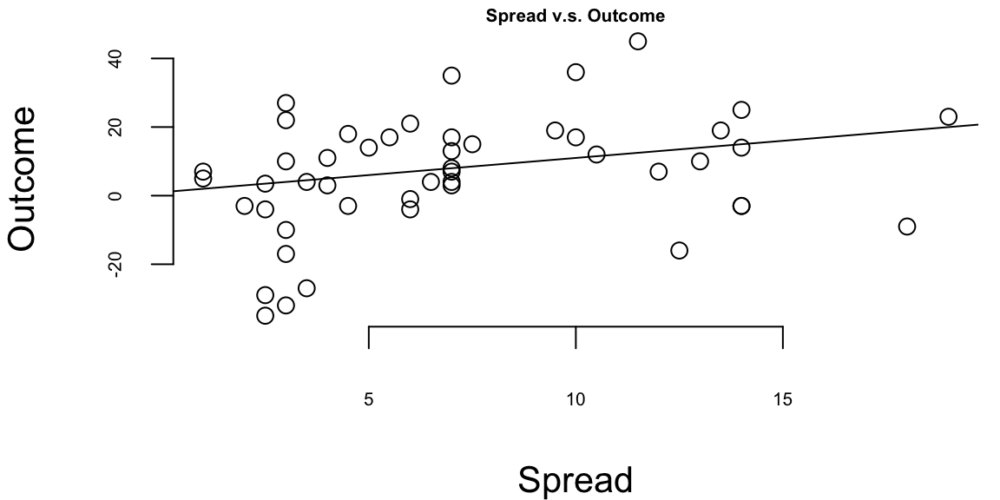
# Covariance, Correlation, alpha, beta
x <- Spread
y <- Outcome
mean(x)## [1] 7.1mean(y)## [1] 6.2sd(x)## [1] 4.6sd(y)## [1] 17cov(x,y)## [1] 24cor(x,y)## [1] 0.3beta <- cor(x,y)*sd(y)/sd(x)
alpha <- mean(y)-beta*mean(x)
beta## [1] 1.1alpha## [1] -1.8# Regression check
model <- lm(y~x)
coef(model)## (Intercept) x
## -1.8 1.1####################
# part 2
####################
# Compare boxplot
boxplot(Spread,Outcome,horizontal=T,names=c("spread","outcome"),
col=c("red","yellow"),main="Superbowl")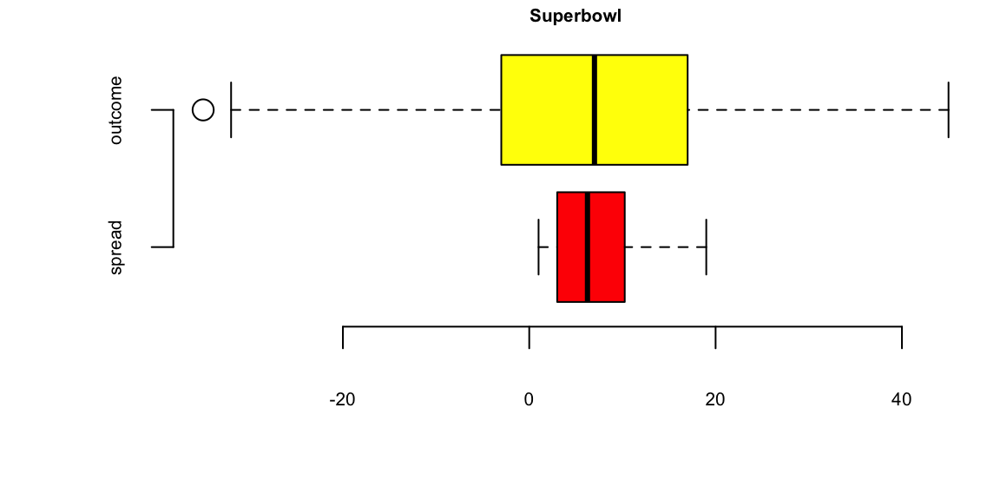
#####################
# part 3
#####################
# see the distribution of outcome and spread through histograms
hist(Outcome,freq=FALSE)
# add a normal distribution line to compare
lines(seq(-50,50,0.01),dnorm(seq(-50,50,0.01),mean(Outcome),sd(Outcome)))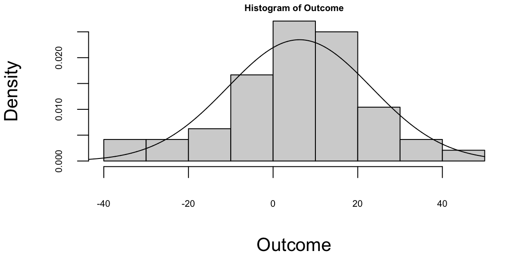
hist(Spread,freq=FALSE)
lines(seq(-10,30,0.01),dnorm(seq(-10,30,0.01),mean(Spread),sd(Spread)))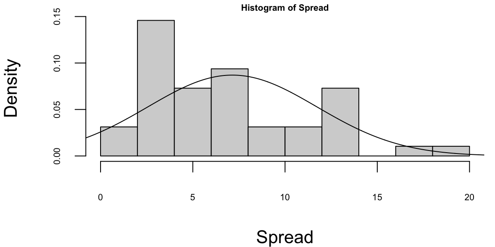
######################
## Kentucky Derby
######################
mydata2 <- read.csv("../data/Kentucky_Derby_2014.csv",header=T)
# attach the dataset
attach(mydata2)
head(mydata2)| year | year_num | date | winner | mins | secs | timeinsec | distance | speedmph |
|---|---|---|---|---|---|---|---|---|
| 1875 | 1 | May 17, 1875 | Aristides | 2 | 38 | 158 | 1.5 | 34 |
| 1876 | 2 | May 15, 1876 | Vagrant | 2 | 38 | 158 | 1.5 | 34 |
| 1877 | 3 | May 22, 1877 | Baden-Baden | 2 | 38 | 158 | 1.5 | 34 |
| 1878 | 4 | May 21, 1878 | Day Star | 2 | 37 | 157 | 1.5 | 34 |
| 1879 | 5 | May 20, 1879 | Lord Murphy | 2 | 37 | 157 | 1.5 | 34 |
| 1880 | 6 | May 18, 1880 | Fonso | 2 | 38 | 158 | 1.5 | 34 |
summary(mydata2)## year year_num date winner
## Min. :1875 Min. : 1.0 Length:140 Length:140
## 1st Qu.:1910 1st Qu.: 35.8 Class :character Class :character
## Median :1944 Median : 70.5 Mode :character Mode :character
## Mean :1944 Mean : 70.5
## 3rd Qu.:1979 3rd Qu.:105.2
## Max. :2014 Max. :140.0
## mins secs timeinsec distance speedmph
## Min. :1.00 Min. : 0.00 Min. :119 Min. :1.25 Min. :31.3
## 1st Qu.:2.00 1st Qu.: 2.20 1st Qu.:122 1st Qu.:1.25 1st Qu.:35.0
## Median :2.00 Median : 4.13 Median :124 Median :1.25 Median :36.3
## Mean :1.99 Mean :10.42 Mean :130 Mean :1.29 Mean :35.9
## 3rd Qu.:2.00 3rd Qu.: 9.00 3rd Qu.:129 3rd Qu.:1.25 3rd Qu.:36.8
## Max. :2.00 Max. :59.97 Max. :172 Max. :1.50 Max. :37.7##################
# part 1
##################
# plot a histogram of speedmph
hist(speedmph,col="blue")# finer bins
hist(speedmph,breaks=10,col="red")hist(timeinsec,breaks=10,col="purple")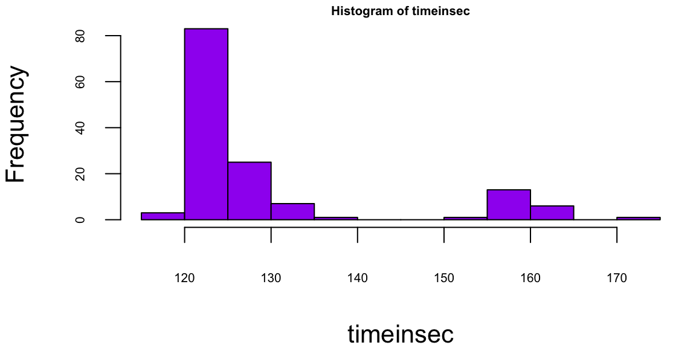
####################
# part 2
###################
# to find the left tail observation
k1 <- which(speedmph == min(speedmph))
mydata2[k1,]| year | year_num | date | winner | mins | secs | timeinsec | distance | speedmph | |
|---|---|---|---|---|---|---|---|---|---|
| 17 | 1891 | 17 | May 13, 1891 | Kingman | 2 | 52 | 172 | 1.5 | 31 |
# to find the best horse
k2 <- which(speedmph == max(speedmph))
mydata2[k2,] | year | year_num | date | winner | mins | secs | timeinsec | distance | speedmph | |
|---|---|---|---|---|---|---|---|---|---|
| 99 | 1973 | 99 | 5-May-73 | Secretariat | 1 | 59 | 119 | 1.2 | 38 |
Exercise 27.29 (Berkshire Hathaway: Yahoo Finance Data) Download daily return data in Warren Buffett’s firm Berkshire Hathaway (ticker symbol: BRK-A) from 1990 to the present. Analyze this data in the following way:
Solution:
library(quantmod)
getSymbols("BRK-A", from = "1990-01-01", to = "2024-01-01")
BRKA = get('BRK-A')
BRKA = BRKA[,4]
head(BRKA)
plot(BRKA,type="l",col=20,main="BRKA Share Price",ylab="Price",xlab="Time",bty='n')
# calculate the simple return
N <- length(BRKA)
y = as.vector(BRKA)
ret <- y[-1]/y[-N]-1
# create summaries of ret for BRK-A
summary(ret)
sd(ret)
# histogram of returns
hist(ret,breaks=50,main="BRK-A daily returns")
# plots to show serial correlation in 1st and 2nd moments
# to save the plot,click "Export" ans "save as image"
acf(ret,lag.max=10,main="serial correlation in 1st moment")
acf(ret^2,lag.max=10,main="serial correlation in 2nd moment")## [1] "BRK-A"## BRK-A.Close
## 1990-01-02 8625
## 1990-01-03 8625
## 1990-01-04 8675
## 1990-01-05 8625
## 1990-01-08 8625
## 1990-01-09 8555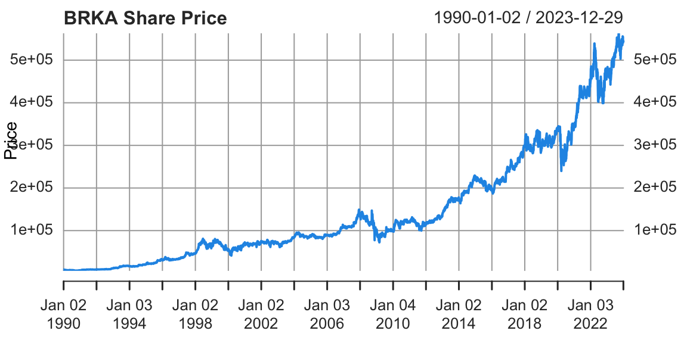
## Min. 1st Qu. Median Mean 3rd Qu. Max.
## -0.120879 -0.005857 0.000000 0.000583 0.006473 0.161290## [1] 0.014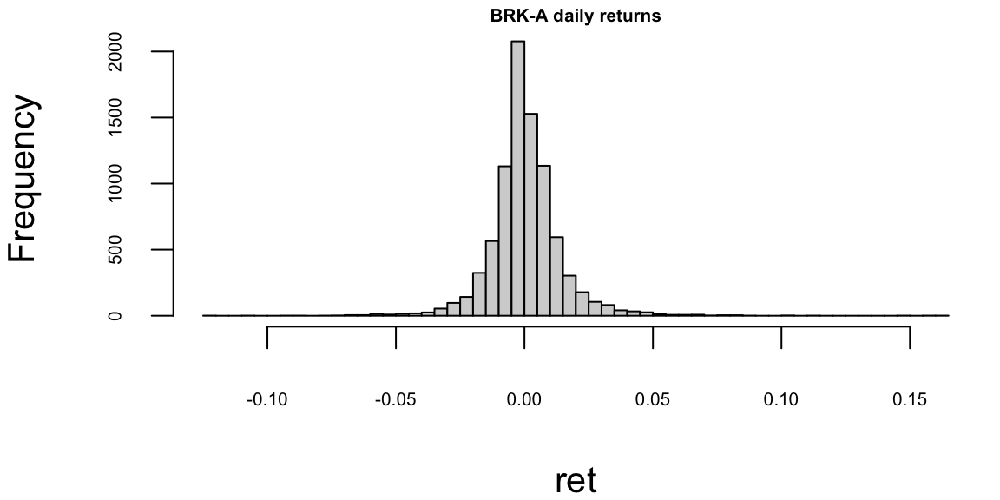
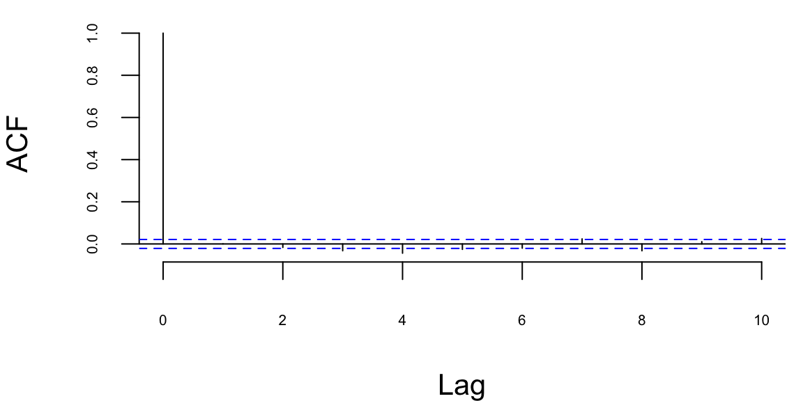
Exercise 27.30 (Confidence Intervals) A sample of weights of 40 rainbow trout revealed that the sample mean is 402.7 grams and the sample standard deviation is 8.8 grams.
Exercise 27.31 (Confidence Intervals) A research firm conducted a survey to determine the mean amount steady smokers spend on cigarettes during a week.
A sample of 49 steady smokers revealed that \(\bar{X} = 20\) and \(s = 5\) dollars.
Exercise 27.32 (Back cast US Presidential Elections) Use data from presidential polls to predict the winner of the elections. We will be using data from http://www.electoral-vote.com/. The goal is to use simulations to predict the winning percentage for each of the candidates. Use election.Rmd script as the starter.
Report prediction as a 50% confidence interval for each of the candidates.
Exercise 27.33 (Russian Parliament Election Fraud (5 pts)) On September 28, 2016 United Russia party won a super majority of seats, which will allow them to change the Constitution without any votes of other parties. Throughout the day there were reports of voting fraud including video purporting to show officials stuffing ballot boxes. Additionally, results in many regions demonstrate that United Russia on many poll stations got anomalously closed results, for example, 62.2% in more than hundred poll stations in Saratov Region.
Using assumption that United Russia’s range in Saratov was [57.5%, 67.5%] and results for each poll station are rounded to one decimal point (when measure in percent), calculate probability that in 100 poll stations out of 1800 in Saratov Region the majority party got exactly 62.2%.
Do you think it can happen by a chance?
Exercise 27.34 (A/B Testing) Use dataset from ab_browser_test.csv. Here is the definition of the columns:
userID: unique user IDbrowser: browser which was used by userIDslot: status of the user (exp = saw modified page, control = saw unmodified page)n_clicks: number of total clicks user did during as a result of n_queriesn_queries: number of queries made by userID, who used browser browsern_nonclk_queries: number of queries that did not result in any clicksNote, that not everyone uses a single browser, so there might be multiple rows with the same userID. In this data set combination of userID and browser is the unique row identifier.
qqplot.n_nonclk_queries by sum of n_queries. Comment your on your results.Exercise 27.35 (Chicago Crime Data Analysis) On January 24, 2017 Donald Tramp tweeted about "horrible" murder rate in Chicago.
Our goal is to analyze the data and check how statistically significant such a statement. I downloaded Chicago’s crime data from the data portal: data.cityofchicago.org. This data contains reported incidents of crime (with the exception of murders where data exists for each victim) that occurred in the City of Chicago from 2001 to present, minus the most recent seven days. Data is extracted from the Chicago Police Department’s CLEAR (Citizen Law Enforcement Analysis and Reporting) system. In order to protect the privacy of crime victims, addresses are shown at the block level only and specific locations are not identified. This data set has 6.3 million records. Each crime incident is categorized using one of the 35 primary crime types: NARCOTICS, THEFT, CRIMINAL TRESPASS, etc.. I frittered incidents of type HOMICIDE into a separate data set stored in chi_homicide.rds. Use chi_crime.R as a staring script for this problem.
Exercise 27.36 (Gibbs Sampler) Suppose we model data using the following model \[ \begin{aligned} y_i \sim &N(\mu,\tau^{-1})\\ \mu \sim & N(0,1)\\ \tau \sim & Gamma(2,1). \end{aligned} \]
The goal is to implement a Gibbs sample for the posterior \(\mu,\tau | y\), where \(y = (y_1,\ldots,y_n)\) is the observed data. Gibbs sampler algorithms iterates between two steps
Show that those full conditional distributions are given by \[ \begin{aligned} \mu \mid \tau, y \sim & N\left(\dfrac{\tau n\bar y}{1+n\tau},\dfrac{1}{1+n\tau}\right)\\ \tau \mid \mu,y \sim & \mathrm{Gamma}\left(2+\dfrac{n}{2}, 1+\dfrac{1}{2}\sum_{i=1}^{n}(y_i-\mu)^2\right) \end{aligned} \]
Use formulas for full conditional distributions and implement the Gibbs sampler. The data \(y\) is in the file MCMCexampleData.txt.
Plot samples from the joint distribution over \((\mu,\tau)\) on a scatter plot. Plot histograms for marginal \(\mu\) and \(\tau\) (marginal distributions).
Solution: First we write the joint distribution of \((y,\tau,\mu)\) as \[\begin{align*} p(y,\tau,\mu) &= p(y|\tau,\mu) p(\mu) p(\tau)\\ &=\left(\prod_{i=1}^{n} \frac{\sqrt{\tau}}{\sqrt{2\pi}} e^{-\frac{\tau}{2}(y_i-\mu)^2} \right) \frac{1}{\sqrt{2\pi}} e^{-\frac{1}{2}\mu^2} \frac{1}{\Gamma(2)} \tau e^{-\tau} \end{align*}\] Therefore, \[\begin{align*} p(\mu|\tau,y) &= \frac{p(y,\tau,\mu)}{p(\tau,y)}\\ &\propto \left(\prod_{i=1}^{n} e^{-\frac{\tau}{2}(y_i-\mu)^2} \right) e^{-\frac{1}{2}\mu^2}\\ &\propto e^{-\frac{\tau n+1}{2}\mu^2 + \tau n\bar{y}\mu}\\ &\sim N\left(\frac{\tau n \bar{y}}{1+\tau n}, \frac{1}{1+\tau n}\right)\\ p(\tau|\mu, y) &= \frac{p(y,\tau,\mu)}{p(\mu,y)}\\ &\propto \left(\prod_{i=1}^{n} \sqrt{\tau}e^{-\frac{\tau}{2}(y_i-\mu)^2} \right) \tau e^{-\tau}\\ &= \tau^{1+n/2} e^{-(1+\sum_{i=1}^{n}(y_i-\mu)^2/2)\tau}\\ &\sim \mathrm{Gamma}\left(2+\frac{n}{2}, 1+\frac{1}{2}\sum_{i=1}^{n}(y_i-\mu)^2\right) \end{align*}\]
Exercise 27.37 (AAPL vs GOOG) Download AAPL and GOOG return data from 2018 to 2024. Plot box-plot and histogram. Calculate summary statistics using summary function. Describe clearly what you learn from the summary and the plots.
Solution:
library(quantmod)
getSymbols(c("AAPL","GOOG"), from = "2018-01-01", to = "2024-01-01")
AAPL = dailyReturn(AAPL$AAPL.Adjusted)
GOOG = dailyReturn(GOOG$GOOG.Adjusted)boxplot(AAPL, col="red"); boxplot(GOOG, col="green")
hist(AAPL, col="red", breaks=50); hist(GOOG, col="green", breaks=50)
summary(AAPL); summary(GOOG)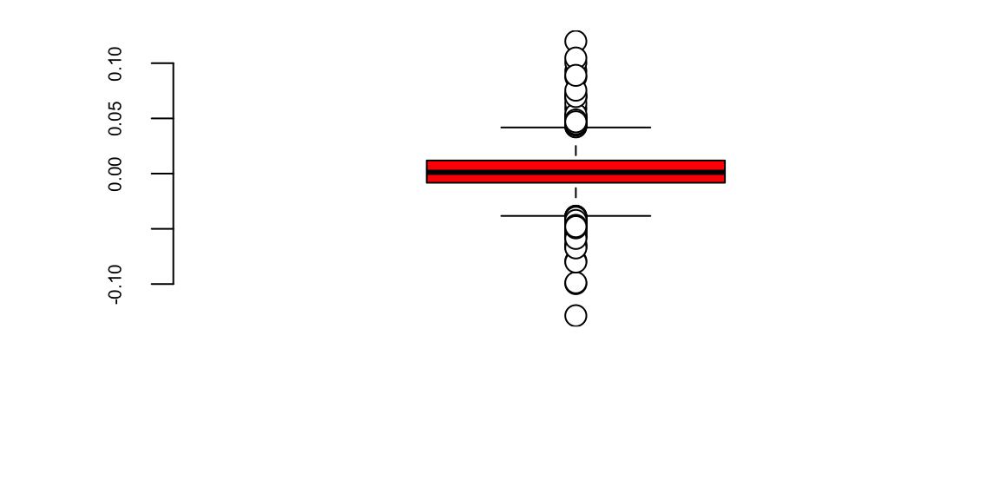
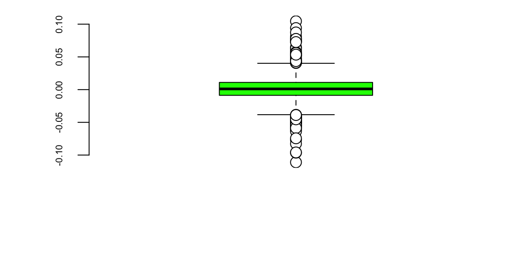
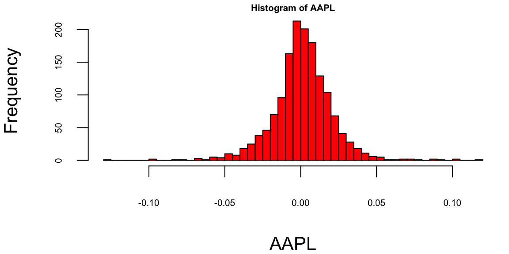
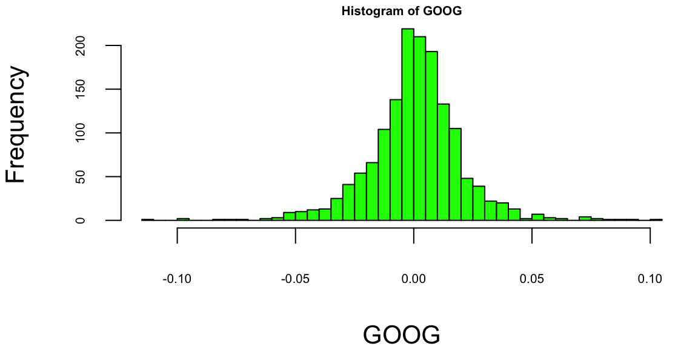
## Index daily.returns
## Min. :2018-01-02 Min. :-0.12865
## 1st Qu.:2019-07-03 1st Qu.:-0.00824
## Median :2020-12-30 Median : 0.00118
## Mean :2020-12-30 Mean : 0.00123
## 3rd Qu.:2022-06-30 3rd Qu.: 0.01188
## Max. :2023-12-29 Max. : 0.11981## Index daily.returns
## Min. :2018-01-02 Min. :-0.111008
## 1st Qu.:2019-07-03 1st Qu.:-0.008736
## Median :2020-12-30 Median : 0.001068
## Mean :2020-12-30 Mean : 0.000839
## 3rd Qu.:2022-06-30 3rd Qu.: 0.010999
## Max. :2023-12-29 Max. : 0.104485From the box plots, we can see many extreme observations out of 1.5 IQR (inter-quarter-range) of the lower and upper quartiles, which are confirmed by the high kurtosis values. We can also see their heavy tails in the histograms. GOOG is positive skew (mean much higher than median) and AAPL is not “significantly” skew (mean close to median).
Exercise 27.38 (Berkshire Realty) Berkshire Realty is interested in determining how long a property stays on the housing market. For a sample of \(800\) homes they find the following probability table for length of stay on the market before being sold as a function of the asking price
| Days until Sold | Under 20 | 20-40 | over 40 |
| Under $250K | 50 | 40 | 10 |
| $250-500K | 20 | 150 | 80 |
| $500-1M | 20 | 280 | 100 |
| Over $1 M | 10 | 30 | 10 |
Solution:
Exercise 27.39 (TrueF/False)
If \(\mathbb{P} \left ( A \; \mathrm{ and} \; B \right ) \leq 0.2\) then \(\mathbb{P} (A) \leq 0.2\).
If \(P( A | B ) = 0.5\) and \(P(B ) = 0.5\), then the events \(A\) and \(B\) are necessarily independent.
A box has three drawers; one contains two gold coins, one contains two silver coins, and one contains one gold and one silver coin. Assume that one drawer is selected randomly and that a randomly selected coin from that drawer turns out to be gold. Then the probability that the chosen drawer contains two gold coins is \(50\)%.
Suppose that \(P(A) = 0.4 , P(B)=0.5\) and \(P( A \text{ or }B ) = 0.7\) then\(P( A \text{ and }B ) = 0.3\).
If \(P( A \text{ or }B ) = 0.5\) and \(P(A \text{ and }B ) = 0.5\), then \(P(A) = P( B)\).
The following data on age and martial status of \(140\) customers of a Bondi beach night club were taken
| Age | Single | Not Single |
|---|---|---|
| Under 30 | 77 | 14 |
| Over 30 | 28 | 21 |
Given this data, age and martial status are independent.
If \(P( A \text{ and }B ) = 0.5\) and \(P(A) = 0.1\), then \(P(B|A) = 0.1\).
In a group of students, \(45\)% play golf, \(55\)% play tennis and \(70\)% play at least one of these sports. Then the probability that a student plays golf but not tennis is \(15\)%.
The following probability table related age with martial status
| Age | Single | Not Single |
|---|---|---|
| Under 30 | 0.55 | 0.10 |
| Over 30 | 0.20 | 0.15 |
Given these probabilities, age and martial status are independent.
Thirty six different kinds of ice cream can be found at Ben and Jerry’s.There are \(58,905\) different combinations of four choices of ice cream.
Suppose that for a certain Caribbean island the probability of a hurricane is \(0.25\), the probability of a tornado is \(0.44\) and the probability of both occurring is \(0.22\). Then the probability of a hurricane or a tornado occurring is \(0.05\).
If \(P ( A \text{ and }B ) \geq 0.10\) then \(P(A) \geq 0.10\).
If \(A\) and \(B\) are mutually exclusive events, then \(P(A|B) = 0\).
True. By definition, if \(A\) and \(B\) are mutually exclusive events then \(P( A \text{ and }B)=0\) and so \(P(A|B) = P(A \text{ and }B)/P(B) = 0\)
Solution:
False. We only know \(\mathbb{P} \left ( A \; \mathrm{ and} \; B \right ) \leq \mathbb{P}(A)\).
False. This is not necessarily true. We need more information about each event to definitively say so.
False. Knowing that we have a gold coin, there is 2/3 chance of being in the 2 gold coin drawer and a 1/3 chance of being in the 1 gold coin drawer. Therefore, the probability that the chosen drawer contains twofold coins is 2.
False. \(P(A \text{ and }B)=P(A)+P(B)-P(A \text{ or }B)=0.2\)
True. We know that \(P( A \text{ or }B ) = P(A) +P(B) - P(A \text{ and }B )\) and so\(P(A) + P(B) =1\). Also \(P( A) \geq P( A \text{ and }B ) = 0.5\) and so\(P(A)=P(B) = 0.5\)
False. We can compute conditional probabilities as\(P ( S | U_{30} ) = 0.8462 , P ( M | U_{30} ) = 0.1638\) and\(P ( S | O_{30} ) = 0.5714 , P ( M | O_{30} ) = 0.4286\). The events aren’t independent as the conditional probabilities are not the .
False. \(P(B|A) = P( A \text{ and }B ) / P( A)\) would be greater than one
True. \(P(G)=0.45, P(T)=0.55, P(G \text{ or }T) = 0.70\) implies \(P(G \text{ and }\bar{T}) = 0.15\)
False. \(P ( X > 30 \text{ and }Y = \mathrm{ married} ) = 0.15 \neq -.35 \times 0.25 = P ( X > 30 )P( Y = \mathrm{ married} )\)
True. Combinations are given by \(36!/(36-6)!6! =58,905\)
If two events \(A\) and \(B\) are independent then both \(P(A|B) =P(A)\) and\(P(B|A)=P(A)\).
False. \(P(B|A)=P(A)\). Note that the statement is true if (and only if)\(P(A)=P(B)\)
False. \(P(H \text{ or }T)=P(H)+P(T)-P(H \text{ and }T)=0.25+0.44-0.22=0.47\)
True. \(A \text{ and }B\) is a subset of \(A\) and so\(P(A) \geq P(A \text{ and }B) = 0.10\)
Exercise 27.40 (Marginal and Joint) Let \(X\) and \(Y\) be independent with a joint distribution given by \[f_{X,Y}(x,y) = \frac{1}{2 \pi} \sqrt{ \frac{1}{xy} } \exp \left( - \frac{x}{2} - \frac{y}{2} \right) \text{ where } x, y > 0 .\] Identify the following distributions
Solution:
Exercise 27.41 (Conditional)
Solution:
Exercise 27.42 (Joint and marginal) Let \(X\) and \(Y\) be independent exponential random variables with means \(\lambda\) and \(\mu\), respectively.
Solution:
The marginal distribution of \(V\) is given by \[ f_V ( v) = \int_{0}^{\infty} f_{U,V} ( u,v) du \] Hence, \[ f_V(v) = \frac{ \lambda \mu }{ ( \mu v + \lambda ( 1-v) )^2 } \]
Exercise 27.43 (Toll road) You are designing a toll road that carries trucks and cars. Each week you see an average of 19,000 vehicles pass by. The current toll for cars is 50 cents and you wish to set the toll for trucks so that the revenue reaches $11,500 per week. You observe the following data: three of every four trucks on the road are followed by a car, while only one of every five cars is followed by a truck.
Solution:
The transition matrix for the number of trucks and cars is given by \[P = \left ( \begin{array}{cc} \frac{1}{4} & \frac{3}{4} \\ \frac{1}{5} & \frac{4}{5} \end{array} \right )\] The equilibrium distribution \(\pi = ( \pi_1 , \pi_2 )\) is given by \(\pi P = \pi\). This has solution given by \[\frac{1}{4} \pi_1 + \frac{1}{5} \pi_2 = \pi_1 \; \; \mathrm{ and} \; \; \frac{3}{4} \pi_1 + \frac{4}{5} \pi_2 = \pi_2\] with \(\pi_1 = \frac{4}{19}\) and \(\pi_2 = \frac{15}{19}\).
With cars at a toll of 50 cents we see that we need to charge trucks $1.00 to generate revenues of $11,500 per week.
Exercise 27.44 Let \(X, Y\) have a bivariate normal density with density given by \[f_{X,Y} ( x, y) = \frac{1}{ 2 \pi \sqrt{ ( 1 - \rho^2 )} } \exp \left ( - \frac{1}{2} \left ( x^2 - 2 \rho x y + y^2 \right ) \right )\] Consider the transformation \(W=X\) and \(Z = \frac{ Y - \rho X}{ \sqrt{ 1 - \rho^2 } }\). Show that \(W , Z\) are independent and identify their distributions.
Solution:
The Jacobian of this linear transformation is given by \(J = \sqrt{ 1 - \rho^2 }\). Knowing that \(X = g(W,Z) = W\), and \(Y = h(W,Z) = \sqrt{1-\rho^2} Z + \rho W\), and Jacobian \(J\), we can apply the transformation formula: \[ \begin{aligned} f_{W,Z} (w,z) &=& f_{X,Y} (g(w,z),h(w,z)) |J|\\ &=& f_{X,Y} (w, \sqrt{1-\rho^2} Z + \rho W)\sqrt{1-\rho^2}\\ &=& \frac{1}{2\pi} \exp \left ( -\frac{1}{2} \left ( w^2-2\rho w \left ( \sqrt{1-\rho^2} z + \rho w \right ) + \left ( \sqrt{1-\rho^2} z + \rho w \right )^2 \right ) \right )\\ &=& \frac{1}{2\pi} \exp\left ( -\frac{1-\rho^2}{2}(w^2+z^2) \right )\\ &\propto& \exp \left ( -\frac{(1-\rho^2)w^2}{2} \right ) \exp\left ( -\frac{(1-\rho^2)z^2}{2} \right )\\ &\propto& f_W(w) f_Z(z) \end{aligned} \] Because we can write the joint distribution of \((W,Z)\) as the product of two marginal distributions, \(W\) and \(Z\) are independent. \(W\), \(Z\) both follow normal distribution with mean \(0\), and variance \((1-\rho^2)^{-1}\).
Exercise 27.45 (Manchester) While watching a game of Champions League football in a cafe, you observe someone who is clearly supporting Manchester United in the game. What is the probability that they were actually born within 20 miles of Manchester? Assume that you have the following base rate probabilities
Solution:
Define
We want \(P(B|U)\). By Bayes’ Theorem, \[ P(B|U) = \frac{P(U|B)P(B)}{P(U|B)P(B) + P(U|NB)P(NB)} = 0.269 \]
Exercise 27.46 (Lung Cancer) According to the Center for Disease Control (CDC), we know that “compared to nonsmokers, men who smoke are about \(23\) times more likely to develop lung cancer and women who smoke are about \(13\) times more likely” You are also given the information that \(17.9\)% of women in 2016 smoke.
If you learn that a woman has been diagnosed with lung cancer, and you know nothing else, what’s the probability she is a smoker?
Solution:
If we draw the decision tree we get
If \(y\) is the fraction of women who smoke, and \(x\) is the fraction of nonsmokers who get lung cancer, the number of smokers who get cancer is proportional to 13xy, and the number of nonsmokers who get lung cancer is proportional to x(1-y).
Of all women who get lung cancer, the fraction who smoke is \(13xy / (13xy + x(1-y))\).
The x’s cancel, so it turns out that we don’t actually need to know the absolute risk of lung cancer, just the relative risk. But we do need to know y, the fraction of women who smoke. According to the CDC, y was 17.9% in 2009. So we just have to compute \[ 13y / (13y + 1-y) \approx 74\% \] This is higher than most people guess.
Exercise 27.47 (Tesla Chip) Tesla purchases a particular chip called the HW 5.0 auto chip from three suppliers Matsushita Electric, Philips Electronics, and Hitachi. From historical experience we know that 30% of the chips are purchased from Matsushita; 20% from Philips and the remaining 50% from Hitachi. The manufacturer has extensive histories on the reliability of the chips. We know that 3% of the Matsushita chips are defective; 5% of the Philips and 4% of the Hitachi chips are defective.
A chip is later found to be defective; what is the probability it was manufactured by each of the manufacturers?
Solution:
Let \(A_1\) denotes the event that the chip is purchased from Matsushita. Similarly \(A_2\) and \(A_3\). Let \(D\) be the event that the chip is defective and \(\bar{D}\) is not. We know \[ P( D | A_1 ) = 0.03 \; \; P( D | A_2 ) = 0.05 \; \; P( D | A_3 ) = 0.04 \; \; \] and \[ P( A_1 ) = 0.30 \; \; P( A_2 ) = 0.20 \; \; P( A_3 ) = 0.50 \]
The probability that it was manufactured by Philips given that its defective is given by Bayes rule which gives \[ P( A_2 | D ) = \frac{ P( D | A_2 ) P( A_2 ) }{P( D | A_1 )P( A_1 ) +P( D | A_2 ) P( A_2 ) + P( D | A_3 ) P( A_3 ) } \] That is \[ P( A_2 | D ) = \frac{ 0.20 \times 0.05 }{ 0.30 \times 0.03 +0.20 \times 0.05 + 0.50 \times 0.04 } = \frac{10}{39} \] Similarly, \(P( A_1 | D ) = 9 / 39\) and \(P( A_3 | D ) = 20/39\)
Exercise 27.48 (Light Aircraft) Seventy percent of the light aircraft that disappear while in flight in a certain country are subsequently discovered. Of the aircraft that are discovered, 60% have an emergency locator, whereas 90% of the aircraft not discovered do not have such a locator. Suppose that a light aircraft has disappeared. If it has an emergency locator, what is the probability that it will be discovered?
Solution:
Let D = {The disappearing aircraft is discovered.} and E = {The aircraft has an emergency locator}. Given: \[ P(D) = 0.70 \quad P(D^c) = 1- P(D) = 0.30 \quad P(E|D) = 0.60 \] \[ P(E^c|D^c) = 0.90 \quad P(E|D^c) = 1 - P(E^c|D^c) = 0.10 \] Then, \[ \begin{aligned} P(D|E) &=& \frac{P(D \text{ and }E)}{P(E)}\\ &=& \frac{P(D) \times P(E|D)}{P(D) \times P(E|D) + P(D^c) \times P(E|D^c)}\\ &=& \frac{0.70 \times 0.60}{(0.70\times0.60) + (0.30 \times 0.10)} = 0.93 \end{aligned} \]
Exercise 27.49 (Floyd Landis) Floyd Landis was disqualified after winning the 2006 Tour de France. This was due to a urine sample that the French national anti-doping laboratory flagged after Landis had won stage \(17\) because it showed a high ratio of testosterone to epitestosterone. Because he was among the leaders he provided \(8\) pairs of urine samples – so there were \(8\) opportunities for a true positive and \(8\) opportunities for a false positive.
Solution:
Exercise 27.50 (BRCA1) Approximately \(1\)% of woman aged \(40-50\) have breast cancer. A woman with breast cancer has a \(90\)% chance of a positive mammogram test and a \(10\)% chance of a false positive result. Given that someone has a positive test, what’s the posterior probability that they have breast cancer?
If you have the BRCA1 gene mutation, you have a \(90\)% chance of developing breast cancer. The prevalence of mutations at BRCA1 has been estimated to be 0.04%-0.20% in the general population. The genetic test for a mutation of this gene has a \(99.9\)% chance of finding the mutation. The false positive rate is unknown, but you are willing to assume its still \(10\)%.
Given that someone tests positive for the BRCA1 mutation, what’s the posterior probability that they have breast cancer?
Solution: We know \(P(C) = 0.01\) and \(P(T\mid C) = 0.9\), \(P(T\mid \bar C) = 0.1\), \[ P(C\mid T) = \frac{P(T\mid C)P(C)}{P(T\mid C)P(C) + P(T\mid \bar C)P(\bar C)} = \frac{0.9 \times 0.01}{0.9 \times 0.01 + 0.1 \times 0.99} = 0.083 \]
0.9*0.01/(0.9*0.01 + 0.1*0.99)## [1] 0.083For part 2, we know \(P(C\mid B) = 0.9\), \(P(B) \in [0.04,0.2]\), \(P(BT\mid B) = 0.999\), \(P(BT\mid \bar B) = 0.1\), then
\[ P(C\mid BT) = \frac{P(BT, C)}{P(BT)} \] We will do the calculation for the low-end of the BRCA1 mutation \(P(B) = 0.0004\) The total probability of a positive test is given by \[ P(BT) = P(BT\mid B)P(B) + P(BT\mid \bar B)P(\bar B) = 0.999*0.0004 + 0.1*0.9996 = 0.1003596 \]
We can calculate joint over \(BT\) and \(C\) by marginalizing \(B\) from the joint distribution of \(B\) and \(C\) and \(BT\). \[ P(BT,C,B) = P(BT\mid B,C)P(B,C) = P(BT\mid B)P(C\mid B)P(B) \] Here we used the fact that \(BT\) is conditionally independent of \(C\) given \(B\). Now we can marginalize over \(B\) to get \[ P(BT,C) = P(BT,C,\bar B) + P(BT,C,B) = P(BT\mid \bar B)P(\bar B)P(C\mid \bar B) + P(BT\mid B)P(B)P(C\mid B) = 0.1*0.9996*P(C\mid \bar B) + 0.999*0.0004*0.9 \] We can find \(P(C\mid \bar B)\) from the total probability \[ P(C) = P(C\mid B)P(B) + P(C\mid \bar B)P(\bar B) = 0.9*0.0004 + P(C\mid \bar B)*0.9996 \] \[ P(C\mid \bar B) = (0.01 - 0.9*0.0004)/0.9996 = 0.009643858 \] \[ P(BT,C) = 0.1*0.9996*0.009643858 + 0.999*0.0004*0.9 = 0.00132364 \]
\[ P(C\mid BT) = \frac{P(BT, C)}{P(BT)} = 0.00132364/0.1003596 = 0.01318897 \] A small probability of 1.32%.
For the high-end of the BRCA1 mutation \(P(B) = 0.002\), we get \[ P(C\mid BT) = 0.02637794 \] Slightly large probability of 2.64%.
PB = seq(0.0004,0.002, by = 0.0001)
PCBT = 0.1*(1-PB)*(0.01 - 0.9*PB)/(1-PB) + 0.999*PB*0.9
plot(PB,PCBT, type = "l", xlab = "P(B)", ylab = "P(C|BT)")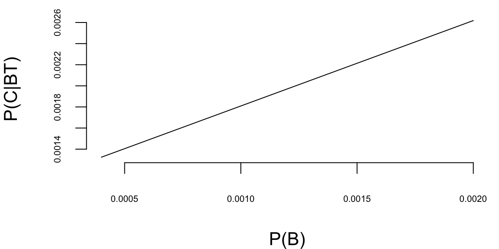
Exercise 27.51 (Another Cancer Test) Bayes is particularly useful when predicting outcomes that depend strongly on prior knowledge.
Suppose that a woman is her forties takes a mammogram test and receives the bad news of a positive outcome. Since not every positive outcome is real, you assess the following probabilities. The base rate for a woman is her forties to have breast cancer is \(1.4\)%. The probability of a positive test given breast cancer is \(75\)% and the probability of a false positive is \(10\)%.
Given the positive test, what’s the probability that she has breast cancer?
Exercise 27.52 (Bayes Rule: Hit and Run Taxi) A certain town has two taxi companies: Blue Birds, whose cabs are blue, and Uber, whose cabs are black. Blue Birds has 15 taxis in its fleet, and Uber has 75. Late one night, there is a hit-and-run accident involving a taxi.
The town’s taxis were all on the streets at the time of the accident. A witness saw the accident and claims that a blue taxi was involved. The witness undergoes a vision test under conditions similar to those on the night in question. Presented repeatedly with a blue taxi and a black taxi, in random order, they successfully identify the colour of the taxi 4 times out of 5.
Which company is more likely to have been involved in the accident?
Solution:
We need to know \(P(Blue \mid \mbox{identified Blue})\) and \(P(Black \mid \mbox{identified Blue})\).
First of all, write down some probability statements given in the problem. \(P(Blue) = 16.7\% \mbox{ and } P(Black) = 83.3\%\) \[ P(\mbox{identified Blue} \mid Blue) = 80\% \mbox{ and } P(\mbox{identified Black} \mid Blue) = 20\% \] \[ P(\mbox{identified Black} \mid Black) = 80\% \mbox{ and } P(\mbox{identified Blue} \mid Black) = 20\% \] Therefore, by Bayes Rule, \[ \begin{aligned} P(Blue \mid \mbox{identified Blue}) =& \frac{P(\mbox{identified Blue} \mid Blue)*P(Blue) }{P(\mbox{identified Black})} \\ =& \frac{P(\mbox{identified Blue} \mid Blue)*P(Blue) }{P(\mbox{identified Blue} \mid Blue)*P(Blue) + P(\mbox{identified Black} \mid Black)*P(Black) } \\ =& 44.5\% \end{aligned} \] \[ P(Black \mid \mbox{identified Blue}) = 1- P(Blue \mid \mbox{identified Blue}) = 55.5\% \]
Therefore, even though the witness said it was a Blue car, the probability that it was a Black car is higher.
Exercise 27.53 (Gold and Silver Coins) A chest has two drawers. It is known that one drawer has \(3\) gold coins and no silver coins. The other drawer is known to contain \(1\) gold coin and \(2\) silver coins.
You don’t know which drawer is which. You randomly select a drawer and without looking inside you pull out a coin. It is gold. Show that the probability that the remaining two coins in the drawer are gold is \(75\)%.
Solution:
Suppose drawer A contains 3G and drawer B contains 1G2S. We know the probability \(P(G \mid A) = 1\) and \(P(G \mid B) = 1/3\). Also, it must be either of two drawers, so P(A) = P(B) = 1/2. What we are are looking for is \(P(A \mid G)\): the probability that it is drawer A. By Bayes’ rule, \[ \begin{aligned} P(A \mid G) &=& \frac{P(G \mid A)\times P(A)}{P(G)} \\ &=& \frac{P(G \mid A)\times P(A)}{P(G \mid A)\times P(A) + P(G \mid B)\times P(B)} \mbox{ (Law of total probability)} \\ &=& \frac{1\times \frac{1}{2}}{1*\frac{1}{2}+\frac{1}{3}\times\frac{1}{2}} = \frac{3}{4} \end{aligned} \] The probability that it is drawer A is 75%.
Exercise 27.54 (The Monty Hall Problem.) This problem is named after the host of the long-running TV show, Let’s Make a Deal. A contestant is given a choice of 3 doors. There is a prize (a car, say) behind one of the doors and something worthless behind the other two doors (say two goats).
After the contestant chooses a door Monty opens one of the other two doors, revealing a goat. The contestant has the choice of switching doors. Is it advantageous to switch doors or not?
Solution:
Suppose you plan to switch:
You can either pick a winner, a loser, or the other loser when you make your first choice. Each of these options has a probability of \(1/3\) and are marked by a “1” below. In each case, Monty will reveal a loser (X). In the first case, he has a choice, but whichever he reveals, you will switch to the other and lose. But in the other two cases, there is only one loser for him to reveal. He must reveal this one, leaving only the winner. So, if you initially pick a loser, you will win by switching. That is, there is a \(2/3\) chance of winning if you use the switch strategy.
| W | L | L | |
|---|---|---|---|
| 1/3 | 1 | X | |
| 1/3 | 1 | X | |
| 1/3 | X | 1 |
Not convinced? Try thinking about it this way: Imagine the question with 1000 doors, and Monty will reveal 998 wrong doors after you pick one, so you are left with your choice, and one of the remaining 999 doors. Now do you want to stay or switch?
Again, suppose you are going to switch. Define the events
Since you must pick either a winner or loser with your first choice, and cannot pick both, FW and FL are mutually exclusive and collectively exhaustive. By the rule of total probability: \[ P(W) = P(W \text{ and }FW) + P(W \text{ and }FL) = P(W|FW)P(FW) + P(W|FL)P(FL) \] \[ P(W) = 0 \times \frac{1}{3} + 1 \times \frac{2}{3} = \frac{2}{3} \] Why is \(P(W\mid FW)=0\)? Because if we choose correctly, and we do switch, we must be on a loser.
Why is \(P(W|FL)=1\)? If we first picked a loser, and then switched, we will now have a winner. These both come from above.
There’s a longer explanation: Suppose you choose door A and Monty opens B.
Consider the events
Before we choose, each door was equally likely: \(P(A)=P(B)=P(C)=1/3\).
In this case, we know Monty opened B. To decide whether to switch, we want to know if \(P(A |MB)\) and \(P(C|MB)\) are the same. If they are, then there is no gain in switching: \[ P(A|MB) = \frac{P(A \text{ and }MB)}{P(MB)} = \frac{P(MB|A)P(A)}{P(MB)} \] We need these components: \(P(A)=1/3,~P(MB|A)=1/2\). This is because you picked A, and Monty can open either B or C. He cannot open A. He can open B or C because the condition in this conditional probability is that the prize is actually behind A. \[ \begin{aligned} P(MB) & = P(MB \text{ and }A) + P(MB \text{ and }B) + P(MB \text{ and }C)\\ &= P(MB|A)P(A) + P(MB|B)P(B) + P(MB|C)P(C)\\ & = \frac{1}{2}\times\frac{1}{3} + 0\times \frac{1}{3} + 1\times \frac{1}{3} = \frac{1}{6} + \frac{1}{3} = \frac{1}{2} \end{aligned} \] I already showed that \(Pr(MB\)|A)=1/2$. We have that \(Pr(MB|B)=0\) because Monty cannot reveal B if this is where the prize is. If the prize is behind C, he must open B, since you have picked A.
Putting it all together: \(P(A|MB) = \frac{P(MB|A)P(A)}{P(MB)} = \frac{\frac{1}{2}\times \frac{1}{3}}{\frac{1}{2}} = \frac{1}{3}\)
Similarly for C: \(P(C|MB) = \frac{P(MB|C)P(C)}{P(MB)} = \frac{1\times \frac{1}{3}}{\frac{1}{2}} = \frac{2}{3}\)
So we are always better off switching$!
Exercise 27.55 (Medical Testing for HIV) A controversial issue in recent years has been the the possible implementation of random drug and/or disease testing (e.g. testing medical workers for HIV virus, which causes AIDS). In the case of HIV testing, the standard test is the Wellcome Elisa test.
The test’s effectiveness is summarized by the following two attributes:
In the general population, incidence of HIV is reasonably rare. It is estimated that the chance that a randomly chosen person has HIV is \(0.000025\).
To investigate the possibility of implementing a random HIV-testing policy with the Elisa test, calculate the following:
In light of the last calculation, do you envision any problems in implementing a random testing policy?
Solution:
First, introduce some notation: let \(H\) = “Has HIV” and \(T\) = “Tests Positive”. We are given the following sensitivities and specificities \[ P(T|H) = 0.993 \; \; \text{ and} \; \; P(\bar{T}|\bar{H}) = 0.9999 \] The base rate is \(P(H) = 0.000025\).
This says that if you test positive, you have a 20% chance of having the disease. In other words, 80% of people who test positive will not have the disease. The large number of false positives means that implementing such a policy will be pretty unpopular among the people who have to be tested. Testing high risk people only might be a better idea, as this will increase the \(P(H)\) in the population.
Exercise 27.56 (The Three Prisoners) An unknown two will be shot, the other freed. Prisoner A asks the warder for the name of one other than himself who will be shot, explaining that as there must be at least one, the warder won’t really be giving anything away. The warder agrees, and says that B will be shot. This cheers A up a little: his judgmental probability for being shot is now 1/2 instead of 2/3.
Show (via Bayes theorem) that
Exercise 27.57 (The Two Children) You meet Max walking with a boy whom he proudly introduces as his son.
Exercise 27.58 (Medical Exam) As a result of medical examination, one of the tests revealed a serious illness in a person. This test has a high precision of 99% (the probability of a positive response in the presence of the disease is 99%, the probability of a negative response in the absence of the disease is also 99%). However, the detected disease is quite rare and occurs only in one person per 10,000. Calculate the probability that the person being examined does have an identified disease.
Exercise 27.59 (The Jury) Assume that the probability is 0.95 that a jury selected to try a criminal case will arrive at the correct verdict whether innocent or guilty. Further, suppose that the 80% of people brought to trial are in fact guilty.
Solution:
Let \(I\) denote the event of innocence and let \(VI\) denote the event that the jury proclaims an innocent verdict.
Exercise 27.60 (Oil company) An oil company has purchased an option on land in Alaska. Preliminary geologic studies have assigned the following probabilities of finding oil \[ P ( \text{ high \; quality \; oil} ) = 0.50 \; \; P ( \text{ medium \; quality \; oil} ) = 0.20 \; \; P ( \text{ no \; oil} ) = 0.30 \; \; \] After 200 feet of drilling on the first well, a soil test is taken. The probabilities of finding the particular type of soil identified by the test are as follows: \[ P ( \text{ soil} \; | \; \text{ high \; quality \; oil} ) = 0.20 \; \; P ( \text{ soil} \; | \; \text{ medium \; quality \; oil} ) = 0.80 \; \; P ( \text{ soil} \; | \; \text{ no \; oil} ) = 0.20 \; \; \]
Solution:
Exercise 27.61 A screening test for high blood pressure, corresponding to a diastolic blood pressure of \(90\)mm Hg or higher, produced the following probability table
| Hypertension | ||
|---|---|---|
| Test | Present | Absent |
| +ve | 0.09 | 0.03 |
| -ve | 0.03 | 0.85 |
Solution:
Exercise 27.62 (Steroids) Suppose that a hypothetical baseball player (call him “Rafael”) tests positive for steroids. The test has the following sensitivity and specificity
A respected baseball authority (call him “Bud”) claims that \(1\)% of all baseball players use Steroids. Another player (call him “Jose”) thinks that there’s a \(30\)% chance of all baseball players using Steroids.
Explain any probability rules that you use.
Solution:
Let \(T\) and \(\bar{T}\) be positive and negative test results. Let \(S\) and \(\bar{S}\) be using and not using Steroids, respectively. We have the following conditional probabilities \[ P( T | S ) = 0.95 \; \; \text{ and} \; \; P( T | \bar{S} ) = 0.10 \] For our prior distributions we have \(P_{ Bud } ( S ) = 0.01\) and \(P_{ Jose } ( S ) = 0.30\).
From Bayes rule and we have \[ P( S | T ) = \frac{ P( T | S ) P( S )}{ P(T )} \] and by the law of total probability \[ P(T) = P( T| S) P(S) + P( T| \bar{S} ) P( \bar{S} ) \] Applying these two probability rules gives \[ P_{ Bud} ( S | T ) = \frac{ 0.95 \times 0.01 }{ 0.95 \times 0.01 + 0.10 \times 0.99 } = 0.0876 \] and \[ P_{ Jose } ( S | T ) = \frac{ 0.95 \times 0.3 }{ 0.95 \times 0.3 + 0.10 \times 0.7 } = 0.8028 \]
Exercise 27.63 A Breathalyzer test is calibrated so that if it is used on a driver whose blood alcohol concentration exceeds the legal limit, it will read positive \(99\)% of the time, while if the driver is below the limit it will read negative \(90\)% of the time. Suppose that based on prior experience, you have a prior probability that the driver is above the legal limit of \(10\)%.
Solution:
Let the events be defined as follows:
\[ \begin{aligned} P(P|E) & = & 0.99\\ P(N|NE) & = & 0.90\\ P(E) & = & 0.10\end{aligned} \]
Based on above, we have \(P(P|NE)=1-P(N|NE)=0.10\) and \(P(NE)=1-P(E)=0.90\). Then,
\[ \begin{aligned} P(E|P) & = & \frac{P(P|E)P(E)}{P(P)}\\ & = & \frac{P(P|E)P(E)}{P(P|E)P(E)+P(P|NE)P(NE)}\\ & = & \frac{0.99\times0.10}{0.99\times0.10+0.10\times0.90}\\ & = & 52.38\%\end{aligned} \]
Now, we have \(P(E)=0.20\). Thus, \(P(NE)=1-P(E)=0.80\). We now calculate
\[ \begin{aligned} P(E|P) & = & \frac{P(P|E)P(E)}{P(P)}\\ & = & \frac{P(P|E)P(E)}{P(P|E)P(E)+P(P|NE)P(NE)}\\ & = & \frac{0.99\times0.20}{0.99\times0.20+0.10\times0.80}\\ & = & 71.22\%\end{aligned} \]
Thus, 71.22% of all the drivers who test positive would be above the legal limit.
Compared to Part 1, the posterior probability increases due to the fact that the probability of a driver testing positive and exceeding the legal limit increases as does the probability of testing positive. However, the increase in the probability of testing positive and exceeding the legal limit is greater than the increase in the probability of testing positive which results in an increase in the posterior probability.
Exercise 27.64 (Chicago bearcats) The Chicago bearcats baseball team plays \(60\)% of its games at night and \(40\)% in the daytime. They win \(55\)% of their night games and only \(35\)% of their day games. You found out the next day that they won their last game
Explain clearly any rules of probability that you use.
Solution:
We have the following info:
Exercise 27.65 (Spam Filter) Several spam filters use Bayes rule. Suppose that you empirically find the following probability table for classifying emails with the phrase “buy now” in their title as either “spam” or “not spam”.
| Spam | Not Spam | |
|---|---|---|
| “buy now” | 0.02 | 0.08 |
| not “buy now” | 0.18 | 0.72 |
Solution:
Exercise 27.66 (Chicago Cubs) The Chicago Cubs are having a great season. So far they’ve won \(72\) out of the \(100\) games played so far. You also have the expert opinion of Bob the sports analysis. He tells you that he thinks the Cubs will win. Historically his predictions have a \(60\)% chance of coming true.
Solution:
Exercise 27.67 (Student-Grade Causality) Consider the following probabilistic model. The student does poorly poorly in a class (\(c = 1\)) or well (\(c = 0\)) depending on the presence/absence of depression (\(d = 1\) or \(d = 0\)) and weather he/she partied last night (\(v = 1\) or \(v = 0\)) . Participation in the party can also lead to the fact that the student has a headache (\(h = 1\)). As a result of poor student’s performance, the teacher gets upset (\(t = 1\)). The probabilities are given by:
| \(p(c=1|d,v)\) | v | d |
|---|---|---|
| 0.999 | 1 | 1 |
| 0.9 | 1 | 0 |
| 0.9 | 0 | 1 |
| 0.01 | 0 | 0 |
| \(p(h=1|v)\) | v |
|---|---|
| 0.9 | 1 |
| 0.1 | 0 |
| \(p(t=1|c)\) | c |
|---|---|
| 0.95 | 1 |
| 0.05 | 0 |
\(p(v=1)=0.2\), and \(p(d=1) = 0.4\).
Draw the causal relationships in the model. Calculate \(p(v=1|h=1)\), \(p(v=1|t=1)\), \(p(v=1|t=1,h=1)\).
Exercise 27.68 (Prisoner) An unknown two will be shot, the other freed. Prisoner A asks the warder for the name of one other than himself who will be shot, explaining that as there must be at least one, the warder won’t really be giving anything away. The warder agrees, and says that B will be shot. This cheers A up a little: his judgmental probability for being shot is now 1/2 instead of 2/3. Show (via Bayes theorem) that
Solution:
Exercise 27.69 (True/False)
Solution:
Exercise 27.70 (Two Gambles) In an experiment, subjects were given the choice between two gambles:
| Experiment 1 | |||
|---|---|---|---|
| Gamble \({\cal G}_A\) | Gamble \({\cal G}_B\) | ||
| Win | Chance | Win | Chance |
| $2500 | 0.33 | $2400 | 1 |
| $2400 | 0.66 | ||
| $0 | 0.01 |
Suppose that a person is an expected utility maximizer. Set the utility scale so that u($0) = 0 and u($2500) = 1. person is an expected utility maximizer. Set the utility scale so that u($0) = 0 and u($2500) = 1. Whether a utility maximizing person would choose Option A or Option B depends on the person’s utility for $2400. For what values of u($2400) would a rational person choose Option A? For what values would a rational person choose Option B?
| Experiment 2 | |||
|---|---|---|---|
| Gamble \({\cal G}_C\) | Gamble \({\cal G}_D\) | ||
| Win | Chance | Win | Chance |
| $2500 | 0.33 | $2400 | 0.34 |
| $0 | 0.67 | $0 | 0.66 |
For what values of u($2400) would a person choose Option C? For what values would a person choose Option D? Explain why no expected utility maximizer would prefer B and C.
This problem is a version of the famous Allais paradox, named after the prominent critic of subjective expected utility theory who first presented it. Kahneman and Tversky found that 82% of subjects preferred B over A, and 83% preferred C over D. Explain why no expected utility maximizer would prefer both B in Gamble 1 and C in Gamble 2. (A utility maximizer might prefer B in Gamble 1. A different utility maximizer might prefer C in Gamble 2. But the same utility maximizer would not prefer both B in Gamble 1 and C in Gamble
Discuss these results. Why do you think many people prefer B in Gamble 1 and C in Gamble 2? Do you think this is reasonable even if it does not conform to expected utility theory?
Solution:
Define x = u($2400), the utility of $2400.
For A versus B:
Setting them equal and solving for x tells us the value of x for which an expected utility maximizer would be indifferent between the two options \[0.33* (1) + 0.66*(x) + 0.1*(0) = x\] \[x = 0.33/0.34.\]
For C versus D:
Setting them equal and solving for x tells us the value of x for which an expected utility maximizer would be indifferent between the two options \[0.33* (1) = 0.34*(x)\] \[x = 0.33/0.34\]
If x < 33/34, then an expected utility maximizer would choose option C. If x>33/34, option D an expected utility maximizer would choose option D
Why no utility maximizer would prefer B and C?
A utility maximizer would pick B if x>33/34, and would pick C if x<33/34. These regions do not overlap. By definition, an expected utility maximizer has a consistent utility value for a given payout regardless of the probability structure. Therefore, no utility maximizer would prefer B and C. A utility maximizer would be indifferent among all four of these gambles if x = 33/34. But no utility maximizer would strictly prefer B over A, and C over D.
Many people’s choices violate subjective expected utility theory in this problem. In fact, Allais carefully crafted this problem to exploit what Kahneman and Tversky called the “certainty effect.” In the choice of A vs B, many prefer a sure gain to a small chance of no gain. On the other hand, in the choice of C vs D, there is no certainty, and so people are willing to reduce their chances of winning by what feels like a small amount to give themselves a chance to win a larger amount. When given an explanation for why these choices are inconsistent with “economic rationality,” some people say they made an error and revise their choices, but others stand firmly by their choices and reject expected utility theory.
It is also interesting to look at how people respond to a third choice:
Experiment 3:
This is a two-stage problem. In the first stage there is a 66% chance you will win nothing and quit. There is a 34% chance you will go on to the second stage. In the second stage you may choose between the following two options.
| Gamble | Payout | Probability |
|---|---|---|
| E | $2500 | 33/34 |
| E | $0 | 1/34 |
| F | $2400 | 1 |
| F | $0 | 1/34 |
Experiment 3 is mathematically equivalent to Experiment 2. That is, the probability distributions of the outcomes for E and C are the same, and the probability distributions of the outcomes for F and D are the same. In experiments, the most common pattern of choices on these problems is to prefer B, C, and F. There is an enormous literature on the Allais paradox and related ways in which people systematically violate the principles of expected utility theory. For more information see Wikipedia on Allais paradox.
Exercise 27.71 (Decisions) You are sponsoring a fund raising dinner for your favorite political candidate. There is uncertainty about the number of people who will attend (the random variable \(X\)), but based on past dinners, you think that the probability function looks like this:
| \(x\) | 100 | 200 | 300 | 400 | 500 |
|---|---|---|---|---|---|
| \(P_X(x)\) | 0.1 | 0.2 | 0.3 | 0.2 | 0.2 |
Solution:
\(E(X) = 100(.1) + 200(.2) + 300(.3) + 400(.2) +500(.2) = 320\)
\(Y=40X-1500\) \(E(Y) = E(40X-1500) = 40 E(X) -1500 = 40(320) -1500 = 11300\)
Profit = \(40X - \min(2100, 5X)\). Note that the profit formula is not linear (just like in the newspaper example). Consequently, you need to re-calculate profit for each of the five cases to get the expected value.
| \(x\) | 100 | 200 | 300 | 400 | 500 |
|---|---|---|---|---|---|
| \(p_X(x)\) | 0.1 | 0.2 | 0.3 | 0.2 | 0.2 |
| costs | 500 | 1000 | 1500 | 2000 | 2100 |
| gross | 4000 | 8000 | 12000 | 16000 | 20000 |
| profit = gross – costs | 3500 | 7000 | 10500 | 14000 | 17900 |
\(E(profit) = 3500(.1) + 7000(.2) + 10500(.3) + 14000(.2) + 17900(.2) = 11280\)
The profit and standard deviation are larger in (b) than in (c). If you are risk averse, go for (c) (less uncertainty). If you are a gambler, go for (b) (higher average return). Since the difference in \(\sigma\) is larger than in the mean.
Exercise 27.72 (Marjorie Visit) Marjorie is worried about whether it is safe to visit a vulnerable relative during a pandemic. She is considering whether to take an at-home test for the virus before visiting her relative. Assume the test has sensitivity 85% and specificity 92%. That is, the probability that the test will be positive is about 85% if an individual is infected with the virus, and the probability that test will be negative is about 92% if an individual is not infected.
Further, assume the following losses for Marjorie
| Event | Loss |
|---|---|
| Visit relative, not infected | 0 |
| Visit relative, infected | 100 |
| Do not visit relative, not infected | 1 |
| Do not visit relative, infected | 5 |
Solution:
| Condition | Positive | Negative |
|---|---|---|
| Disease present | 0.85 | 0.15 |
| Disease absent | 0.08 | 0.92 |
Prior Probability: P(Disease present) = 0.002 and P(Disease absent)=0.998
We can calculate the posterior probability that the individual has the disease as follows:
First, we calculate the probability of a positive test (this will be the denominator of Bayes Rule):
P(Positive) = P(Positive | Present) * P(Present)+P(Positive | Absent) * P(Absent) = \(0.85\times 0.002 + 0.08\times 0.998 = 0.08154\)
Then, we calculate the posterior probability that the individual is has the disease by applying Bayes rule:
P(Present | Positive) = P(Positive | Present) * P(Present)/P(Positive) = 0.85 * 0.002/0.08154 = 0.0208
The posterior probability that an individual who tests positive has the disease is 0.0208.
| Condition | Positive | Negative |
|---|---|---|
| Disease present | 0.85 | 0.15 |
| Disease absent | 0.08 | 0.92 |
But the prior probability is different:
P(Disease present) = 0.00015 and P(Disease absent)=0.99985
Again, we calculate the probability of a positive test (this will be the denominator of Bayes Rule):
P(Positive) = P(Positive | Present) * P(Present)+P(Positive | Absent) * P(Absent) = 0.85 * 0.00015 + 0.08 * 0.99985 = 0.0801155
Then, we calculate the posterior probability that the individual is has the disease by applying Bayes rule:
P(Present | Positive) = P(Positive | Present) * P(Present)/P(Positive) = 0.85 * 0.00015/0.0801155 = 0.00159
The posterior probability that an individual who tests positive has the disease is 0.00159.
In both cases, the posterior probability that the individual has the disease is small, even after taking the at-home test. But it is important to note that the probability has increased by more than a factor of 10, from 2 in 1000 to more than 2% in the first case, and from 15 in 100,000 to more than 15 in 10,000 in the second case. When the prior probability is lower, so is the posterior probability.
Some students who are inexperienced with Bayesian reasoning are surprised at how small the posterior probability is after a positive test. Untrained people often expect the probability to be closer to 85%, the sensitivity of the test. I have found that a good way to explain these results to people who have trouble with it is to ask them to imagine a population of 100,000 people. For part a, we would expect 200 have the disease. Of these, we expect about 85%, or 170 people, to test positive, and 15%, or only 30 people, to test negative. So the test identified most of the ill people. But now let’s consider the 99,800 people who do not have the disease. We expect only 8% of these to test positive, but this is 7984 people testing positive. We expect 92%, or 91,816 people, to test negative. Of those who test positive, 170 have the disease and 7,984 do not. So even though most ill people test positive and most well people test negative, because there are so many more people who do not have the disease, most of the ones testing positive actually do not have the disease.
A helpful way to visualize the role of the prior probability is to plot the posterior probability as a function of the prior probability (this was not required as part of the assignment). For prior probabilities near zero, a positive test increases the probability of the disease, but it remains very low because the positives are dominated by false positives. But once the prior probability reaches 10%, there is a better than even chance that someone testing positive has the disease; at a 20% prior probability, the posterior probability is over 70%.
p = seq(0.0001, 0.2, length.out = 100)
posterior = 0.85*p/(0.85*p + 0.08*(1-p))
plot(p, posterior, type = "l", xlab = "Prior Probability", ylab = "Posterior Probability")High prevalence: P(Present) = 0.002 and P( Absent ) = 0.998
Low prevalence: P(Present) = 0.00015 and P( Absent ) = 0.99985
To calculate EVSI, we do the following:
Calculate the expected loss if we do not do the test. To do this, we use the prior probability to calculate the expected loss if we visit and if we don’t. The minimum of these is the expected loss if we do not do the test.
EL[visit] = 100p + 0(1-p)
EL[no visit] = 5p + 1(1-p)
Here, p is either 0.002 (part a) or 0.00015 (part b)
Calculate the expected loss if we do the test as follows:
Now, the EVSI is how much doing the test reduces our expected loss:
EVSI = E(L | no test) - E(L | test)
We will now apply these steps for the two base rates. The table below shows the results.
| High prevalence | Low prevalence | |
|---|---|---|
| Probability of positive test | 0.08154 | 0.08012 |
| Posterior probability of disease given positive test | 0.0208 | 0.00159 |
| Posterior probability of disease given negative test | 0.00033 | 0.0000245 |
| Expected loss - no test | Visit: 0.2 No visit: 1.008 | Visit: 0.015 No visit: 1.0006 |
| Expected loss if positive | Visit: 2.0849 No visit: 1.0834 | Visit: 0.15915 No visit: 1.00637 |
| Expected loss if negative | Visit: 0.03266 No visit: 1.00131 | Visit: 0.00245 No visit: 1.0001 |
| Expected loss with test | 0.11834 | 0.015 |
| Expected loss - no test | Visit: 0.2 No visit: 1.008 | Visit: 0.015 No visit: 1.0006 |
| EVSI | 0.2-0.11834 = 0.08166 | 0.015-0.015 = 0 |
In the high prevalence case, it is better to test and follow the test result. The EVSI is 0.08166; there is 0.08166 lower loss from testing than from not testing. In the low prevalence case, however, the optimal decision is to visit no matter what the result of the test, because the posterior probability is so low even if the test is positive. Therefore, the expected loss is the same for doing or not doing the test because we ignore the test result and visit anyway. Therefore, the EVSI is zero in the low prevalence case.
If we do not do the test, we cannot use the test result, so we have two choices: visit or do not visit. The expected loss of visiting is: E(L|V) = 100p + 0(1-p) = 100p
The expected loss of not visiting (lose 5 if ill, 1 if not ill): E(L|N) = 5p + (1-p)
Now consider the strategy of doing the test and visiting if the test is negative. We get the following losses
| Patient status | Test result | Action | Loss (L) | Probability |
|---|---|---|---|---|
| No disease | Negative | visit | 0 | (1-p)*0.92 |
| No disease | Positive | no visit | 1 | (1-p)*0.08 |
| Disease | Negative | visit | 100 | p*0.15 |
| Disease | Positive | no visit | 5 | p*0.85 |
The total expected loss of this strategy is:
E(L|T) = 0 + 10.08(1-p) + 1000.15p + 5*0.85p = 0.08 + 19.17p
Find strategy regions. With a little algebra, we can find where the lines intersect and then find the regions of optimality. These are:
| Range | Policy |
|---|---|
| \(0 \le p < 0.00099\) | Optimal policy is visit regardless of test |
| \(0.00099 < p < 0.0606\) | Optimal policy is to do the test and visit if negative |
| \(0.0606 < p \le 1\) | Optimal policy is to stay home regardless of test |
The graph below shows the plots of expected loss for the three policies. I show results only for probabilities up to 0.1 in order to have a better view of the results for small probabilities.
p = seq(0.0001, 0.1, length.out = 100)
ELV = 100*p
ELN = 5*p + (1-p)
ELT = 0.08 + 19.17*p
plot(p, ELV, type = "l", xlab = "Prior Probability", ylab = "Expected Loss", col = "red", lwd = 2)
lines(p, ELN, col = "blue", lwd = 2)
lines(p, ELT, col = "green", lwd = 2)
legend("topright", legend = c("Visit", "No Visit", "Test and Visit if Negative"), col = c("red", "blue", "green"), lwd = 2)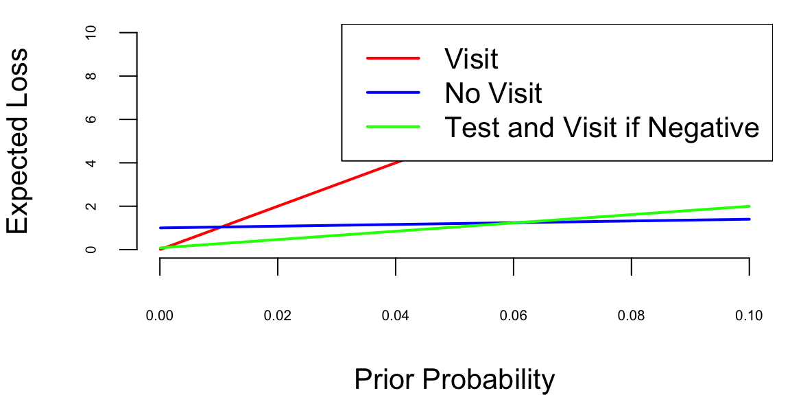
Therefore, in the range of values 0.00099 < p < 0.0606, doing the test has lower expected loss than either just visiting or just staying home. For the high prevalence situation, the prior probability of 0.002 is larger than 0.00099 and lower than 0.0606, so it is optimal to take the test and follow the result. For the low prevalence situation, the prior probability of 0.00015 is below 0.00099, and it is optimal just to visit without considering the test. That is, in very low prevalence situations, there is no point in doing the test, because even if it is positive, the posterior probability would still be low enough that it is optimal to visit. On the other hand, if Marjorie is experiencing symptoms or knows she has been exposed, that would increase the probability of having the disease. Even in a low prevalence situation, if symptoms or exposure increase the prior probability to above 0.00099 but below 0.0606, then she should take the test and follow the result. If symptoms or exposure increase the prior probability to above 0.0606, then she should not bother with the test and just stay home.
Exercise 27.73 (True/False Variance)
Solution:
Exercise 27.74 (True/False Expectation)
Solution:
Exercise 27.75 (Beta-Binomial for Allais gambles) We’ve collected data on people’s preferences in the two Allais gambles from. For this problem, we will assume that responses are independent and identically distributed, and the probability is \(\theta\) that a person chooses both B in the first gamble and C in the second gamble.
Solution:
Part a. It is convenient to use a prior distribution in the Beta family because it is conjugate to the Binomial likelihood function, which simplifies Bayesian updating. A plot of the prior density function is shown below.
curve(dbeta(x,1,3),0,1)The prior distribution has mean a/(a+b) = 0.25 and standard deviation \[ \sqrt{\dfrac{\alpha\beta}{(\alpha+\beta)^2(\alpha+\beta+1)}} = 0.194. \] An expected value of 0.25 would be reasonable if we believed that people were choosing randomly among the four options A&C, B&C, A&D, and B&D. In fact, a Beta(1,3) distribution is the marginal distribution we would obtain if we placed a uniform distribution on all probability vectors \((p_1, p_2, p_3, p_4)\) on the four categories (i.e. a uniform distribution on four non-negative numbers that sum to 1). In other words, this is the prior distribution we might assign if all we knew was that there were four possible responses, and knew nothing about the relative likelihoods of the four responses. However, we actually do know something about the relative probabilities of the categories. According to the research literature, people choose B&C more often than 25% of the time. The center of the prior distribution does not reflect this knowledge. But the prior distribution does show a very high degree of uncertainty about the probability. A 95% symmetric tail area credible interval for the prior distribution of \(\Theta\) is [0.008, 0.708]. The virtual count is small in relation to the sample size, so the data will have a large impact on the posterior distribution relative to the prior. Therefore, we won’t go too far wrong using this prior distribution, even though we do have knowledge that suggests the prior mean is likely to be higher than 0.25.
Part b. We will use the Binomial/Beta conjugate pair. The prior distribution is a member of the conjugate Beta(a, b) family, with a=1 and b=3. Therefore, the posterior distribution is a Beta(a, b) distribution, with a=a+x= 1+19 = 20, and b=b+n-x = 3+28 = 31. The posterior distribution is shown below.
curve(dbeta(x,20,31),0,1)Part c. The posterior mean is a/(a+b*) = 20/51 = 0.392. The posterior standard deviation is \[ \sqrt{\dfrac{a^*b^*}{(a^*+b^*)^2(a^*+b^*+1)}} = 0.077. \] A 95% symmetric tail area credible interval for the posterior distribution of \(\Theta\) is [0.248, 0.536].
qbeta(c(0.025,0.975),20,31)## [1] 0.26 0.53Part d. The triplot is shown below.
curve(dbeta(x,1,3),0,1,ylab="Density",lty=2,xlim=c(0,1),ylim=c(0,6))
curve(dbeta(x,20,31),0,1,add=TRUE)
curve(dbeta(x,19,47-19),0,1,add=TRUE) # Normalized Likelihood is Beta(x,n-x)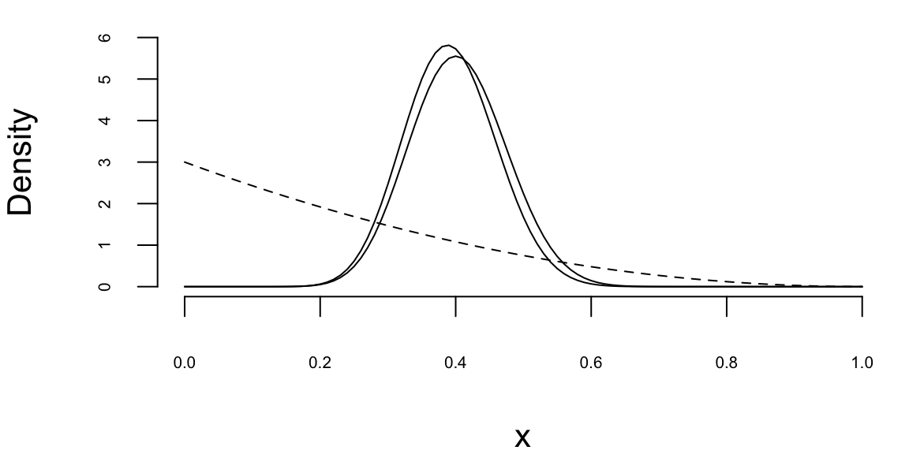
The triplot shows the prior, normalized likelihood, and posterior distributions. The normalized likelihood is a Beta(19,47-19) density function. The posterior distribution is focused on slightly smaller values and is slightly narrower than the normalized likelihood. This is because the prior mean is smaller than the sample mean, and the posterior distribution has slightly more information than the prior distribution.
Exercise 27.76 (Poisson for Car Counts) Times were recorded at which vehicles passed a fixed point on the M1 motorway in Bedfordshire, England on March 23, 1985.2 The total time was broken into 21 intervals of length 15 seconds. The number of cars passing in each interval was counted. The result was:
cnt = c(2, 2, 1, 1, 0, 4, 3, 0, 2, 1, 1, 1, 4, 0, 2, 2, 3, 2, 4, 3, 2)This can be summarized in the following table, that shows 3 intervals with zero cars, 5 intervals with 1 car, 7 intervals with 2 cars, 3 intervals with 3 cars and 3 intervals with 4 cars.
table(cnt)## cnt
## 0 1 2 3 4
## 3 5 7 3 3Solution:
These are reasons to consider a Poisson distribution, but we still need to investigate how well a Poisson distribution fits the observations. We will do this by comparing the sample frequencies with Poisson probability mass function. To do this, we need to estimate the mean of the distribution. We calculate the sample mean by summing these observations (40 total cars passing) and dividing by the number of intervals (21), to obtain an estimated arrival rate of about 1.9 cars per 15 second time interval.
Next, we use the Poisson probability mass function \(f(x|\Lambda=1.9) = e^{-1.9} (1.9)^x / x!\) to estimate the probability of each number of cars in a single interval, and multiply by 21 to find the expected number of times each value occurs (Note: for the 5 or more entry, we use \(1-F(4|\Lambda=1.9)\), or 1 minus the Poisson cdf at 4. The probability of more than 5 cars in 15 seconds is very small.) The expected counts are:
d = data.frame(cars=0:5,sample=c(3,5,7,3,3,0),expected=c(21*dpois(0:4,1.9),ppois(4,1.9)))
print(d)## cars sample expected
## 1 0 3 3.14
## 2 1 5 5.97
## 3 2 7 5.67
## 4 3 3 3.59
## 5 4 3 1.71
## 6 5 0 0.96The values in this table seem to show fairly good agreement. We can do a visual inspection by drawing a bar chart, shown below. The bar chart shows good agreement between the empirical and the Poisson probabilities.
barplot(height = t(as.matrix(d[,2:3])),beside=TRUE,legend=TRUE)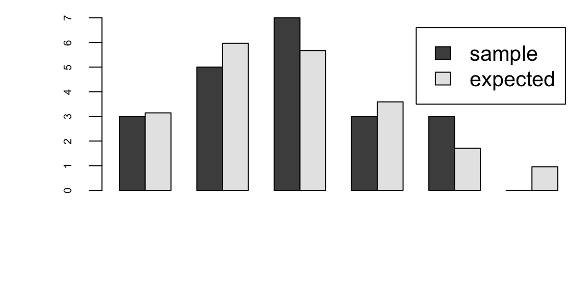
We can also perform a Pearson chi-square test (this is not required). The test statistic is calculated as: \[ \chi^2 =\sum_i (Y_i -E_i)^2/E_i \] where \(Y_i\) is the observed count for i cars passing, and \(E_i\) is the expected number of instances of i cars passing in a sample of size 21. The chi-square test should not be applied when counts are very small. A common (and conservative) rule of thumb is to avoid using the chi-square test if any cell has an expected count less than 5. Other less conservative rules have been proposed.4 We will combine the last two categories to increase the expected count to 2.37. To find the expected counts in this last category, we assign it probability 1 minus the cdf at x=3, and multiply by 21. The observed and expected counts are:
sum(((d$sample-d$expected)^2/d$expected)[1:4]) + (3-2.65)^2/2.65## [1] 0.62Next, we find the degrees of freedom, n - p -1, where n is the number of categories and p is the number of parameters estimated. We have 5 categories, and we estimated the mean of the Poisson distribution, so the degrees of freedom are 5 - 1 - 1, or 3. Therefore, we compare our test statistic 0.616 against the critical value of the chi-square distribution with 3 degrees of freedom. The 95th percentile for the chi- square distribution with 3 degrees of freedom is 7.8.
qchisq(0.95,3)## [1] 7.8Some students have tried a Q-Q plot of the Poisson quantiles against the data quantiles. Because there are only 4 distinct values in the sample, the plot shows most of the dots on top of each other. Comparing empirical and theoretical frequencies to is much more informative for discrete distributions with very few values.
We can also compare the sample mean and sample variance of the observations, recalling that the mean and variance of the Poisson distribution are the same. The sample mean of the observations is 1.90 and the sample variance is 1.59. The standard deviation of the sample mean is approximately equal to the sample standard deviation divided by the square root of the sample size, or \(\sqrt{1.59/21} = 0.275\). Therefore, the CI is
1.90 + c(-1,1)*0.275*qt(0.975,20)## [1] 1.3 2.5The observations seem consistent with the hypothesis that the mean and standard deviation are equal.
You did not need to do everything described in this solution. If you gave a thoughtful argument for whether the Poisson distribution was a good model, and if you used the data in a reasonable way to evaluate the fit of the distribution, you would receive credit for this problem.
The posterior pmf is shown in the plot below.
lambda = seq(0,4,0.2)
likelihood=function(lambda) prod(dpois(cnt,lambda))
l = sapply(lambda,likelihood)
posterior = l/sum(l)
barplot(posterior,names.arg=lambda,xlab="lambda",ylab="posterior probability")m = sum(posterior*lambda)
print(m)## [1] 2sqrt(sum(posterior*(lambda-m)^2))## [1] 0.3Exercise 27.77 (Car Count Part 2) This problem continues analysis of the automobile traffic data. As before, assume that counts of cars per 15-second interval are independent and identically distributed Poisson random variables with unknown mean \(\Lambda\).
Solution:
sum(cnt)## [1] 40The posterior distribution is a gamma distribution with shape 1 + 40 = 41
1+sum(cnt)## [1] 41and scale
n = length(cnt)
1/(1e-6 + n)## [1] 0.048The posterior distribution is \[ \Lambda|X \sim \text{Gamma}(41,0.04761905) \]
curve(dgamma(x,shape=41,scale=0.04761905),from=0,to=5)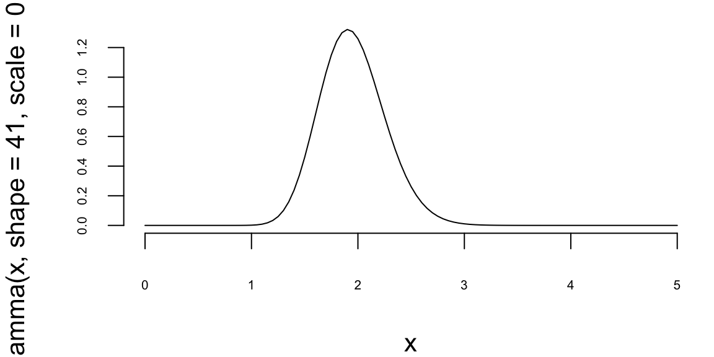
| mean | sd | mode | median | 95% CI | |
|---|---|---|---|---|---|
| Discretized | 1.95 | 0.305 | 2 | 2 | [1.4, 2.6] |
| Continuous | 1.95 | 0.305 | 1.9 | 1.94 | [1.40, 2.59] |
These values are almost identical. The slight differences in the median and mode are clearly artifacts of discretization. The discretized analysis gives a good approximation to the continuous analysis.
qgamma(c(0.025,0.975),shape=41,scale=0.04761905)## [1] 1.4 2.6and for \(\Theta\) is
1/qgamma(c(0.975,0.025),shape=41,scale=0.04761905)## [1] 0.39 0.71The mean is \(nab = 4\cdot 41\cdot 0.84 = 7.81\) and standard deviation of the predictive distribution is \[
\sqrt{na \dfrac{1-p}{p^2}} = \sqrt{4\cdot 41 \cdot \dfrac{1-0.84}{0.84^2}} = 2.83
\] The probabilities, as computed by the R dnbinom function, are shown in the table. Results from the Poisson probability mass function with mean \(4ab = 7.81\) are shown for comparison.
k = 0:20
p = dnbinom(k,size=41,prob=1/(1+4/21))
p = p/sum(p)
p = round(p,3)
p = c(p,1-sum(p))
poisson = round(dpois(k,7.81),3)
poisson = c(poisson,1-sum(poisson))
d = cbind(k,p,poisson)
print(d)## k p poisson
## [1,] 0 0.001 0.000
## [2,] 1 0.005 0.003
## [3,] 2 0.017 0.012
## [4,] 3 0.040 0.032
## [5,] 4 0.070 0.063
## [6,] 5 0.101 0.098
## [7,] 6 0.124 0.128
## [8,] 7 0.133 0.143
## [9,] 8 0.127 0.139
## [10,] 9 0.111 0.121
## [11,] 10 0.089 0.094
## [12,] 11 0.066 0.067
## [13,] 12 0.046 0.044
## [14,] 13 0.030 0.026
## [15,] 14 0.018 0.015
## [16,] 15 0.011 0.008
## [17,] 16 0.006 0.004
## [18,] 17 0.003 0.002
## [19,] 18 0.002 0.001
## [20,] 19 0.001 0.000
## [21,] 20 0.000 0.000
## [22,] 0 -0.001 0.000barplot(t(d[,2:3]),beside=TRUE,names.arg=d[,1],xlab="k",ylab="probability")
legend("topright",c("negative binomial","poisson"),fill=c("black","white"))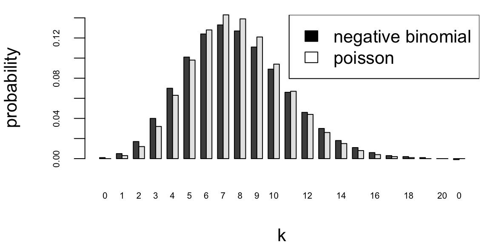
The difference between the Bayesian predictive distribution and the Poisson distribution using a point estimate of the rate is even more pronounced if we predict for the next 21 time periods (5 1/4 minutes). This was not required, but is interesting to examine. Again, the distribution is negative binomial with: size \(a = 41\), and probability \(p = 1/(1 + 21b) = 0.5\)
k = 0:65
p = dnbinom(k,size=41,prob=0.5)
p = p/sum(p)
p = c(p,1-sum(p))
poisson = dpois(k,21*41/21)
poisson = c(poisson,1-sum(poisson))
d = cbind(k,p,poisson)
barplot(t(d[,2:3]),beside=TRUE,names.arg=d[,1],xlab="k",ylab="probability")
legend("topright",c("negative binomial","poisson"),fill=c("black","white"))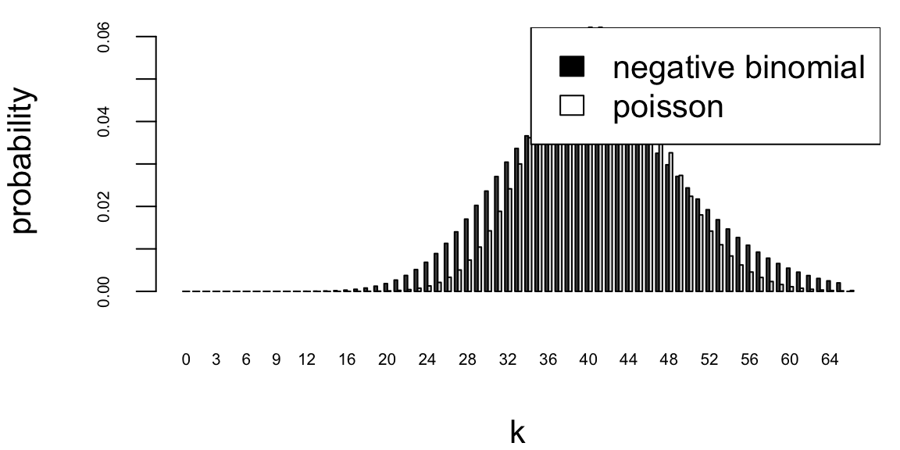
To summarize, the predictive distribution is negative binomial with size \(a = 41\), and probability \(p = 1/(1 + nb)\) where \(n\) is the number of periods into the future we are predicting. The uncertainty in \(\Lambda\) makes the predictive distribution more spread out than the Poisson distribution with the same mean. When n=1, the Poisson and negative binomial probabilities are very similar. The differences become more pronounced as we try to predict further into the future.
Exercise 27.78 (Lung disease) Chronic obstructive pulmonary disease (COPD) is a common lung disease characterized by difficulty in breathing. A substantial proportion of COPD patients admitted to emergency medical facilities are released as outpatients. A randomized, double-blind, placebo-controlled study examined the incidence of relapse in COPD patients released as outpatients as a function of whether the patients received treatment with corticosteroids. A total of 147 patients were enrolled in the study and were randomly assigned to treatment or placebo group on discharge from an emergency facility. Seven patients were lost from the study prior to follow-up. For the remaining 140 patients, the table below summarizes the primary outcome of the study, relapse within 30 days of discharge.
| Relapse | No Relapse | Total | |
|---|---|---|---|
| Treatment | 19 | 51 | 70 |
| Placebo | 30 | 40 | 70 |
| Total | 49 | 91 | 140 |
Solution:
# Study results
k.trt=19 # Number of relapses in treatment group
n.trt=70 # Number of patients in treatment group
k.ctl=30 # Number of relapses in control group
n.ctl=70 # Number of patients in control group
#Prior hyperparameters
alpha.0 =0.5
beta.0=0.5
# The joint posterior distribution is the product of two independent beta
# distributions with posterior hyperparameters as shown below
alpha.trt=alpha.0 + k.trt
beta.trt=beta.0 + n.trt-k.trt
alpha.ctl=alpha.0 + k.ctl
beta.ctl=beta.0 + n.ctl-k.ctl
# Posterior credible intervals
trt.intrv=qbeta(c(0.025,0.975),alpha.trt,beta.trt)
ctl.intrv=qbeta(c(0.025,0.975),alpha.ctl,beta.ctl)
d = data.frame(treatment=c(alpha.trt,beta.trt,trt.intrv), control=c(alpha.ctl,beta.ctl,ctl.intrv), row.names=c("alpha","beta","2.5%","97.5%"))
knitr::kable(t(d))| alpha | beta | 2.5% | 97.5% | |
|---|---|---|---|---|
| treatment | 20 | 52 | 0.18 | 0.38 |
| control | 30 | 40 | 0.32 | 0.55 |
It is important to remember that the joint density or mass function is a function of all the random variables. Because \(\theta_1\) and \(\theta_2\) are independent and the \(Y_i\) are independent conditional on the \(\theta_i\), the two posterior distributions are independent. We can see this by writing out the joint distribution of the parameters and observations: \[ Bin(x_1|\theta_1,70)Bin(x_2|\theta_2,70)Be(\theta_1|1,1)Be(\theta_2|1,1) = {70 \choose 19}\theta_1^{19}(1-\theta_1)^{51}{70 \choose 30}\theta_2^{30}(1-\theta_2)^{40} \] This is proportional to the product of two Beta density functions, the first with parameters (19.5,51.5), and the second with parameters (30.5,40.5).
Conditional on the observations, \(\theta_1\) and \(\theta_2\) are independent Beta random variables. The marginal distribution of \(\theta_1\) is Beta(19.5, 51.5) and the marginal distribution of \(\theta_1\) is Beta(30.5, 40.5).
The joint density function is the product of the individual density functions (remember that if \(n\) is an integer, \(n! = \Gamma(n+1))\) and \(B(\alpha, \beta) = \Gamma(\alpha)\Gamma(\beta)/\Gamma(\alpha+\beta)\) \[ Be(\theta_1|20,52)Be(\theta_2\mid 31,41) = \dfrac{\Gamma(20+52)}{\Gamma(20)\Gamma(52)}\theta_1^{19}(1-\theta_1)^{51}\dfrac{\Gamma(31+41)}{\Gamma(31)\Gamma(41)}\theta_2^{30}(1-\theta_2)^{40} \] A plot of the two posterior density functions is shown below. The 95% credible intervals are shown on the plot as vertical lines
curve(dbeta(x,19.5,51.5),0,0.6,ylab="Density",lty=2,ylim=c(0,8))
curve(dbeta(x,30.5,40.5),0,0.6,add=TRUE)
abline(v=trt.intrv,lty=2, lwd=0.5)
abline(v=ctl.intrv,lty=2, lwd=0.5)To visualize the joint density function of \(\theta_1\) and \(\theta_2\), we can do a surface or contour plot (you were not required to do this). The joint density function is a function of two variables, \(\theta_1\) and \(\theta_2\). To visualize the joint density function, we need either a surface plot or a contour plot (you were not required to do this). A surface plot is shown below.
gs<-200 # grid size
theta.t<-seq(0.25,0.6,length=gs) # treatment mean
theta.c<-seq(0.1,0.45 ,length=gs) # control mean
dens<-matrix(0,gs,gs) # density function
for(i in 1:gs) {
dens[i,]=dbeta(theta.t[i],alpha.trt,beta.trt) * dbeta(theta.c,alpha.ctl,beta.ctl)
}
# Perspective plot
persp(theta.t,theta.c,dens,theta=30,phi=5,xlab="Treatment Relapse Prob",
ylab="Control Relapse Prob",zlab="Probability Density",
xlim=theta.t[c(1,gs)] ,ylim=theta.c[c(1,gs)],
main="3D Plot of Joint Density for Treatment and Control Relapse Probs")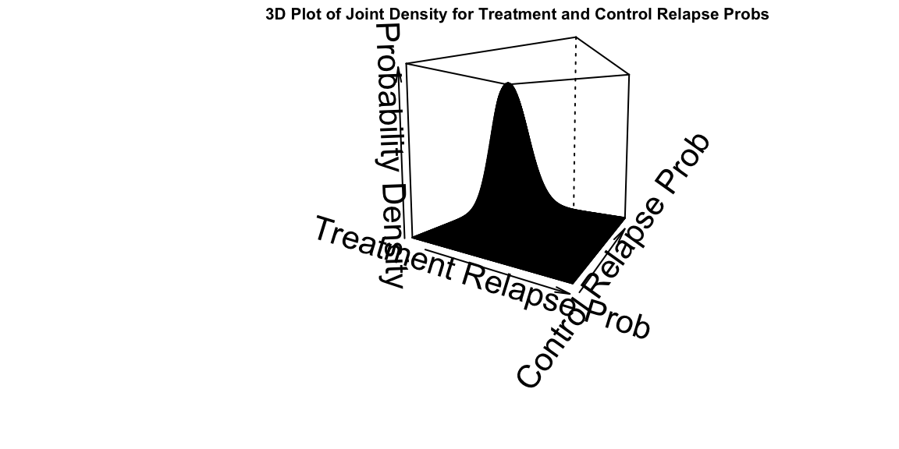
The posterior mean relapse probability for the treatment group is 19.5/71x100% = 27.5%. A 95% symmetric tail area credible interval is [17.8%, 38.3%]. The posterior mean relapse probability for the control group is 30.5/71x100% = 43.0%. A 95% symmetric tail area credible interval is [31.7%, 54.5%].
About 1/4 of the treatment patients relapsed, whereas almost half the control patients relapsed. Most of the posterior density function for the treatment group lies below most of the posterior density function for the control group, but the 95% credible intervals for the two parameters overlap somewhat (you were not required to compute credible intervals). While this analysis suggests that treatment lowers the relapse probability, it does not provide a statistical basis for concluding that it does.
set.seed(92) # Kuzy
nsample=5000
contr = rbeta(nsample,19.5,51.5)
treat = rbeta(nsample,30.5,40.5)
diff=treat-contr # Estimate of difference in relapse probs
efficacious = diff>0 # If treat > control
prob.efficacious=sum(efficacious)/nsample
sd.probefficacious = sd(efficacious)/sqrt(nsample)
#Posterior quantiles, mean and standard deviation of the difference in
#relapse rates between treatment and control
quantile(diff,c(0.05,0.5,0.95))## 5% 50% 95%
## 0.021 0.156 0.287mean(diff)## [1] 0.15sd(diff)## [1] 0.08#Density Function for Difference in Treatment and Control Relapse Probabilities
plot(density(diff),main="Kernel Density Estimator",xlab="Difference in Treatment and Control Probabilities",ylab="Posterior Probability Density")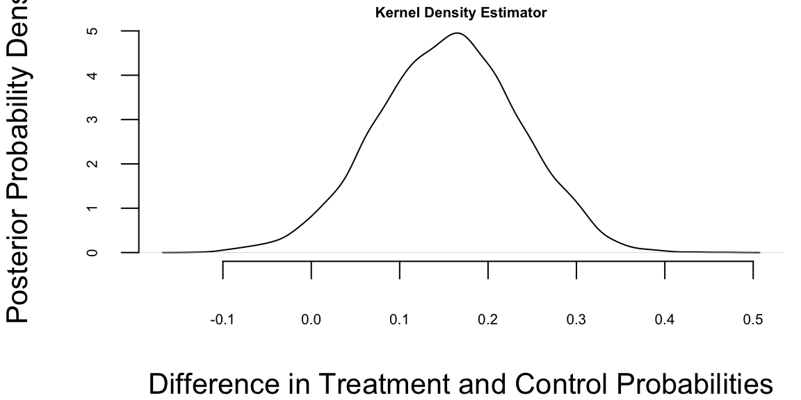
The analysis above provides evidence that there is a lower relapse probability in the treatment than in the control group. We estimate a 97.2% probability that the treatment has a lower relapse probability. The mean of the posterior distribution of the difference in relapse probabilities is approximately 0.155, and an approximate 90% credible interval for the difference in relapse rates is [0.021, 0.287].
Exercise 27.79 (Normal-Normal) Concentrations of the pollutants aldrin and hexachlorobenzene (HCB) in nanograms per liter were measured in ten surface water samples, ten mid-depth water samples, and ten bottom samples from the Wolf River in Tennessee. The samples were taken downstream from an abandoned dump site previously used by the pesticide industry. The full data set can be found at http://www.biostat.umn.edu/~lynn/iid/wolf.river.dat. For this problem, we consider only HCB measurements taken at the bottom and the surface. The question of interest is whether the distribution of HCB concentration depends on the depth at which the measurement was taken. The data for this problem are given below.
| Surface | Bottom |
|---|---|
| 3.74 | 5.44 |
| 4.61 | 6.88 |
| 4.00 | 5.37 |
| 4.67 | 5.44 |
| 4.87 | 5.03 |
| 5.12 | 6.48 |
| 4.52 | 3.89 |
| 5.29 | 5.85 |
| 5.74 | 6.85 |
| 5.48 | 7.16 |
Assume the observations are independent normal random variables with unknown depth-specific means \(\theta_s\) and \(\theta_b\) and precisions \(\rho_s = 1/\sigma^2_s\) and \(\rho_b = 1/\sigma_s^2\). Assume independent improper reference priors for the surface and bottom parameters: \[ g(\theta_s,\theta_b ,\rho_s,\rho_b ) = g(\theta_s,\rho_s)g(\theta_b ,\rho_b) \propto \rho_s^{-1}\rho_b^{-1}. \]
Solution:
The first two factors are proportional to the posterior density of the surface parameters; the second two factors are proportional to the posterior density of the bottom parameters. Therefore, the surface and bottom parameters are independent given the data with joint posterior density: \[ g(\theta_s,\theta_b ,\rho_s,\rho_b \mid x_s,x_b) \propto g(\theta_s,\rho_s \mid x_s)g(\theta_b ,\rho_b \mid x_b) \] We will calculate the posterior distributions for the surface and bottom parameters in turn.
The prior density for the surface parameters is \(g(\theta_s,\rho_s) \propto \rho_s^{-1}\)
This is the limit of the density function for a normal-gamma conjugate prior distribution. We use the Normal-Normal-Gamma update rules. The prior is given by \[ g(\theta,\rho \mid \nu,\mu,a,b) = \sqrt{\frac{\nu\rho}{2\pi}} \exp\left(-\frac{\nu\rho}{2}(\theta-\mu)^2\right) \frac{b^a}{\Gamma(a)}\rho^{a-1}e^{-b\rho} \]
For prior parameters \(\mu_0 =0 ,\, \nu=0,\, \alpha=-0.5 ,\, \beta=0\), the posterior values are \[ \frac{\nu\mu_0+n\bar{x}}{\nu+n} ,\, \nu+n,\, \alpha+\frac{n}{2}, \beta + \tfrac{1}{2} \sum_{i=1}^n (x_i - \bar{x})^2 + \frac{n\nu}{\nu+n}\frac{(\bar{x}-\mu_0)^2}{2} \] Pluggin-in our values \(n=10\) and \(\bar{x}=4.8\), we get the posterior values for the Surface \[ \mu^* = \frac{0+10*4.8}{0+10} = 4.8 ,\, \nu^* = 0+10=10,\, \alpha^* = -0.5+\frac{10}{2} = 4.5, \, \beta^* = 0 + \tfrac{1}{2} \sum_{i=1}^{10} (x_i - 4.8)^2 = 1.794 \]
s = c(3.74,4.61,4.00,4.67,4.87,5.12,4.52,5.29,5.74,5.48)
b = c(5.44,6.88,5.37,5.44,5.03,6.48,3.89,5.85,6.85,7.16)
print(mean(s))## [1] 4.8print(mean(b))## [1] 5.8print(0.5*sum((s - mean(s))^2))## [1] 1.8print(0.5*sum((b - mean(b))^2))## [1] 4.6Similar calculations for the bottom parameters give us the posterior values \[ \mu^*=\frac{0+10*5.84}{0+10} = 5.84,~ \nu^* = 0+10=10,\, \alpha^* = -0.5+\frac{10}{2} = 4.5, \, \beta^* = 0 + \tfrac{1}{2} \sum_{i=1}^{10} (x_i - 5.84)^2 = 4.627 \]
To summarise, we have:
| \(\mu^*\) | \(\nu^*\) | \(\alpha^*\) | \(\beta^*\) | |
|---|---|---|---|---|
| surface | 4.8 | 10 | 4.5 | 1.794 |
| bottom | 5.84 | 10 | 4.5 | 4.627 |
The marginal distribution for \(\theta_s\) is nonstandard \(t\) with center 4.80, spread \(1/\sqrt{\nu^*\alpha^*/\beta^*} = 0.20\), and degrees of freedom 9. The marginal distribution for \(\theta_s\) is nonstandard \(t\) with center 5.84, spread \(1/\sqrt{\nu^*\alpha^*/\beta^*} = 0.32\), and degrees of freedom 9. Using the quantiles of the t distribution
qgamma(c(0.05,0.95),4.5,1.794) # marginal posterior for \rho_s## [1] 0.93 4.72qgamma(c(0.05,0.95),4.5,4.627) # marginal posterior for \rho_b## [1] 0.36 1.834.8 + c(-1,1)*1.833*(1/sqrt(10*4.5/1.794)) # marginal posterior for \theta_s## [1] 4.4 5.25.84 + c(-1,1)*1.833*(1/sqrt(10*4.5/4.627)) # marginal posterior for \theta_b## [1] 5.3 6.4set.seed(92) # Kuzy
# Direct Monte Carlo
numsim=5000
rhos=rgamma(numsim,4.5,1.794)
rhob=rgamma(numsim,4.5,4.627)
thetas=rnorm(numsim,4.8,1/sqrt(10*rhos))
thetab=rnorm(numsim,5.84,1/sqrt(10*rhob))
# Monte Carlo quantiles
quantile(rhos,c(0.05,0.95))## 5% 95%
## 0.92 4.70quantile(rhob,c(0.05,0.95))## 5% 95%
## 0.36 1.84quantile(thetas,c(0.05,0.95))## 5% 95%
## 4.4 5.2quantile(thetab,c(0.05,0.95))## 5% 95%
## 5.3 6.4# Estimate probability that bottom concentration is larger
sum(thetab>thetas)/numsim # Estimated prob bottom mean is larger## [1] 0.99sd(thetab>thetas)/sqrt(numsim) # Standard error of estimate## [1] 0.0014quantile(thetab-thetas, c(0.05,0.95)) # 90% credible interval## 5% 95%
## 0.36 1.73# Estimate probability that bottom precision is smaller
sum(rhob>rhos)/numsim # Estimated prob bottom precision is larger## [1] 0.088sd(rhob>rhos)/sqrt(numsim) # Standard error of estimate## [1] 0.004quantile(rhob-rhos, c(0.05,0.95)) # 90% credible interval## 5% 95%
## -3.84 0.28# Estimate probability that bottom standard deviation is larger
sigmab=1/sqrt(rhob) # bottom standard deviation
sigmas=1/sqrt(rhos) # surfact standard deviation
sum(sigmab>sigmas)/numsim # Estimated prob bottom std dev is larger## [1] 0.91sd(sigmab>sigmas)/sqrt(numsim) # Standard error of estimate## [1] 0.004quantile(sigmab-sigmas, c(0.05,0.95)) # 90% credible interval## 5% 95%
## -0.1 1.0qqnorm(s,main="Normal Q-Q Plot for Surface Data"); qqline(s)
qqnorm(b,main="Normal Q-Q Plot for Bottom Data"); qqline(b)
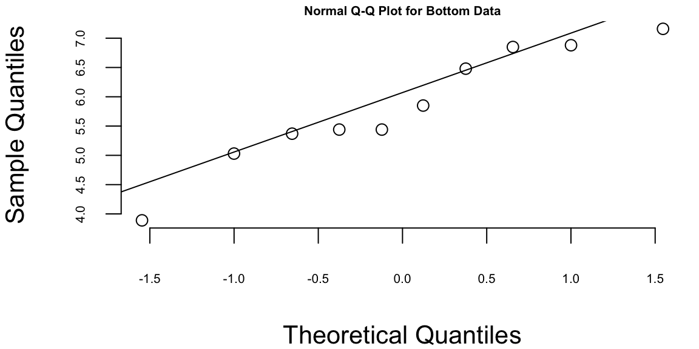
ss10 = 1/sqrt(100/20*4.5/1.794)
sprintf("Spread for surface data with m=10: %.2f",ss10)## [1] "Spread for surface data with m=10: 0.28"for \(m=40\), we have spread
ss40 = 1/sqrt(400/50*4.5/1.794)
sprintf("Spread for surface data with m=40: %.2f",ss40)## [1] "Spread for surface data with m=40: 0.22"For the bottom data, we have spread
sb10 = 1/sqrt(100/20*4.5/4.627)
sprintf("Spread for bottom data with m=10: %.2f",sb10)## [1] "Spread for bottom data with m=10: 0.45"sb40 = 1/sqrt(400/50*4.5/4.627)
sprintf("Spread for bottom data with m=40: %.2f",sb40)## [1] "Spread for bottom data with m=40: 0.36"Now we can calculate 95% credible intervals for the sample mean of each future sample
4.8+ss10*qt(c(0.025,0.975),9)## [1] 4.2 5.44.8+ss40*qt(c(0.025,0.975),9)## [1] 4.3 5.35.839+sb40*qt(c(0.025,0.975),9)## [1] 5.0 6.75.839+sb10*qt(c(0.025,0.975),9)## [1] 4.8 6.9As we would expect, the intervals for m=40 are entirely contained within the intervals for m=10, and the intervals for the posterior mean (computed above) lie entirely within the intervals for the corresponding sample means. This is because the posterior mean intervals include uncertainty only about the surface and bottom mean, whereas the intervals in this assignment include uncertainty about both the true means and the observations. The sample mean for 40 observations has less uncertainty than the sample mean for 10 observations. The intervals for surface and bottom sample means overlap more for m=10 than for m=40, and both have more overlap than the posterior mean intervals.
set.seed(92) # Kuzy
numsim=10000
ssize=10
rhob=rgamma(numsim,4.5,4.627) # sample b precision
thetab=rnorm(numsim,5.84,1/sqrt(10*rhob)) # sample b precision
rhos=rgamma(numsim,4.5,1.794) # sample s mean
thetas=rnorm(numsim,4.8,1/sqrt(10*rhos)) # sample surface mean
diff = 0 # Difference in sample means - initialize to 0
dd=0
for (i in 1:ssize) {
diff = diff +
rnorm(numsim,thetab,1/sqrt(rhob)) - # sample bottom observation
rnorm(numsim,thetas,1/sqrt(rhos)) # sample surface observation and subtrace
}
diff = diff / ssize # Calculate average - divide sum by number of observations
quantile(diff, c(0.025,0.975)) # quantiles## 2.5% 97.5%
## -0.16 2.23plot(density(diff), # kernel density plot
main=paste("Density for Difference in Sample Means for m =",ssize))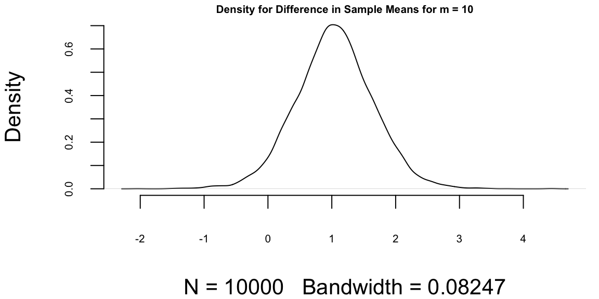
We can also sample from the t distribution (need two independent samples one for surface and one for bottom)
diff1 = 5.84 + rt(numsim,2*4.5)*ss10 -
4.8 + rt(numsim,2*4.5)*sb10
quantile(diff1,c(0.025,0.975)) # Compare with quantiles from full sampling method## 2.5% 97.5%
## -0.17 2.23# Known standard deviation model
mu0=0 # prior mean for theta is 0
tau0=Inf # prior SD of theta is infinite
sigmas = sd(s) # observation SD is assumed known and equal to sample SD
sigmab = sd(b) # observation SD is assumed known and equal to sample SD
n=10
mus.star = # Posterior mean for surface
(mu0/tau0^2 + sum(s)/sigmas^2)/(1/tau0^2+n/sigmas^2)
taus.star = # Posterior SD of surface mean
(1/tau0^2+n/sigmas^2)^(-1/2)
mub.star = # Posterior mean for bottom
(mu0/tau0^2 + sum(b)/sigmab^2)/(1/tau0^2+n/sigmab^2)
taub.star = # Posterior SD of surface mean
(1/tau0^2+n/sigmab^2)^(-1/2)
sprintf("Posterior mean for surface: %.2f",mus.star)## [1] "Posterior mean for surface: 4.80"sprintf("Posterior mean for bottom: %.2f",mub.star)## [1] "Posterior mean for bottom: 5.84"# Predictive intervals
qnorm(c(0.025,0.975), # Surface, sample size 10
mus.star,sqrt(taus.star^2 + sigmas^2/10))## [1] 4.3 5.4qnorm(c(0.025,0.975), # Surface, sample size 40
mus.star,sqrt(taus.star^2 + sigmas^2/40))## [1] 4.4 5.2qnorm(c(0.025,0.975), # Surface, sample size 10
mub.star,sqrt(taub.star^2 + sigmab^2/10))## [1] 5.0 6.7qnorm(c(0.025,0.975), # Surface, sample size 40
mub.star,sqrt(taub.star^2 + sigmab^2/40))## [1] 5.1 6.5# Kernel density plot
plot(density(diff),main=paste("Density for Difference in Sample Means"))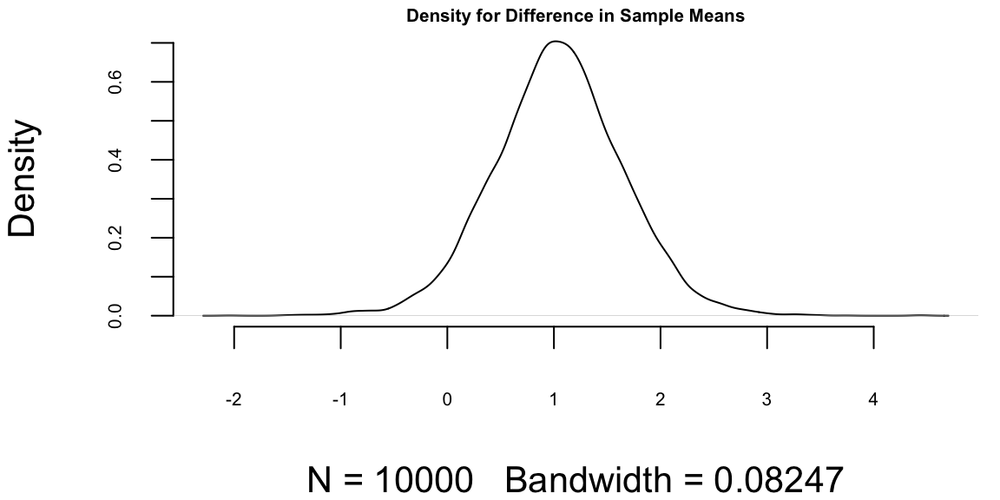
Exercise 27.80 (Gibbs: Bird feeders) A biologist counts the number of sparrows visiting six bird feeders placed on a given day.
| Feeder | Number of Birds |
|---|---|
| 1 | 11 |
| 2 | 22 |
| 3 | 13 |
| 4 | 24 |
| 5 | 19 |
| 6 | 16 |
Solution:
A plate diagram for this problem is shown at the right. Gibbs sampling on this model can be done as follows:
 $
$
.{ }{1)}+1){-1}$ for the \(i^{\text {th }}\) feeder.
R code for doing the sampling is available on Blackboard. The table below shows credible intervals calculated from the raw Gibbs samples and credible intervals from a thinned sample with interval 3 (that is, only every third sample is kept). The intervals are almost the same. Due to sampling variation, the intervals will be different each time the sampler is run but your results should be similar.
| Parameter | Gibbs Interval (raw) |
Gibbs Interval (thinned x3) |
|---|---|---|
| \(m\) | \([12.74,27.34]\) | \([12.73,26.98]\) |
| \(\alpha\) | \([2.23,24.64]\) | \([2.23,24.32]\) |
| \(\lambda_{1}\) | \([7.61,19.92]\) | \([7.71,19.5]\) |
| \(\lambda_{2}\) | \([13.71,29.45]\) | \([13.92,29.45]\) |
| \(\lambda_{3}\) | \([8.81,21.55]\) | \([8.76,21.40]\) |
| \(\lambda_{4}\) | \([14.89,31.18]\) | \([14.96,31.13]\) |
| \(\lambda_{5}\) | \([12.12,26.78]\) | \([12.23,26.60]\) |
| \(\lambda_{6}\) | \([10.46,24.21]\) | \([10.48,24.08]\) |
In general, thinning increases the variance of the estimator (because we are throwing away information), but has other advantages: (1) it reduces data storage; (2) it reduces computation for any post-processing of the Monte Carlo samples; (3) it allows use of data processing methods intended for independent and identically distributed data, without having to adjust for the correlation.
It is also common to discard a burn-in sample when doing MCMC. I did not require either thinning or discarding a burnin sample.
Exercise 27.81 (Poisson Distribution for EPL) We will analyze EPL data. Use epl.R as a starting script. This script uses football-data.org API to download the results for two EPL teams: Manchester United and Chelsea. Model the GoalsHome and GoalsAway for each of the teams using Poisson distribution. Given these distributions calculate the following
R and random number simulation to provide empirical answers. Using a random sample of size N = 10, 000, check and see how close you get to the theoretical answers you’ve found to the questions posed above. Provide histograms of the distributions you simulate.Hint: The difference of two Poisson random variables follows a Skellam distribution, defined in skellam package. You can use dskellam to calculate the probability of a draw. You can use rpois to simulate draws from Poisson distribution.
Exercise 27.82 (Homicide Rate (Poisson Distribution)) Suppose that there are \(1.5\) homicides a week. The is the rate, so \(\lambda=1.5\). The tells us that there is a still a \(1.4\)% chance of seeing \(5\) homicides in a week \[ p( X= 5 ) = \frac{e^{ - 1.5 } ( 1.5 )^5 }{5!} = 0.014 \] On average this will happen once every \(71\) weeks, nearly once a year.
What’s the chance of having zero homicides in a week?
Solution:
From the probability distribution we calculate \[
p( X= 0 ) = \frac{e^{ - 1.5 } ( 1.5 )^0 }{0!} = 0.22
\] In R
dpois(0, 1.5)## [1] 0.22So the probability is 22% You shouldn’t be surprised to see this happening.
Exercise 27.83 (True/False (Binomial Distribution))
Solution:
Exercise 27.84 (True/False (Poisson Distribution))
Solution:
ppois(1,2.5) = 0.287291-ppois(0,2.2)=0.89.dpois(0,2) = 0.135 \(= e^{-2}\) so that \(P(hit>1)= 1 - P(hit=0)=0.865\)R: ppois(2,2)=0.67667Exercise 27.85 (True/False (Normal Distribution))
Solution:
pnorm(0.667) # 0.7476139## [1] 0.75Exercise 27.86 (Tarone Study) Tarone (1982) reports data from 71 studies on tumor incidence in rats
Solution:
We assume that tumors occur independently, with a probability of \(\Theta\) of a tumor in each rat in the study. Our data \(X\) consist of observations on \(N\) rats, in which we record which rats have tumors. We can use either of two methods to represent the likelihood of what we have observed:
Method 1: We list, for each observation, whether or not the rat has a tumor. We multiply together the probability of getting the observation we obtained: \(\Theta\) if the rat has a tumor, and 1-\(\Theta\) if the rat does not have a tumor. If x out of n rats have tumors, the probability of observing this sequence of observations is \(\Theta^k(1-\Theta)^{n-k}\). Using Method 1, the posterior distribution for \(\Theta\) is given by: \[ g (\theta | x ) = \dfrac{f ( x | \theta ) g (\theta )}{\sum_{i=1}^{20} f ( x | \theta_i ) g (\theta_i )} = \dfrac{\theta^x (1 - \theta )^{n- x}}{\sum_{i=1}^{20} \theta_i^x (1 - \theta_i )^{n - x}} \]
Method 2: We count how many of the rats have tumors. We remember from our previous statistics class that if the tumors occur independently with probability \(\Theta\), the number of rats with tumors out of a total of \(n\) rats will have a Binomial distribution with parameters \(n\) and \(\Theta\). The probability of getting \(k\) tumors is \[ C_n^k \theta^k (1 - \theta )^{n - k},\quad k = 0, 1, 2, ..., n,\quad \mathrm{where}\quad C_n^k = \dfrac{n!}{k!(n-k)!} \] Then, the posterior distribution for \(\Theta\) is given by: \[ g (\theta | x ) = \dfrac{f ( x | \theta ) g (\theta )}{\sum_{i=1}^{20} f ( x | \theta_i ) g (\theta_i )} = \dfrac{C_n^k \theta^x (1 - \theta )^{n - x}}{\sum_{i=1}^{20} C_n^k \theta_i^x (1 - \theta_i )^{n - x}} \]
In Method 1, we are representing the likelihood of getting this exact sequence of observations. In Method 2, we are representing the likelihood of getting this number of tumors.
It is clear that the two methods give the same posterior distribution, because the constant \(C_n^k\) cancels out of the numerator and denominator of Bayes rule. That is, the number of tumors is a sufficient statistic for \(\Theta\), and the order in which the tumors occur is irrelevant.
Part a. The posterior distribution for \(\Theta_1\), the tumor probability in the first study, is: \[ g (\theta | x =2) = \dfrac{\theta^2 (1 - \theta )^{11}}{\sum_{i=1}^{20} \theta_i^2 (1 - \theta_i )^{11}} \]
theta <- seq(0.025, 0.975, 0.05)
prior <- rep(1/20, 20)
tarone = function(n,k) {
likelihood <- theta^k * (1 - theta)^(n-k)
posterior <- likelihood * prior / sum(likelihood * prior)
print(knitr::kable(data.frame(theta, likelihood, posterior)))
barplot(posterior, names.arg = theta, xlab = expression(theta), ylab = "Pr(theta | X)")
return(posterior)
}
posta = tarone(13,2)##
##
## | theta| likelihood| posterior|
## |-----:|----------:|---------:|
## | 0.03| 0| 0.03|
## | 0.08| 0| 0.13|
## | 0.12| 0| 0.20|
## | 0.18| 0| 0.20|
## | 0.22| 0| 0.17|
## | 0.28| 0| 0.12|
## | 0.33| 0| 0.08|
## | 0.38| 0| 0.04|
## | 0.43| 0| 0.02|
## | 0.48| 0| 0.01|
## | 0.52| 0| 0.00|
## | 0.58| 0| 0.00|
## | 0.63| 0| 0.00|
## | 0.68| 0| 0.00|
## | 0.73| 0| 0.00|
## | 0.78| 0| 0.00|
## | 0.83| 0| 0.00|
## | 0.88| 0| 0.00|
## | 0.92| 0| 0.00|
## | 0.98| 0| 0.00|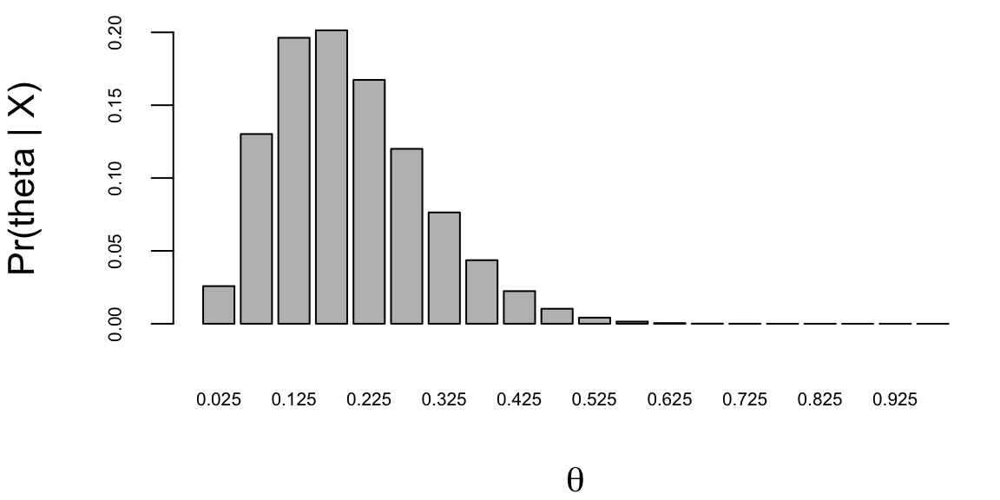
Part b. The posterior distribution for \(\Theta_2\), the tumor probability in the second study, is: \[ g (\theta | x =2) = \dfrac{\theta (1 - \theta )^{17}}{\sum_{i=1}^{20} \theta_i(1 - \theta_i )^{17}} \]
postb = tarone(18,1)##
##
## | theta| likelihood| posterior|
## |-----:|----------:|---------:|
## | 0.03| 0.02| 0.27|
## | 0.08| 0.02| 0.33|
## | 0.12| 0.01| 0.21|
## | 0.18| 0.01| 0.11|
## | 0.22| 0.00| 0.05|
## | 0.28| 0.00| 0.02|
## | 0.33| 0.00| 0.01|
## | 0.38| 0.00| 0.00|
## | 0.43| 0.00| 0.00|
## | 0.48| 0.00| 0.00|
## | 0.52| 0.00| 0.00|
## | 0.58| 0.00| 0.00|
## | 0.63| 0.00| 0.00|
## | 0.68| 0.00| 0.00|
## | 0.73| 0.00| 0.00|
## | 0.78| 0.00| 0.00|
## | 0.83| 0.00| 0.00|
## | 0.88| 0.00| 0.00|
## | 0.92| 0.00| 0.00|
## | 0.98| 0.00| 0.00|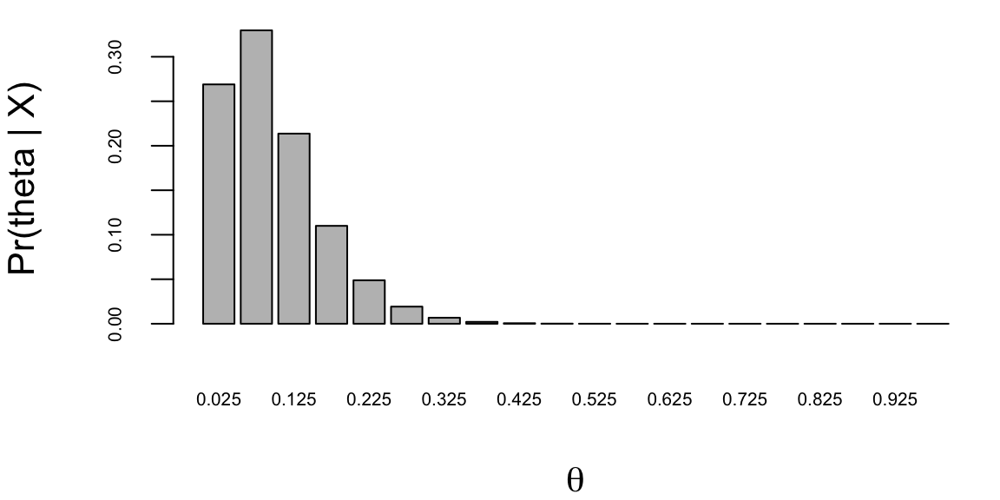
Part c. If the tumor probabilities are the same in the two studies, it is appropriate to treat them as a single study in which 3 rats out of 31 have a tumor. The posterior distribution for \(\Theta\), the common tumor probability, is: \[ g (\theta | x =2) = \dfrac{\theta^3 (1 - \theta )^{28}}{\sum_{i=1}^{20} \theta_i^3(1 - \theta_i )^{28}} \]
postc = tarone(31,3)##
##
## | theta| likelihood| posterior|
## |-----:|----------:|---------:|
## | 0.03| 0| 0.06|
## | 0.08| 0| 0.34|
## | 0.12| 0| 0.34|
## | 0.18| 0| 0.18|
## | 0.22| 0| 0.07|
## | 0.28| 0| 0.02|
## | 0.33| 0| 0.00|
## | 0.38| 0| 0.00|
## | 0.43| 0| 0.00|
## | 0.48| 0| 0.00|
## | 0.52| 0| 0.00|
## | 0.58| 0| 0.00|
## | 0.63| 0| 0.00|
## | 0.68| 0| 0.00|
## | 0.73| 0| 0.00|
## | 0.78| 0| 0.00|
## | 0.83| 0| 0.00|
## | 0.88| 0| 0.00|
## | 0.92| 0| 0.00|
## | 0.98| 0| 0.00|It is useful to verify that we get the same posterior distribution by using Method 2 to calculate the likelihood of the data. It is also useful to verify that we would get the same results in Part c if we used the posterior distribution from Part a as the prior distribution for Part c, and the likelihood from Part b as the likelihood for part c. That is, we would get the same result from a two-step process, in which we started with a uniform prior distribution, incorporated the results from the first study to obtain a posterior distribution, and then incorporated the results from the second study to get a new posterior distribution.
Part d. We can compare the distributions more easily if we plot the prior distribution, the posterior distributions for the parameters of the two individual studies, and the combined posterior distribution together (see below). We see that the posterior distribution from the first study puts more probability on higher values of \(\Theta\) than the posterior distribution for the second study. This is not surprising, because a higher proportion of rats in the first study had tumors. There is a great deal of overlap in the two distributions, which suggests that the two probabilities may be the same. Thus, it is reasonable to consider combining the two samples. If there had been very little overlap in the posterior distributions from Parts a and b, it would not have been reasonable to combine the studies. Later in the semester, we will look more carefully at the problem of when to combine probabilities and when to estimate them separately. When the studies are combined, the posterior distribution is narrower than the posterior distribution for either of the two individual studies, with less probability on very low and very high values of \(\Theta\). Note that the combined distribution is consistent with both of the individual distributions, in the sense that it places high probability on values that also have high probability in the other two distributions. The combined distribution is more concentrated around values close to the combined sample proportion of about 1 in 10.
allDist=rbind(prior,posta,postb,postc)
barplot(allDist,main="Prior and Posterior Distributions for TumorProbability",xlab="Theta",ylab="Probability", col=c("mediumpurple","lightblue","pink","lightgreen"), border=c("darkviolet","darkblue", "red","darkgreen"),names.arg=theta, legend=c("Prior","Study 1", "Study 2", "Both Studies"), beside=TRUE, ylim=c(0,0.4))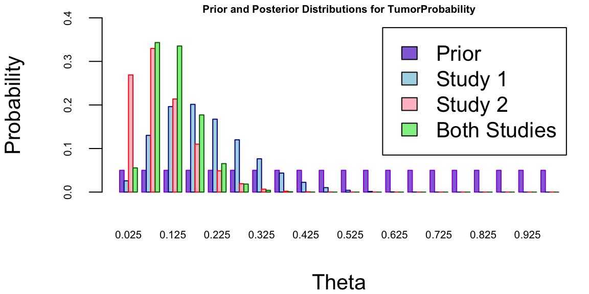
Exercise 27.87 Let \(X\) and \(Y\) be independent and identically distributed as a \(Exp(1)\) distribution. Their joint distribution is given by
\[ f_{X,Y}(x,y) = \exp(-x)\exp(-y) \mathrm{ , where} \; \; 0 < x,y < \infty \]
Solution:
First, we need to show the family of exponential distributions is closed under scaling. Let \(Z = aY\) so that \[P(Z \leq z) = P(Y \leq z/a) = 1 - \exp(-z/a)\] Therefore, \(Z \sim Exp(1/a)\) and \(f_{aY} = \frac{1}{a}\exp(-Y/a)\).
Let \(W = X + \frac{1}{2}Y\). The density function of W is \[\begin{aligned} f_W(W = w) &=& P(X+\frac{1}{2}Y = w) \\ &=& \int_0^w f_{X,\frac{1}{2}Y}(x, w-x)dx \\ &=& \int_0^w f_X(x)f_{\frac{1}{2}Y}(w-x)dx \\ &=& \exp(-w)*\left(\frac{1}{2}\exp(-2w)\right)\end{aligned}\]
\[\begin{aligned} E(W) &=& \int w*f_W(w)dw \\ &=& \frac{3}{2}\left(\int w*\frac{1}{3}\exp(-3w)dw\right) \\ &=& \frac{3}{2} = E(X) + \frac{1}{2}E(Y)\end{aligned}\]
By induction, the density function for \(W = X + \frac{1}{2} Y + \frac{1}{3} Z\) should be \(\exp(-w)*\left(\frac{1}{2}\exp(-2w)\right)*\left(\frac{1}{3}\exp(-3w)\right)\)
Exercise 27.88 (Poisson MLE vs Baye) You are developing tools for monitoring number of advertisemnt clicks on a website. You have observed the following data:
y = c(4,1,3,4,3,2,7,3,4,6,5,5,3,2,4,5,4,7,5,2)which represents the number of clicks every minute over the last 10 minutes. You assume that the number of clicks per minute follows a Poisson distribution with parameter \(\lambda\).
barplot, plot the predicted vs observed probabilities of for number of clicks from 1 to 7. Is the model a good fit?Hint: For part c, you can use the following code to calculate the predicted probabilities for the number of clicks from 0 to 5.
tb = table(y)
observed = tb/length(y)
predicted = dpois(1:7,lambda_mle)Solution: a)
lambda = seq(0, 10, 0.1)
likelihood = sapply(lambda, function(l) prod(dpois(y, l)))
plot(lambda, likelihood, type = "l", xlab = expression(lambda), ylab = "Likelihood")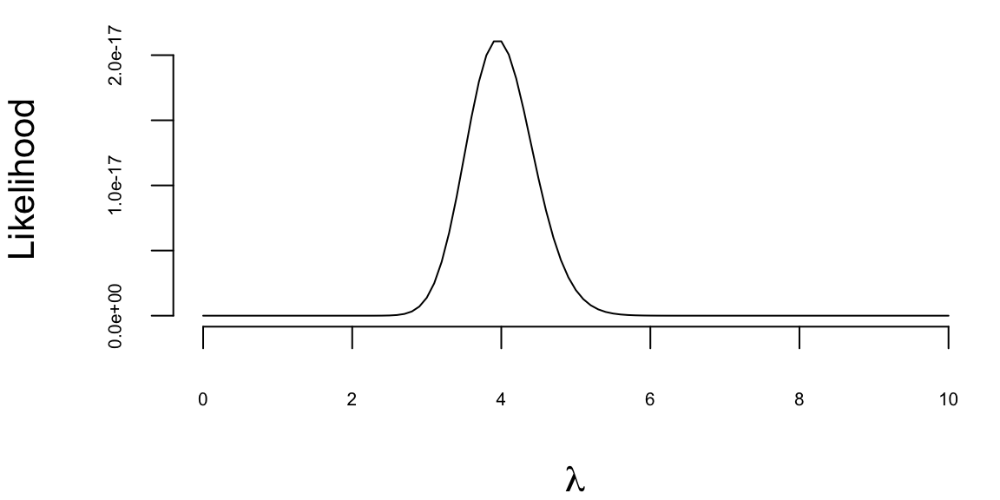
lambda_mle = optim(par = 1, fn = function(l) -sum(dpois(y, l, log = TRUE)))$par
lambda_mle## [1] 4Alternatively, the likelihood function is \[ L(\lambda) = \prod_{i=1}^{n} \frac{\lambda^{y_i}e^{-\lambda}}{y_i!} \] and the log-likelihood function is \[ \log L(\lambda) = \sum_{i=1}^{n} y_i \log(\lambda) - n\lambda \] The MLE is the value of \(\lambda\) that maximizes the log-likelihood function. We can find the MLE by taking the derivative of the log-likelihood function with respect to \(\lambda\) and setting it equal to zero. This gives \[ \frac{d}{d\lambda} \log L(\lambda) = \frac{1}{\lambda} \sum_{i=1}^{n} y_i - n = 0 \] Solving for \(\lambda\) gives \[ \lambda = \frac{1}{n} \sum_{i=1}^{n} y_i. \] A simple average of the data gives the MLE for \(\lambda\).
mean(y)## [1] 4pred = table(y)/length(y)
poisson = dpois(1:7,lambda_mle)
d = cbind(pred, poisson)
barplot(t(d),names.arg=1:7, xlab = "Clicks", ylab = "Frequency", beside = TRUE)alpha = 4
beta = 1
alphas = alpha + sum(y)
betas = beta + length(y)
lambda_bayes = alphas/betas
knitr::kable(data.frame(alpha = alphas, beta = betas, lambda_bayes = lambda_bayes))| alpha | beta | lambda_bayes |
|---|---|---|
| 83 | 21 | 4 |
Exercise 27.89 (Exponential Distribution) Let \(x_1, x_2,\ldots, x_N\) be an independent sample from the exponential distribution with density \(p (x | \lambda) = \lambda\exp (-\lambda x)\), \(x \ge 0\), \(\lambda> 0\). Find the maximum likelihood estimate \(\lambda_{\text{ML}}\). Choose the conjugate prior distribution \(p (\lambda)\), and find the posterior distribution \(p (\lambda | x_1,\ldots, x_N)\) and calculate the Bayesian estimate for \(\lambda\) as the expectation over the posterior.
Exercise 27.90 (Bernoulli Baeys) We have \(N\) Bernoulli trials with success probability in each trial being equal to \(q\), we observed \(k\) successes. Find the conjugate distribution \(p (q)\). Find the posterior distribution \(p (q | k, N)\) and its expectation.
Exercise 27.91 (Exponential Family (Gamma)) Write density function of Gamma distribution in a standard exponential family form. Find \(Ex\) and \(E\log x\) by differentiating the normalizing constant.
Exercise 27.92 (Exponential Family (Binomial)) Write density function of Binomial distribution in a standard exponential family form. Find \(Ex\) and \(Var x\) by differentiating the normalizing constant.
Exercise 27.93 (Normal) Let \(X_1\) and \(X_2\) are independent \(N(0,1)\) random variables. Let \[Y_1 = X_1^2 + X_2^2, \quad Y_2 = \frac{X_1}{\sqrt{Y_1}}\]
Density of \(N(\mu, \sigma^2)\) is \[f(x) = \frac{1}{\sqrt{2\pi\sigma^2}} e^{-\frac{(x-\mu)^2}{2\sigma^2}}\]
Exercise 27.94 (A/B Testing) During a recent breakout of the flu, 850 out 6,224 people diagnosed with the virus presented severe symptoms. During the same flu season, a experimental anti-virus drug was being tested. The drug was given to 238 people with the flu and only 6 of them developed severe symptoms. Based on this information, can you conclude, for sure, that the drug is a success?
Solution:
Null hypothesis is \(H_0: p_1 - p_2 = 0\), \(H_a: p_1 - p_2 \neq 0\). \[ \hat{p}_1 = \frac{850}{6224} = 0.136, \quad \hat{p}_2 = \frac{6}{238} = 0.025, \quad \hat{p}_1 - \hat{p}_2 = 0.136-0.025 = 0.111 \] The standard error is \[ s = \sqrt{\frac{0.136 \times (1 - 0.136)}{6224} + \frac{0.025 \times ( 1- 0.025)}{238} }= 0.011 \] t-stat is \[ t = \frac{\hat{p}_1 - \hat{p}_2 - 0}{s} = \frac{0.136 - 0.025}{0.011} = 10.09 > 1.96 \]
Yes, given this information we can conclude that the drug is working.
If you do confidence interval, the \(95\%\) confidence interval of \(p_1 - p_2\) is \[ [0.111 - 1.96 \times 0.011, 0.111 + 1.96\times 0.011] = [0.089, 0.133] \] which doesn’t contain 0. We reject the null hypothesis.
Exercise 27.95 (Tesla Supplier) Tesla purchases Lithium as a raw material for their batteries from either of two suppliers and is concerned about the amounts of impurity the material contains. The percentage impurity levels in consignments of the Lithium follows closely a normal distribution with the means and standard deviations given in the table below. The company is particularly anxious that the impurity level not exceed \(5\)% and wants to purchase from the supplier who is ore likely to meet that specification.
| Mean | Standard Deviation | |
|---|---|---|
| Supplier A | 4.4 | 0.4 |
| Supplier B | 4.2 | 0.6 |
Exercise 27.96 (Red Sox) On September 24, 2003, Pete Thamel in the New York Times reported that the Boston Red Sox had been accused of cheating by another American League Team. The claim was that the Red Sox had a much better winning record at home games than at games played in other cities.
The following table provides the wins and losses for home and away games for the Red Sox in the 2003 season
| Record | ||||
|---|---|---|---|---|
| Team | Home Wins | Home Losses | Away Wins | Away Losses |
| Boston Red Sox | 53 | 28 | 42 | 39 |
Is there any evidence that the proportion of Home wins is significantly different from home and away games?
Discuss any other issues that are relevant.
Hint: a 95% confidence interval for a difference in proportions \(p_1 - p_2\) is given by \[ ( \hat{p}_1 - \hat{p}_2 ) \pm 1.96 \sqrt{ \frac{ \hat{p}_1 ( 1 - \hat{p}_1 ) }{ n_1 } + \frac{ \hat{p}_2 ( 1 - \hat{p}_2 ) }{ n_2 } } \]
Solution:
The home and away winning proportions are given by \[ p_1 = \frac{53}{81} = 0.654 \; \; \text{ and} \; \; \text{ Var} = \frac{ p_1 ( 1- p_1 ) }{ n_1 } = \frac{53 \times 28 }{81^3} = 0.0028 \] and \[ p_2 = \frac{42}{81} = 0.518 \; \; \text{ and} \; \; \text{ Var} = \frac{ p_2 ( 1- p_2 ) }{ n_2 } = \frac{42 \times 39}{81^3} = 0.0031 \] Can either do the problem as a confidence interval or a hypothesis test.
For the CI, we get \[ \left ( \frac{53}{81} - \frac{42}{81} \right ) \pm 1.96 \sqrt{ \frac{53 \times 28 }{81^3} + \frac{42 \times 39}{81^3} } = ( 0.286 , -0.014 ) \] As the confidence interval contains zero there is no significant difference at the \(5\)% level.
For the hypothesis test we have the null hypothesis that \(H_0 : p_1 = p_2\) versus \(H_1 : p_1 \neq p_2\). Then the test statistic is approximately normally distributed (large \(n = n_1 + n_2\)) is and given by \[Z = \frac{ 0.654 - 0.518 }{\sqrt{ 0.0059} } = 1.875\] At the \(5\)% level the critical value is \(1.96\) and so there’s not statistical significance.
The major issue here is whether you should test whether the proportions from home and away are different. There might be a significant home team bias in general and we should test to see if the Red Sox advantage is significantly different from that. All things else equal this will reduce the significance of the Red Sox home advantage bias.
Exercise 27.97 (Myocardial Infarction) In a five year study of the effects of aspirin on Myocardial Infarction (MI), or heart attack, you have the following dataset on the reduction of the probability of getting MI from taking aspirin versus a Placebo, or control.
| Treatment | with MI | without MI |
|---|---|---|
| Placebo | 198 | 10845 |
| Aspirin | 104 | 10933 |
Solution:
Converting to proportions:
| Treatment | with MI | without MI | n |
|---|---|---|---|
| Placebo | 0.01793 | 0.98207 | 11043 |
| Aspirin | 0.00942 | 0.99058 | 11037 |
Exercise 27.98 (San Francisco Giants) In October 1992, the ownership of the San Francisco Giants considered a sale of the franchise that would have resulted in a move to Florida. A survey from the San Francisco Chronicle found that in a random sample of \(625\) people, 50.7% would be disappointed by the move. Find a 95% confidence interval of the population proportion
Solution:
The 95% CI is found by \[ \hat{p} \pm z_{\alpha /2}\sqrt{\frac{\hat{p}(1-\hat{p})}{n}}=.507\pm 1.96\sqrt{\frac{.507\times .493}{625}}=.507\pm 2\times .020=\left(.467,.547\right) \]
Exercise 27.99 (Pfizer) Pfizer introduced Viagra in early 1998 and during \(1998\) of the \(6\) million Viagra users \(77\) died from coronary problems such as heart attacks. Pfizer claimed that this rate is no more than that in the general population.
You find from a clinical study of \(1,500,000\) men who were not on Viagra that \(11\) of then died of coronary problems in the same length of time during the \(77\) Viagra users who dies in \(1998\).
Do you agree with Pfizer’s claim that the proportion of Viagra users dying from coronary problems is no more than that of other comparable men?
Solution:
A 95% confidence interval for a difference in proportions \(p_1 - p_2\) is given by \[( \hat{p}_1 - \hat{p}_2 ) \pm 1.96 \sqrt{ \frac{ \hat{p}_1 ( 1 - \hat{p}_1 ) }{ n_1 } + \frac{ \hat{p}_2 ( 1 - \hat{p}_2 ) }{ n_2 } }\]
Can do a confidence interval or a \(Z\)-score test.
With Viagra, \(\hat{p}_1 = 77/6000000 = 0.00001283\) and without Viagra \(\hat{p}_2 = 11/1500000 = 0.00000733\). Need to test whether these are equal.
With a \(95\)% confidence interval for \(( p_1 - p_2 )\), you get an interval \(( 0.00000549 , 0.0000055 )\) which doesn’t contain zero. Hence evidence that the proportion is higher.
Measured very accurately due to the large sample sizes.
With testing might use a one-sided test and an \(\alpha\) of \(0.01\).
Exercise 27.100 (Voter: CI) Given a random sample of \(1000\) voters, \(400\) say they will vote for Donald Trump if the Republican nomination for the 2016 US Presidential Election. Given that he gets the nomination, a \(95\%\) confidence interval for the true proportion of voters that will vote for him includes \(45\%\).
Solution:
False, \(\hat p = \frac{400}{1000} = 40\%\) and \[ s_{\hat p} = \sqrt{\frac{\hat p(1-\hat p)}{1000}} = 0.0072 \] The \(95\%\) confidence interval is \([0.4 \pm] 0.0142\). which does not include \(45\%\).
Exercise 27.101 (Survey AB testing) In a pre-election survey of \(435\) voters, \(10\) indicated that they planned to vote for Ralph Nader. In a separate survey of \(500\) people, \(250\) said they planned to vote for George Bush.
Solution:
Exercise 27.102 (Significance Tests.) Some defendants in southern states have challenged verdicts made during the ’50s and ’60s, because of possible unfair jury selections. Juries are supposed to be selected at random from the population. In one specific case, only 12 jurors in an 80 person panel were African American. In the state in question, 50% of the population was African American. Could a jury with 12 African Americans out of 80 people be the result of pure chance?
Using \(n = 80\), \(X = 12\) find a 99% confidence interval for the proportion \(p\). Is that significantly different from \(p = 0.5\).
Exercise 27.103 A marketing firm is studying the effects of background music on people’s buying behavior. A random sample of \(150\) people had classical music playing while shopping and \(200\) had pop music playing. The group that listened to classical music spent on average $ \(74\) with a standard deviation of $ \(18\) while the pop music group spent $ \(78.4\) with a standard deviation of $ \(12\).
Solution:
We are given the following: \(\bar{x}=74,s_{x}=18,n_{x}=150,\bar{y}=78.4,s_{y}=12,n_{y}=200\)
\[\begin{aligned} H_{0}:\mu_{x}-\mu_{y} & = & 0\\ H_{1}:\mu_{x}-\mu_{y} & \neq & 0\end{aligned} \]
In order to test for this hypothesis, we calculate the z-score and compare it with the z score at 5% and 1% confidence level.\[z=\frac{\bar{x}-\bar{y}}{\sqrt{\frac{s_{x}^{2}}{n_{x}}+\frac{s_{y}^{2}}{n_{y}}}}=\frac{74-78.4}{\sqrt{\frac{324}{150}+\frac{144}{200}}}=-2.592\]
Since \(z>z_{0.025}\), we can reject the null hypothesis at 95% confidence level and say that there exist significant differences between purchasing habits.
For \(\alpha=0.05\), \(z_{\alpha/2}=1.96\) and for \(\alpha=0.01\), \(z_{\alpha/2}=2.575\). Thus, the answer does not change when we move from 95% to 99% confidence level.
Alternately, the above question can be solved by creating a confidence interval based on the differences. Again, we will reach the same conclusion.
Exercise 27.104 (Sensitivity and Specificity) The quality of Nvidia’s graphic chips have the probability that a randomly chosen chip being defective is only \(0.1\)%. You have invented a new technology for testing whether a given chip is defective or not. This test will always identify a defective chip as defective and only “falsely” identify a good chip as defective with probability \(1\)%
Solution:
We have the following probabilities (\(D\) represents “defective chip” and \(T\) represents “test result indicates defective chip”): \[P(D)=0.001\] \[P(T|D)=1\] \[P(T|\bar{D})=0.01\]
Exercise 27.105 (CI fo Google) Google is test marketing a new website design to see if it increases the number of click-through on banner ads. In a small study of a million page views they find the following table of responses
| Total Viewers | Click-Throughs | |
|---|---|---|
| new design | 700,000 | 10,000 |
| old design | 300,000 | 2,000 |
Find a \(99\)% confidence interval for the increase in the proportion of people who click-through on banner ads using the new web design.
Hint: a 99% confidence interval for a difference in proportions \(p_1 - p_2\) is given by \(( \hat{p}_1 - \hat{p}_2 ) \pm 2.58\sqrt{ \frac{ \hat{p}_1 ( 1 - \hat{p}_1 ) }{ n_1 } + \frac{ \hat{p}_2 ( 1 - \hat{p}_2 ) }{ n_2 } }\)
Solution:
We are interested in the distribution of \(p_1-p_2\). We have that: \[ \begin{aligned} \hat{p}_1 = \frac{10000}{700000} = \frac{1}{70} \\ \hat{p}_1 = \frac{2000}{300000} = \frac{1}{150} \end{aligned} \]
Following the hint, we have that the \(99\%\) confidence interval is:
\[ \begin{aligned} p_1 - p_2 &\in & \Big[\hat{p}_1- \hat{p}_2 - 2.58\sqrt{\frac{\hat{p}_1(1-\hat{p}_1 )}{n_1}+\frac{\hat{p}_2(1-\hat{p}_2)}{n_2}}, \hat{p}_1- \hat{p}_2 + 2.58\sqrt{\frac{\hat{p}_1(1-\hat{p}_1 )}{n_1}+\frac{\hat{p}_2(1-\hat{p}_2)}{n_2}}\Big] \\ &=& [0.00762-0.00053,0.00762+0.00053] \\ &=& [0.00709,0.00815] \end{aligned} \]
Exercise 27.106 (Amazon) Amazon is test marketing a new package delivery system. It wants to see if same-day service is feasible for packages bought with Amazon prime. In a small study of a hundred thousand delivers they find the following times for delivery
| Deliveries | Mean-Time (Hours) | Standard Deviation-Time | |
|---|---|---|---|
| new system | 80,000 | 4.5 | 2.1 |
| old system | 20,000 | 5.6 | 2.5 |
Hint: a 95% confidence interval for a difference in means \(\mu_1 - \mu_2\) is given by \(( \bar{x}_1 - \bar{x}_2 ) \pm 1.96 \sqrt{ \frac{s_1^2 }{ n_1 } + \frac{ s_2^2 }{ n_2 } }\) ]
Solution:
(4.5-5.6)-1.96*sqrt(2.1^2/80000+2.5^2/20000) #-1.14## [1] -1.1(4.5-5.6)+1.96*sqrt(2.1^2/80000+2.5^2/20000) #-1.06## [1] -1.1Hence, the 95% confidence interval is (-1.14, -1.06). a) As we have a large sample size, we can assume a normal distribution with given sample mean and standard deviation, \(P(T \leq 5) = 0.594\)
pnorm(5,mean=4.5,sd=2.1) #0.594## [1] 0.59Hence, 59.4% of deliveries will be under 5 hours.
Exercise 27.107 (Vitamin C) In the very famous study of the benefits of Vitamin C, \(279\) people were randomly assigned to a dose of vitamin C or a placebo (control of nothing). The objective was to study where vitamin C reduces the incidence of a common cold. The following table provides the responses from the experiment
| Group | Colds | Total |
|---|---|---|
| Vitamin C | 17 | 139 |
| Placebo | 31 | 140 |
Hint: a 95% confidence interval for a difference in proportions \(p_1 - p_2\) is given by \[ ( \hat{p}_1 - \hat{p}_2 ) \pm 1.96 \sqrt{ \frac{ \hat{p}_1 (1- \hat{p}_1) }{ n_1 } + \frac{ \hat{p}_2 (1- \hat{p}_2) }{ n_2 } } \]
Solution:
To test \[H_0: p_1 - p_2 \neq 0,\] we could perform a two-sample t-test. \[ \hat{p}_1 = \frac{17}{139} = 12.23\% \mbox{ and } \hat{p}_2 = \frac{31}{140} = 22.14\% \] \[ \hat{\sigma} = \sqrt{ \frac{ \hat{p}_1 (1- \hat{p}_1) }{ n_1 } + \frac{ \hat{p}_2 (1- \hat{p}_2) }{ n_2 } } = 4.48\% \] \[ t-stat = \frac{\hat{p}_1 - \hat{p}_2}{\hat{\sigma} } = -2.21 < -1.96 = qnorm(0.025) \] Yes, we can reject the null hypothesis and there is a significant difference at 5% level.
To form the 99% confidence interval of the difference, we use
qnorm(0.995) #2.58.## [1] 2.6\[ 0 \in [-9.91\% - 2.58*4.48\%, -9.91\% + 2.58*4.48\%] \] We cannot recommend the use of vitamin to prevent a cold at the 1% significance level.
Exercise 27.108 (Facebook vs Reading) In a recent article it was claimed that “\(96\)% of Americans under the age of \(50\)” spent more than three hours a day on Facebook.
To test this hypothesis, a survey of \(418\) people under the age of \(50\) were taken and it was found that \(401\) used Facebook for more than three hours a day.
Test the hypothesis at the \(5\)% level that the claim of \(96\)% is correct.
Solution:
We want to test the proportion of people under the age of 50 on Facebook. \[H_0: p = 96\%\]
The estimated proportion from the survey is \[\hat{p} = 401/418 = 0.959\]
The standard deviation of the sample proportion is \[\hat{\sigma} = \sqrt{\frac{\hat{p}*(1-\hat{p})}{n}} = 0.0096\]
To perform a t-test, the corresponding statistic is \[\mbox{t-stat} = \frac{0.959 - 0.96}{0.0096} = -0.1\]
It seems that we cannot reject the null hypothesis at the 5% level.
Exercise 27.109 (Paired T-Test) The following table shows the outcome of eight years of a ten year bet that Warren Buffett placed with Protege Partners, a New York hedge fund. Buffett claimed that a simple index fund would beat a portfolio strategy (fund-of-funds) picked by Protege over a ten year time frame. At Buffett’s shareholder meeting, he provided an update of the current state of the bet. The bundle of hedge funds picked by Protege had returned \(21.9\)% in the eight years through \(2015\) and the S&P500 index fund had soared \(65.7\)%.
| SP Index | Hedge Funds | |
|---|---|---|
| 2008 | -37.0% | -23.9% |
| 2009 | 26.6% | 15.9% |
| 2010 | 15.1% | 8.5% |
| 2011 | 2.1% | -1.9% |
| 2012 | 16.0% | 6.5% |
| 2013 | 32.3% | 11.8% |
| 2014 | 13.6% | 5.6% |
| 2015 | 1.4% | 1.7% |
| cumulative | 65.7% | 21.9% |
Solution:
To conduct a paired t-test, we need define a new variable \[ D = SP.Index - Hedge.Funds. \] Assume that \(D_i \overset{i.i.d.}{\sim} N(\mu, \sigma^2)\). the null hypothesis we want to test is \[ H_0: \mu=0 \] The mean and standard deviation of the difference \(\{D_i\}_{i=1}^n\) are \[ \bar{D} = 0.0574,\quad s_D = 0.0969 \]
SP.Index = c(-37,26.6,15.1,2.1,16,32.3,13.6,1.4)
Hedge.Funds = c(-23.9,15.9,8.5,-1.9,6.5,11.8,5.6,1.7)
SP.Index = SP.Index/100
Hedge.Funds = Hedge.Funds/100
mean(SP.Index-Hedge.Funds)## [1] 0.057sd(SP.Index-Hedge.Funds)## [1] 0.097Therefore the t-statistic is \[t=\frac{\bar{D}}{s_D\sqrt{1/n}} = \frac{0.0574}{0.0969\times\sqrt{1/8}}=1.6755.\] Notice that the degree of freedom is \(8 - 1 = 7\). The corresponding p-value is \[P(|t_7|>1.6755) = 0.1378\]
2*pt(1.6755,df=7,lower.tail = FALSE) #0.1377437## [1] 0.14In R, you can easily perform t-test using the following command, which gives the same test result as above.
t.test(SP.Index,Hedge.Funds,paired = TRUE)##
## Paired t-test
##
## data: SP.Index and Hedge.Funds
## t = 2, df = 7, p-value = 0.1
## alternative hypothesis: true mean difference is not equal to 0
## 95 percent confidence interval:
## -0.024 0.138
## sample estimates:
## mean difference
## 0.057The p-value is larger than 0.05. Thus we don’t reject the null hypothesis at 5% significance level. In other words, these two return strategies are not significantly different.
For the second question, the exact probability of Buffett winning his bet is calculated by \[P\left(\frac{(1+S_9)(1+S_{10})(1+65.7\%)}{(1+H_9)(1+H_{10})(1+21.9\%)}>1\right)\] where \(S_9, S_{10}, H_9, H_{10}\) are returns of two strategies in 9th and 10th year. To derive the distribution of the left hand side expression is difficult. Here we instead give a simulation solution, where the returns are assumed to be i.i.d. Normal variables.
m1 = mean(SP.Index)
s1 = sd(SP.Index)
m2 = mean(Hedge.Funds)
s2 = sd(Hedge.Funds)
N = 1000
cum1 = NULL # cumulative return of SP.Index
cum2 = NULL # cumulative return of Hedge.Funds
set.seed(410)
for (i in 1:N)
{
# simulate returns in 2016 and 2017
return1 = c(0.657, rnorm(n=2, mean = m1, sd = s1))
# compute the cumulative return
cum1 = c(cum1, cumprod(1+return1))
return2 = c(0.219, rnorm(n=2, mean = m2, sd = s2))
cum2 = c(cum2, cumprod(1+return2))
}
# compute the prob. of Buffett winning
mean(cum1>cum2) #0.9296667## [1] 0.93The estimated probability is 92.97%, indicating that Buffett is very likely to win his bet. Since the paired t - test suggests no significant difference in average returns, you can also estimate the mean by pooling the data and redo the simulation, which gives a smaller estimate (89.27%).
Exercise 27.110 (Shaquille O’Neal) Shaquille O’Neal (nicknamed Shaq) is an ex-American Professional basketball player. He was notoriously bad at free throws (an uncontested shot given to a player when they are fouled). The following table compares the first three years of Shaq’s career to his last three years.
| Group | Free Throws Made | Free Throws Attempted |
|---|---|---|
| Early Years | 1352 | 2425 |
| Later Years | 1121 | 2132 |
Did Shaq get worse at free throws over his career?
Solution:
\[ \hat{p}_1 = \frac{1352}{2425} = 0.5575, \quad \hat{p}_2 = \frac{1121}{2132} = 0.5258, \quad se( \hat{p_1} - \hat{p_2} ) = \sqrt{ \frac{ \hat{p}_1 (1- \hat{p}_1) }{ n_1 } + \frac{ \hat{p}_2 (1- \hat{p}_2) }{ n_2 } } = 0.0148 \] The \(Z\)-score is \[ Z = \frac{ \hat{p}_1 - \hat{p}_2 }{ se( \hat{p_1} - \hat{p_2} ) } = 2.14 \; . \] The p-value of Z-test is \[P(|N(0,1)|>2.14) = 0.0324\] Thus we conclude that Shaq got worse at free throws.
Exercise 27.111 (Furniture Website) Furniture.com wishes to estimate the average annual expenditure on furniture among its subscribers. A sample of 1000 subscribers is taken. The sample standard deviation is found to be $670 and the sample mean is $3790.
Exercise 27.112 (Grocery AB Testting) A grocery delivery service is studying the impact of weather on customer ordering behavior. To do so, they identified households which made orders both in October and in February on the same day of the week and approximately the same time of day. They found 112 such matched orders. The mean purchase amount in October was $121.45, with a standard deviation of $32.78, while the mean purchase amount in February was $135.99 with a standard deviation of $24.81. The standard deviation of the difference between the two orders was $38.28. To quantify the evidence in the data regarding a difference in the average purchase amount between the two months, compute the \(p\)-value of the data.
Exercise 27.113 (SimCity AB Testing) SimCity 5 is one of Electronic Arts (EA’s) most popular video games. As EA prepared to release the new version, they released a promotional offer to drive more pre-orders. The offer was displayed on their webpage as a banner across the top of the pre-order page. They decided to test some other options to see what design or layout would drive more revenue.
The control removed the promotional offer from the page altogether. The test lead to some very surprising results. With a sample size of \(1000\) visitors, of the \(500\) which got the promotional offer they found \(143\) people wanted to purchase the games and of the half that got the control they found that \(199\) wanted to buy the new version of SimCity.
Test at the \(1\)% level whether EA should provide a promotional offer or not.
Solution:
To see whether the promotion program works, we need to find out whether the proportion of people who want to buy the game is larger. Denote \(p_1\) is the proportion from the experimental group with promotion and \(p_2\) from the control group without promotion. Therefore, the null hypothesis we are testing is \[H_0: p_1 > p_2\]
In the sample, we observe \[n_1 = n_2 = 500\] \[\hat{p_1} = 199/500 \mbox{ and } \hat{p_2} = 143/500\]
To perform the two-sample t-test, we need to calculate the pooled sample standard deviation first. \[\bar{p} = \hat{p_1}*\frac{n_1}{n_1+n_2} + \hat{p_2}*\frac{n_2}{n_1+n_2} = 171/500\] \[\bar{\sigma} = \sqrt{\bar{p}*(1-\bar{p})*(\frac{1}{n_1} + \frac{1}{n_2})} = 0.03\]
Then, \[\mbox{t-stat} = \frac{\hat{p_1} - \hat{p_2}}{\bar{\sigma}} = 3.73 > \mbox{qnorm(0.995)} = 2.58\]
Now we can conclude that the promotional program works statistically at the 1% level.
Exercise 27.114 (True/False)
Solution:
Exercise 27.115 (True/False: CI)
Solution:
Exercise 27.116 (True/False: Sampling Distribution)
Solution:
Exercise 27.117 What is the difference between a randomized trial and an observational study?
Exercise 27.118 Consider a complex A/B experiment, with 6 alternatives, when you you have 5 variations to your page, plus the original.
Solution:
Exercise 27.119 (Emily, Car, Stock Market, Sweepstakes, Vacation and Bayes.)
Emily is taking Bayesian Analysis course. She believes she will get an A with probability 0.6, a B with probability 0.3, and a C or less with probability 0.1. At the end of semester she will get a car as a present form her (very) rich uncle depending on her class performance. For getting an A in the course Emily will get a car with probability 0.8, for B with probability 0.5, and for anything less than B, she will get a car with probability of 0.2. These are the probabilities if the market is bullish. If the market is bearish, the uncle is less likely to make expensive presents, and the above probabilities are 0.5, 0.3, and 0.1, respectively. The probabilities of bullish and bearish market are equal, 0.5 each. If Emily gets a car, she would travel to Redington Shores with probability 0.7, or stay on campus with probability 0.3. If she does not get a car, these two probabilities are 0.2 and 0.8, respectively. Independently, Emily may be a lucky winner of a sweepstake lottery for a free air ticket and vacation in hotel Sol at Redington Shores. The chance to win the sweepstake is 0.001, but if Emily wins, she will go to vacation with probability of 0.99, irrespective of what happened with the car.
After the semester was over you learned that Emily is at Redington Shores.
Hint: You can solve this problem by any of the 3 ways: (ii) direct simulation using R, or Python, and (ii) exact calculation. Use just one of the two ways to solve it. The exact solution, although straightforward, may be quite messy.
Solution: We introduce the following RV’s:
The conditional independence is given by the following graph
graph LR
M((M)) --> C((C))
G((G)) --> C
C --> R((R))
L((L)) --> R
we can write the joint distribution as \[ P(C,G,M,R,L) = P(M)P(G)P(C|G,M)P(L)P(R|C,L) \]
Here is what we know
| 0 | 1 |
|---|---|
| 0.5 | 0.5 |
| A | B | \(\le C\) |
|---|---|---|
| 0.6 | 0.3 | 0.1 |
| 0 | 1 | M | G |
|---|---|---|---|
| 0.5 | 0.5 | 0 | A |
| 0.7 | 0.3 | 0 | B |
| 0.9 | 0.1 | 0 | C |
| 0.2 | 0.8 | 1 | A |
| 0.5 | 0.5 | 1 | B |
| 0.8 | 0.2 | 1 | C |
| 0 | 1 | L | C |
|---|---|---|---|
| 0.8 | 0.2 | 0 | 0 |
| 0.3 | 0.7 | 0 | 1 |
| 0.01 | 0.99 | 1 | 0 |
| 0.01 | 0.99 | 1 | 1 |
m=c(0.5,0.5) # P(M)
g=c(0.6,0.3,0.1) # P(G)
jmg = c(t(outer(m, g, FUN = "*"))) # P(G)P(M)
cmg = c(0.5,0.3,0.1,0.8,0.5,0.2) # P(C=1 | M,G)
jcmg=jmg*cmg # P(M)P(G)P(C=1 | M,G)
l=c(0.001,0.999) # L
rlc = c(0.99,0.7) # P(R=1 | C=1,L)
cr=outer(jcmg, l*rlc, FUN = "*") # P(C=1 | M,G)P(M)P(G)P(R=1 | C=1,L)
sum(cr) # sum P(C=1 | M,G)P(M)P(G)P(R=1 | C=1,L)## [1] 0.37c0mg = c(0.5,0.7,0.9,0.2,0.5,0.8) # P(C=0 | M,G)
jc0mg=jmg*c0mg # P(C=0 | M,G)P(M)P(G)
rlc0 = c(0.99,0.2) # P(R=1 | C=0,L)
c0r=outer(jc0mg, l*rlc0, FUN = "*") # P(C=1 | M,G)P(M)P(G)P(R=1 | C=1,L)
sum(c0r)## [1] 0.095PR = sum(cr) + sum(c0r)Thus \(P(C=1,R=1) = 0.3676523\) and \(P(R=1) = 0.4630275\), take the ratio to get \(P(C=1\mid R=1)\)
sum(cr)/PR## [1] 0.79\[ P(C=1\mid R=1) = 0.3676523/0.4630275 = 0.794 \] We can also use MC simulations
gmc = array(c(0.5,0.7,0.9,0.2,0.5,0.8, 0.5,0.3,0.1,0.8,0.5,0.2), dim=c(3,2,2)) # G,M,C
clr = array(c(0.8 ,0.3 ,0.01,0.01,0.2 ,0.7 ,0.99,0.99), dim=c(2,2,2)) # C,L,R
simvac = function(){
m = sample(1:2,1,prob=c(0.5,0.5))
g = sample(1:3,1,prob=c(0.6,0.3,0.1))
c = sample(1:2,1,prob=gmc[g,m,])
l = sample(1:2,1,prob=c(0.999,0.001))
r = sample(1:2,1,prob=clr[c,l,])
return(c(m,g,c,l,r))
}
N = 10000
d = matrix(0,N,5)
for (i in 1:N){
d[i,] = simvac()
}
PR = sum(d[,5]==2)/N
print(PR)## [1] 0.46sum(d[,3]==2 & d[,5]==2)/sum(d[,5]==2)## [1] 0.79PLR = 0.001 * 0.99
PLR/PR## [1] 0.0021\[ P(L=1\mid R=1) = \dfrac{0.00099}{0.4630} = 0.002138102 \]
PRGB =
0.5*0.3*0.999*0.5*0.7+
0.5*0.3*0.999*0.5*0.2+
0.5*0.3*0.999*0.3*0.7+
0.5*0.3*0.999*0.7*0.2+
0.3 * 0.001 * 0.99
# P(G=B , R=1)
print(PRGB)## [1] 0.12# P(G=B | R=1)
PRGB/PR## [1] 0.26PMR = #P(M,R)
0.5*0.6*0.999*0.8*0.7+
0.5*0.6*0.999*0.2*0.2+
0.5*0.3*0.999*0.5*0.7+
0.5*0.3*0.999*0.5*0.2+
0.5*0.1*0.999*0.2*0.7+
0.5*0.1*0.999*0.8*0.2+
0.5 * 0.001 * 0.99
#P(M,R)
print(PMR)## [1] 0.26#P(M=0,R)
1-PMR/PR## [1] 0.43Exercise 27.120 (Poisson: Website visits) A web designer is analyzing traffic on a web site. Assume the number of visitors arriving at the site at a given time of day is modeled as a Poisson random variable with a rate of \(\lambda\) visitors per minute. Based on prior experience with similar web sites, the following estimates are given:
Find a Gamma prior distribution for the arrival rate that fits these judgments as well as possible. Comment on your results.
Hint: there is no “right” answer to this problem. You can use trial and error to find a distribution that fits as well as possible. You can also use an optimization method such as Excel Solver to minimize a measure of how far apart the given quantiles are from the ones in the target distribution.
Solution:
We can try different values to see whether we can get a result that is close to the given quantiles. Given, there are only 2 parameters, I simply did a grid-search. I generated a grid of 200x200 points and calculated the quantiles for each point. Then I found the point that was closest to the given quantiles. I used sum of absolute value differences to measure the distance between the given and calculated quantiles. You can use squared differences instead.
g = expand.grid(seq(from=0.5,to=7,length=200),seq(from=0.5,to=10,length=200))
qf = function(th) {
qgamma(c(0.1, 0.5, 0.9), shape=th[1], scale=th[2])
}
r = apply(g,1,qf)
target = c(5,14,27)
ind = which.min((colSums(abs(r-target))))
print(g[ind,])## Var1 Var2
## 20272 2.8 5.3d = data.frame(quantile = c(0.1, 0.5, 0.9), expert = target, calculated = qf(as.numeric(g[ind,])))
knitr::kable(d)| quantile | expert | calculated |
|---|---|---|
| 0.1 | 5 | 5.3 |
| 0.5 | 14 | 13.3 |
| 0.9 | 27 | 27.0 |
Notice instead of looping through the grid, I used expand.grid combined with apply to calculate the quantiles for each point. This is a more efficient way to do the same thing.
Exercise 27.121 (Normal-Likelihod) We observe samples of normal random variable \(Y_i\mid \mu,\sigma \sim N(\mu,\sigma^2)\) with known \(\sigma\), specify and plot likelihood for \(\mu\)
Hint: Remember that the nornal likelihood is the product of the normal density function evaluated at each observation \[ L(\mu|y,\sigma) = \prod_{i=1}^n \dfrac{1}{\sqrt{2\pi}\sigma}e^{-(y_i-\mu)^2/2\sigma^2} = \dfrac{1}{(2\pi\sigma^2)^{n/2}}e^{-\sum_{i=1}^n(y_i-\mu)^2/2\sigma^2} \] The expression under the exponenta can be simplified to \[ \sum_{i=1}^n(y_i-\mu)^2 = \sum_{i=1}^n (\mu^2 - 2\mu y_i + y_i^2) = n\mu^2 - 2\mu\sum_{i=1}^n y_i + \sum_{i=1}^n y_i^2 = n\mu^2 - 2\mu n\bar{y} + \sum_{i=1}^n y_i^2 = n(\mu^2 - 2\mu\bar{y} + \sum_{i=1}^n y_i^2) \] Now \[ \mu^2 - 2\mu\bar{y} + \sum_{i=1}^n y_i^2 = \mu^2 - 2\mu\bar{y} + \bar y^2 - \bar y^2 + \sum_{i=1}^n y_i^2 (\mu - \bar{y})^2 + \sum_{i=1}^n(y_i-\bar{y})^2 \] The last summad does not depend on \(\mu\) and can be ignored. Thus, the likelihood is proportional to \[ e^{\dfrac{-(\mu - \bar{y})^2}{2\sigma^2/n}} \]
Solution: Let’s implement the likelihood function. We will use two different functions to calculate the likelihood. The first function uses the \(\bar y\) as summary statistic and evaluates normal density function to calculate the likelihood for the mean of the data. The second function uses the product of the normal density function to calculate the likelihood for the mean of the data. We will compare the results of the two functions to see if they are consistent.
lhood1 = function(y, mu, sigma) {
dnorm(mean(y), mu, sigma/sqrt(length(y)))
}
lhood2 = function(y, mu, sigma) {
prod(dnorm(y, mu, sigma))
}
mu = seq(-15,15,0.1)
a1 = lhood1(c(-4.3,0.7,-19.4),mu,10)
a2 = sapply(mu,lhood2,y=c(-4.3,0.7,-19.4),sigma=10)
(a1/a2)[1:5]## [1] 3253 3253 3253 3253 3253plot(mu,a1)
lines(mu,3253.175*a2,col="red")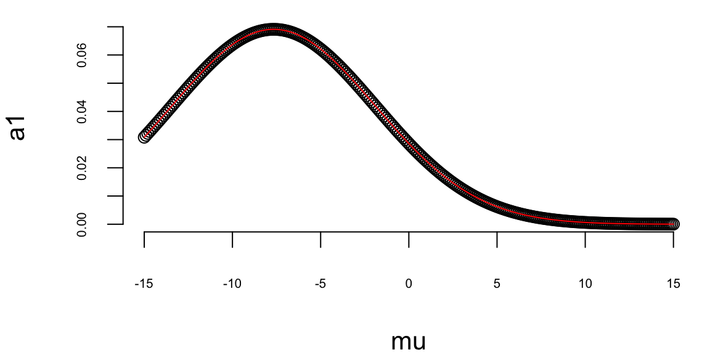
We see that two approaches to calculating the likelihood agree (up to a constant).
plot(mu,a1,type="l",xlab="mu",ylab="likelihood")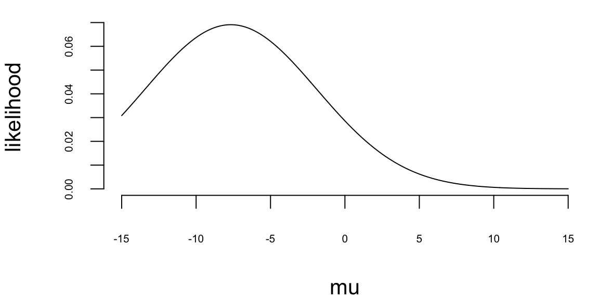
plot(mu,lhood1(c (-12,12,-4.5,0.6),mu,6),type="l",xlab="mu",ylab="likelihood")plot(mu,lhood1(c(-4.3,0.7,-19.4),mu,2),type="l",xlab="mu",ylab="likelihood")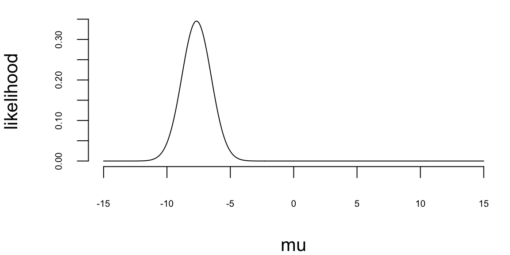
plot(mu,lhood1(c(12.4,12.1),mu,5),type="l",xlab="mu",ylab="likelihood")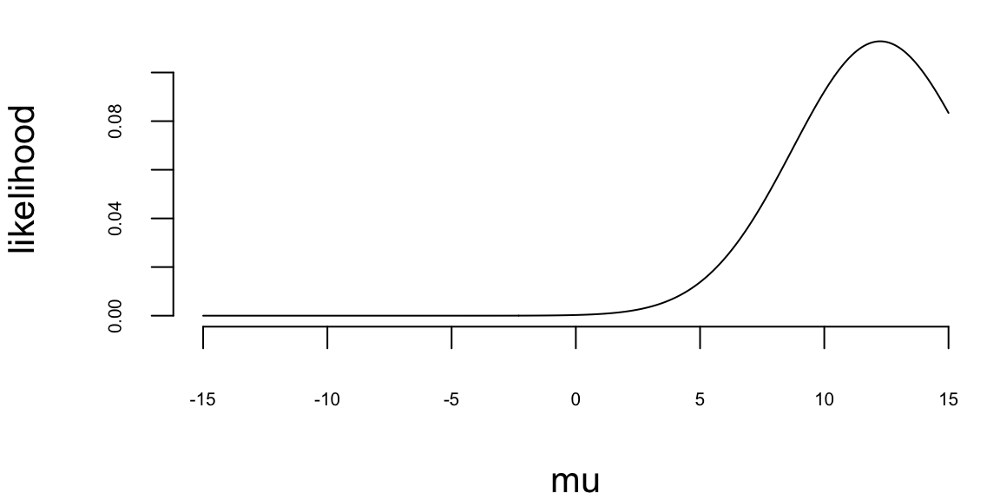
Exercise 27.122 (Normal-Normal for Lock5Data) Lock5Data package (Lock et al. 2016), includes results for a cross-sectional study of hippocampal volumes among 75 subjects (Singh et al. 2014): 25 collegiate football players with a history of concussions (FBConcuss), 25 collegiate football players that do not have a history of concussions (FBNoConcuss), and 25 control subjects. For our analysis, we’ll focus on the subjects with a history of concussions:
library(Lock5Data)
data(FootballBrain)
d = FootballBrain[FootballBrain$Group=="FBConcuss",]
plot(density(d$Hipp,bw=300))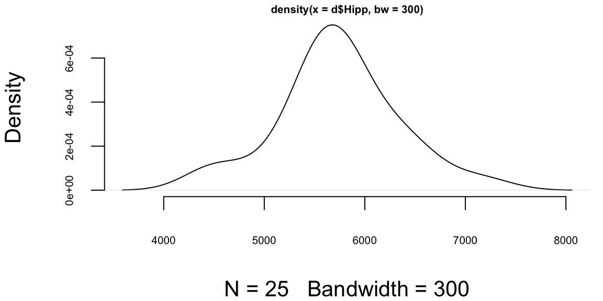
FBConcuss group). Calculate the likelihood for \(\mu\).Solution:
sigma = sd(d$Hipp)
print(sigma)## [1] 593Thus, we assume that \[ p(\mu\mid y) \propto e^{\dfrac{-(\bar y-\mu)^2}{2\cdot 593.3^2/25}} \]
mu = seq(5000,6500,length.out=200)
lhood = dnorm(mean(d$Hipp),mu,sigma/sqrt(length(d$Hipp)))
plot(mu,lhood,type="l",xlab="mu",ylab="likelihood")mu0 = mean(FootballBrain$Hipp)
sigma0 = sd(FootballBrain$Hipp)/sqrt(75)
print(mu0)## [1] 6599print(sigma0)## [1] 131Thus, we assume that the prior is \[ \mu \sim N(6598.8, 226.7^2) \]
k = 25*sigma0^2 + sigma^2
mus = sigma^2/k*mu0 + 25*sigma0^2/k*mean(d$Hipp)
sigmas2 = sigma^2*sigma0^2/k
print(mus)## [1] 6125print(sigmas2)## [1] 7730qnorm(c(0.025,0.975),mus,sqrt(sigmas2))## [1] 5952 6297Exercise 27.123 (Normal-Normal chest measurements) We have chest measurements of 10 000 men. Now, based on memories of my experience as an assistant in a gentlemen’s outfitters in my university vacations, I would suggest a prior \[ \mu \sim N(38, 9). \] Of course, it is open to question whether these men form a random sample from the whole population, but unless I am given information to the contrary I would stick to the prior I have just quoted, except that I might be inclined to increase the variance. My data shows that the mean turned out to be 39.8 with a standard deviation of 2.0 for the sample of 10 000.
Solution:
mu0 = 38
sigma0 = 9
yhat = 39.8
sigma = 2
n = 10000
k = n*sigma0^2 + sigma^2
mus = sigma^2/k*mu0 + n*sigma0^2/k*yhat
sigmas2 = sigma^2*sigma0^2/k
print(mus)## [1] 40print(sigmas2)## [1] 4e-04Note that the posterior mean is equal to \(\bar y = 39.8\) equal to the sample mean and variance is \(0.0004\) which is equal to 4/10000, the . Thus, our posterior is standardized likelihood \[ N(\bar y, \sigma^2/n) \] Naturally, the closeness of the posterior to the standardized likelihood results from the large sample size, and whatever my prior had been, unless it were very very extreme, I would have got very much the same result.
More formally, the posterior will be close to the standardized likelihood if the ratio of posterior and prior variances \(\sigma_*^2/\sigma_0^2\) is small or in other words when when \(\sigma_0^2\) is large compared to \(\sigma^2/n\).
mu = mus
sigma = sqrt(sigmas2 + sigma^2)
print(mu)## [1] 40print(sigma)## [1] 2Exercise 27.124 (Normal-Normal Hypothesis Test) Assume Normal-Normal model with known variance, \(X\mid \theta \sim N(\theta,\sigma^2)\), \(\theta \sim N(\mu ,\tau^2)\), and \(\theta\mid X \sim N(\mu^*,\rho^2)\). Given \(L_0 = L(d_1\mid H_0)\) and \(L_1 = L(d_0\mid H_1)\) losses, show that for testing \(H_0 : \theta \le \theta_0\) the “rejection region” is \(\mu^* > \theta_0 + z\rho\), where \(z = \Phi^{-1}\left(L_1/(L_0+L_1)\right)\). Remember, that in the classical \(\alpha\)-level test, the rejection region is \(X > \theta_0 + z_{1-\alpha}\sigma\)
Exercise 27.125 (Normal-Normal Hypothesis Test) Assume \(X\mid \theta \sim N(\theta,\sigma^2)\) and \(\theta \sim p(\theta)=1\). Consider testing \(H_0 : \theta \le \theta_0\) v.s. \(H_1 : \theta > \theta_0\). Show that \(p_0 = P(\theta \le \theta_0 \mid X)\) is equal to classical p-value.